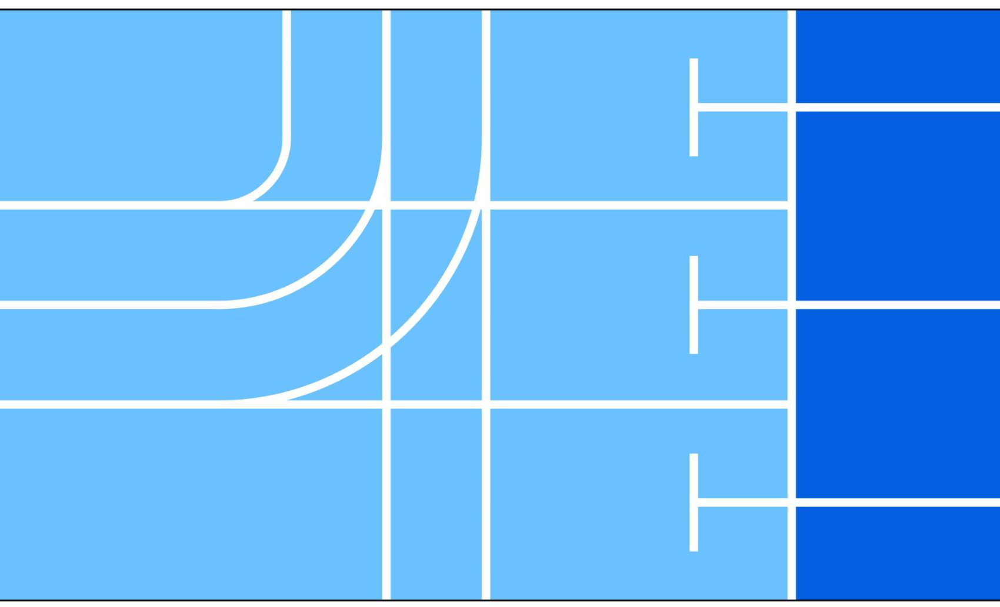

International Standards · IST
Edition 2027 · effective 1 January 2027 · current
Retrieved on 26 November 2026 from https://www.wada-ama.org/sites/default/files/2026-09/2027_international_standard_for_testing_ist_0.pdf
Editions: 2027 (current) · 2026 · 2023 · 2021 · 2020 (March 2020) · 2019 · 2017 · 2015 · 2012 · 2009
p. 1
2027 International Standard for Testing

p. 2
International Standard for Testing
The World Anti-Doping Code International Standard for Testing is a mandatory International Standard developed as part of the World Anti-Doping Program. It was developed in consultation with Signatories, public authorities, Athletes, and other relevant stakeholders.
The International Standard for Testing was first adopted in 2003 and came into effect in January 2004. It was subsequently amended nine times, the first time effective January 2009; the second time effective January 2011; the third time it was renamed International Standard for Testing and Investigations (ISTI), effective January 2015; the fourth time effective January 2017; the fifth time effective March 2019; the sixth time effective March 2020, the seventh time effective January 2021, the eighth time effective January 2023, and the ninth time effective April 2026. This version of the IST (renamed from ISTI) incorporates further revisions approved by the WADA Executive Committee on 5 December 2025 and 10 September 2026, and is effective as of 1 January 2027.
Published by:
World Anti-Doping Agency Stock Exchange Tower 800 Place Victoria (Suite 1700) PO Box 120 Montreal, Quebec, Canada H3C 0B4
www.wada-ama.org
Tel:
Fax:
+1 514 904 9232
+1 514 904 8650
E-mail: code@wada-ama.org
p. 3
Table of Content
p. 4
p. 5
PART ONE: INTRODUCTION, CODE PROVISIONS, AND INTERPRETATION
1.0 Introduction and Scope
The first purpose of the International Standard for Testing is to plan for and implement intelligent and effective Testing, both In-Competition and Out-of-Competition, and to maintain the integrity, identity and security of the Samples collected from the point the Athlete is notified of their selection for Testing, to the point that their Samples are delivered to the Laboratory for analysis. To that end, the International Standard for Testing (including its Annexes) establishes mandatory standards for test distribution planning (including the collection and use of Athlete whereabouts information), notification of Athletes, preparing for and conducting Sample collection, security/post-Test administration of Samples and documentation, and transport of Samples to Laboratories for analysis.
The International Standard for Testing is supported by Technical Documents, produced by WADA, to provide assistance to Anti-Doping Organizations in fulfilling their duties under the World Anti-Doping Program. Technical Documents are mandatory. Athletes should receive anti-doping Education in accordance with the International Standard for Education. This is to support the principle that an Athlete's first experience with anti-doping should be with Education rather than Testing.
2.0 Code Provisions
The following Articles in the 2027 Code are directly relevant to the International Standard for Testing; they can be obtained by referring to the Code itself:
- Code Article 2 Anti-Doping Rule Violations
- Code Article 5 Testing and Investigations
- Code Article 6 Analysis of Samples
- Code Article 8 Results Management: Right to a Fair Hearing and Notice of Hearing Decision
- Code Article 10 Sanctions on Individuals
- Code Article 12 Sanctions by Signatories Against Other Sporting Bodies
- Code Article 13 Results Management: Appeals
- Code Article 14 Confidentiality and Reporting
- Code Article 20 Additional Roles and Responsibilities of Signatories and WADA
- Code Article 21 Additional Roles and Responsibilities of Athletes and Other Persons
- Code Article 23 Acceptance and Implementation
p. 6
3.0 Interpretation
The official text of the International Standard for Testing shall be published in English and French. In the event of any conflict between the English and French versions, the English version shall prevail.
Like the Code, the International Standard for Testing has been drafted giving consideration to the principles of proportionality, human rights, and other applicable legal principles. It shall be interpreted and applied in that light.
The comments annotating various provisions of the International Standard for Testing shall be used to guide its interpretation.
Unless otherwise specified, references to Articles or Annexes are references to Articles or Annexes of the International Standard for Testing.
Where the term "days" is used in the International Standard for Testing, it shall mean calendar days (i.e., all the days of the week, including any non-working days) unless otherwise specified.
Terms used in this International Standard that are defined terms from the Code are italicized. Terms that are defined in this or another International Standard are underlined.
Defined terms from the Code and International Standards that are used in the International Standard for Testing are found in Appendix 1.
The Annexes and Appendix to the International Standard for Testing have the same mandatory status as the rest of the International Standard.
The following terms used in the International Standard for Testing shall be interpreted as indicated:
- "Shall" to indicate a mandatory requirement.
- "Should" to indicate a recommendation.
p. 7
PART TWO: STANDARDS FOR TESTING
4.0 Planning Effective Testing
4.1 Objective
4.1.1 Each ADO shall plan and implement intelligent Testing on Athletes over whom it has authority which is proportionate to the risk of doping, and that is effective to detect and to deter such practices. The objective of Article 4 is to set out the steps that are necessary to develop a Risk Assessment and produce a TDP that satisfies this requirement. Code Article 23.3 requires Signatories to devote sufficient resources in order to implement Testing programs in all areas that are compliant with the Code and International Standards.
4.1.2 The ADO shall ensure that Athlete Support Personnel and any other Persons with a conflict of interest are not involved in test distribution planning for their Athletes or in the process of selecting Athletes for Testing.
4.1.3 The ADO shall document its Risk Assessment and TDP and shall provide that Risk Assessment and TDP to WADA where requested. The ADO shall demonstrate to WADA's satisfaction that it has made a proper assessment of the relevant risks of all sports/disciplines under the ADO's jurisdiction and has developed and/or implemented an appropriate TDP based on the outcomes of that assessment.
4.2 Risk Assessment
4.2.1 The starting point of the TDP shall be a Risk Assessment, conducted in good faith. This assessment shall take into account (at a minimum) the following information and shall be reviewed and updated annually:
a) The physical and other demands of the relevant sport(s) (and/or discipline(s) within the sport(s)), considering in particular the physiological requirements of the sport(s)/discipline(s) including sports (and/or disciplines) for Athletes with impairments;
b) Which Prohibited Substances and/or Prohibited Methods an Athlete would consider most likely to enhance performance in the relevant sport(s)/discipline(s);
c) The rewards and/or potential incentives for doping available at the different levels of the sport(s)/discipline(s) and for the nations participating in such sport(s)/discipline(s);
[Comment to Article 4.2.1 c): This may also include sport(s)/discipline(s) of national interest.]
d) The history of doping in the sport(s)/discipline(s), nation(s) and/or Event;
[Comment to Article 4.2.1 d): Unless there has been an effective Testing program in a sport, encompassing both IC and OOC Testing, a history of no or few AAFs says little, if anything, about the risk of doping in that sport.]
p. 8
e) Available statistics and research findings on doping trends (e.g., anti-doping Testing figures and anti-doping rule violation reports published by WADA; peer-reviewed articles);
f) Raw Information received or Anti-Doping Intelligence developed on possible doping practices in the sport, e.g., Laboratory and APMU Target Test/Further Analysis recommendations; Passport status; SCP reports; Athlete testimony; Raw Information from criminal investigations; and/or other Raw Information received or Anti-Doping Intelligence developed in accordance with the International Standard for Intelligence and Investigations and Article 12;
g) The outcomes of previous test distribution planning cycles including past Testing strategies; and
h) Data analysis of the sport/discipline including but not limited to performance of the nation within the sport/discipline at an international level, e.g., number of Athletes who achieve podium finishes or an increase in international rankings.
4.2.2 The ADO should also consider in good faith any Risk Assessment for the sport or discipline in question carried out by another ADO with overlapping TA. However, an International Federation is not bound by a NADO's assessment of the risks of doping in a particular sport or discipline, and a NADO is not bound by an International Federation's assessment of the risks of doping in a particular sport or discipline.
4.2.3 The ADO shall monitor, evaluate and update its Risk Assessment during the year/cycle in light of changing circumstances.
4.3 Defining International-Level and National-Level Athletes
4.3.1 Code Article 5.2 gives different ADOs authority to conduct Testing on potentially very large pools of Athletes. However, in recognition of the finite resources of ADOs, the Code definition of Athlete allows NADOs to limit the number of Athletes who will be subject to their national anti-doping programs (in particular, Testing) to those who compete at the highest national levels (i.e., National-Level Athletes, as defined by the NADO). It also allows International Federations to focus their anti-doping programs (in particular Testing) on those who compete regularly at the international level (i.e., International-Level Athletes, as defined by the International Federation).
[Comment to Article 4.3.1: Nothing prevents an International Federation from Testing an Athlete under its authority who is not an International-Level Athlete, if it sees fit, e.g., where they are competing in an International Event. Furthermore, as set out in the Code definition of Athlete, a NADO may decide to extend its anti-doping program (including Testing) to Athletes under its authority who are not National-Level Athletes. However, the main focus of an International Federation's TDP should be International-Level Athletes, and the main focus of a NADO's TDP should be National-Level Athletes and above.]
4.3.2 Therefore, once the Risk Assessment described in Article 4.2 is completed, the next step is to determine an appropriate definition of International-Level Athlete (for an International Federation), or National-Level Athlete (for a
p. 9
NADO) who are going to be subject to Testing by an ADO:
a) An International Federation is free to determine the criteria it will use to classify Athletes as International-Level Athletes, e.g., by ranking, by participation in particular International Events, etc. It should make that determination in good faith, in accordance with its responsibility to protect the integrity of the sport at the international level (the showcase of the sport to the public), by fixing a definition that shall, at a minimum (and in accordance with the Risk Assessment undertaken in connection with the relevant sport/sports discipline), include those Athletes who compete regularly at an international level and/or who compete at a standard at which world records may be set.
[Comment to Article 4.3.2 a): The Code requires each International Federation to publish in clear and concise form the criteria it uses to classify Athletes as International-Level Athletes, so that it is clear to everyone where the line is drawn. For International Federations they shall publish such criteria on their website. For example, if the criteria include competing in certain International Events, then the International Federation shall publish a list of those International Events on its website.]
b) Similarly, a NADO is free to determine the criteria it will use to classify Athletes as National-Level Athletes. Again, it should make that determination in good faith, in accordance with its responsibility to protect the integrity of the sport at the national level (the source of national pride in different sports, and the steppingstone to international Competition, including representation of the nation in International Events or Competitions). Consequently, the definition shall at a minimum (and in accordance with the Risk Assessment undertaken in connection with the relevant sport/sports discipline) include those who compete at the highest levels of national Competition in the sport in question (i.e., in national championships or other Events that determine or count toward determining who are the best in the country in the category/discipline in question, and/or who may be selected to represent the country in International Events or Competitions). It shall also include those nationals of its country who generally or often compete at an international level and/or in International Events or Competitions (rather than at the national level) but who are not classified as International-Level Athletes by their International Federation.
4.4 Prioritizing Between Sports and/or Disciplines
4.4.1 Next, the ADO shall consider whether there are any factors warranting allocation of Testing resources to one sport or discipline or nation (as applicable) in priority to others and shall take into account without limitation their calendar of Events. This means having assessed the relative risks of doping:
a) In the case of an International Federation, allocating Testing between the different disciplines and nations, within its sport.
b) In the case of a NADO, allocating Testing between the different sports as well as any national anti-doping policy imperatives that may lead it to prioritize certain sports over others.
p. 10
[Comment to Article 4.4.1 b): NADOs will have varying national policy requirements and priorities. For example, one National Anti-Doping Organization may have legitimate reasons to prioritize (some or all) Olympic sports while another may have legitimate reasons, because of different characteristics of that sporting nation, to prioritize for example certain other 'national' sports. These policy imperatives are a relevant consideration in the NADO's test distribution planning, alongside its assessment of the relative risks of doping in the various sports played within its national jurisdiction. They may lead, for example, to a NADO deciding, in its Test Distribution Plan, for a particular period, (1) to allocate Testing to some sports within its jurisdiction but not others; and (2) to prioritize certain sports over others due not to a greater risk of doping in those sports but to a greater national interest in ensuring the integrity of those sports.]
c) In the case of a MEO, allocating Testing between the different sports and/or disciplines involved in its Event.
d) Another factor relevant to the allocation of Testing resources within the TDP will be the number of Athletes involved at the relevant level in the sport(s) and/or discipline(s) and/or nation(s) in question. Where the risk of doping is assessed to be equal between two (2) different sports or disciplines or nations, more resources should be devoted to the sport or discipline or nation involving the larger number of Athletes.
4.5 Prioritizing Between Different Athletes
4.5.1 Once the International-Level Athletes and National-Level Athletes have been defined (see Article 4.3), and the priority sports/disciplines/nations have been established (see Article 4.4), an intelligent TDP uses individual Athlete risk assessment and Target Testing to focus Testing resources where they are most needed*. Target Testing* shall therefore be made a priority, i.e., a significant amount of the Testing undertaken as part of an ADO's TDP shall be Target Testing of Athletes within its Whereabouts Pool.
[Comment to Article 4.5.1: Target Testing is a priority because random Testing, or even weighted random Testing, does not ensure that all the appropriate Athletes will be tested sufficiently based on their risk level. The Code does not impose any reasonable suspicion or probable cause requirement for Target Testing. However, Target Testing should not be used for any purpose other than legitimate Doping Control.]
4.5.2 ADOs shall prioritize Target Testing and inclusion within a Whereabouts Pool the following categories of Athletes:
a) For International Federations, Athletes or teams¹ (especially from its higher risk disciplines) or nations who compete regularly at the highest level at International Events (e.g., candidates for Olympic Games, Paralympic Games, World Championships or other multi-sport or multi-day Events), as determined by rankings or other suitable criteria.
b) For NADOs, the following Athletes from its higher risk sports/disciplines:
i. Athletes who are part of national teams and compete at International Events or other sports of high national priority (or who may be
¹For the purposes of the 2027 International Standard for Testing Article 4 a 'team' is defined as a group of Athletes competing in a Team Sport.
p. 11
selected for such teams);
ii. Athletes who train independently, and compete at International Events or who may be selected for such Events;
iii. Athletes in receipt of public and/or National Olympic Committee/National Paralympic Committee funding;
iv. National Level Athletes who reside, train or compete abroad including Athletes participating in Team Sports;
[Comment to Article 4.5.2 b) iv: Even if National Level Athletes are not residing or training within the NADO's country, it is still that NADO's responsibility to ensure those Athletes are subject to testing abroad. This includes the ability to transfer funds internationally to pay another SCA for any costs associated with such requests. The fact that an Athlete resides or frequently trains abroad is not a valid reason not to test them.]
v. National Level Athletes who are nationals of other countries but who are present (whether residing, training, competing or otherwise) within the NADO's country; and
vi. In collaboration with International Federations, International-Level Athletes.
c) For all ADOs with TA:
i. Athletes serving a period of Ineligibility or a Provisional Suspension; and
ii. Athletes who were in a Whereabouts Pool before they retired from sport or stopped competing in sport at an international or national level and who return to competition at a national or international level.
[Comment to Article 4.5.2: Coordination and collaboration between ADOs shall occur in accordance with Article 4.10.18.]
4.5.3 Other individual risk factors relevant to determining which Athletes shall be the subject of Target Testing and inclusion in a Whereabouts Pool shall also be prioritized by the ADO. Relevant risk factors may include (but are not limited to):
a) Prior anti-doping rule violations, Test history, including any abnormal biological parameters (blood parameters, steroidal and endocrine profiles, as reported by an APMU, etc.);
b) Sport performance history, performance pattern including sudden major improvements or inconsistent performances, and/or high performance without a commensurate Test record;
c) Repeated failure to meet whereabouts requirements;
d) Suspicious whereabouts patterns or changes (e.g., last-minute updates of whereabouts information such as frequent changes of training locations or moving to or training in a remote location);
e) Withdrawal or absence from expected Competition(s);
f) Association with a third party (such as a team-mate, coach or doctor) with a history of involvement in doping;
p. 12
g) Injury;
h) Age/stage of career an Athlete would be most likely to benefit from Prohibited Substances and/or Prohibited Methods (e.g., move from junior to senior level, nearing end of contract, approaching retirement);
i) Financial incentives for improved performance, such as prize money or sponsorship opportunities;
j) Reliable Raw Information from a third party, or Anti-Doping Intelligence developed by or shared with the ADO in accordance with Article 12 and the International Standard for Intelligence and Investigations; and/or
k) Any other criteria that would require an Athlete(s) to be entered into a Whereabouts Pool for OOC Testing.
4.5.4 Testing which is not Target Testing shall be determined by Random Selection and should be conducted in accordance with the selection options in the IST Guideline - Implementing an Effective Testing Program. Random Selection shall be conducted using a documented system for such selection. Random Selection may be either weighted (where Athletes are ranked using pre-determined criteria in order to increase or decrease the chances of selection) or completely random (where no pre-determined criteria are considered, and Athletes are chosen arbitrarily from a list or pool of Athlete names). Random Selection that is weighted shall be prioritized and be conducted according to defined criteria which may take into account the factors listed in Article 4.5.2 and 4.5.3 (as applicable) in order to ensure that a greater percentage of 'at risk' Athletes are selected.
[Comment to Article 4.5.4: In addition to Target Testing, Testing by Random Selection can play an important deterrent role, as well as helping to protect the integrity of an Event.]
4.5.5 For the avoidance of doubt, notwithstanding the development of criteria for selection of Athletes for Testing, and in particular for Target Testing of Athletes, as well as the fact that as a general rule Testing shall take place between 6 a.m. and 11 p.m. unless (i), the Athlete stipulates a 60-minute time slot from 5 a.m. or, (ii) valid grounds exist for Testing overnight (i.e., between 11 p.m. and 6 a.m.), the fundamental principle remains (as set out in Code Article 5.2) that an Athlete may be required to provide a Sample at any time and at any place by any ADO with authority to conduct Testing, whether or not the selection of the Athlete for Testing is in accordance with such criteria. Accordingly, an Athlete may not refuse to submit to Sample collection on the basis that such Testing is not provided for in the ADO's TDP and/or is not being conducted between 6 a.m. and 11 p.m., and/or that the Athlete does not meet the relevant selection criteria for Testing or otherwise should not have been selected for Testing.
4.6 Prioritizing Between Different Types of Testing, Sample Collection and Analysis
4.6.1 Based on the Risk Assessment and prioritization process described in Articles 4.2 to 4.5, the ADO shall determine to what extent each of the following types of Testing, Sample collection and analysis are required in order to detect and deter doping practices within the relevant sport(s), p. 13 discipline(s) and/or nation(s), intelligently and effectively:
4.6.1.1 In-Competition Testing and Out-of-Competition Testing;
a) In sports and/or disciplines that are assessed as having a high risk of doping during OOC periods, OOC Testing shall be made a priority, and a significant portion of the available Testing shall be conducted OOC. IC Testing shall still take place to deter doping, to protect the integrity of the Event and the results of the Competition. OOC Testing should be targeted across different periods of the year, including but not limited to the period leading up to an Athlete's Events, and during the Athlete's off season. OOC Testing should not be focused solely on the period immediately prior to an Event when Athletes arrive where the Competition is being held and are more accessible to the TA.
b) In sports and/or disciplines that are assessed as having a low risk of doping during OOC periods (i.e., where it can be clearly shown that doping while OOC is unlikely to enhance performance or provide other illicit advantages), IC Testing shall be made a priority, and a significant portion of the available Testing shall be conducted IC. However, some OOC Testing shall still take place, proportionate to the risk of OOC doping in such sport/discipline.
c) Very exceptionally, i.e., in the small number of sports and/or disciplines where it is determined in good faith that there is no material risk of doping during OOC periods, there may be no OOC Testing. In these circumstances, the International Federation shall apply to WADA to seek an exemption from OOC Testing in accordance with any protocol issued by WADA.
4.6.1.2 Sample Collection and Analysis
- 4.6.1.2.1
- 4.6.1.2.2
Collection and analysis of urine including (but not limited to) for the Steroidal Module of the ABP;
Collection and analysis of blood² including:
²For the purposes of the 2027 International Standard for Testing, ‘A blood Sample’ is defined as ‘whole blood’ or ‘serum or plasma separated from whole blood’ unless specified that it includes a DBS Sample.
a) Collection of whole blood³ and analysis of:
³Whole blood Samples may be venous or liquid capillary blood.
i. Whole blood including (but not limited to) for the Hematological Module of the
p. 14
ABP, homologous blood transfusion (HBT), DNA analyses and gene doping tests; and
[Comment to Article 4.6.1.2.2 a) i): Whole blood is collected in EDTA tubes as outlined in Article 6.3.4 s). Analysis of whole blood means that the collected whole blood is used for analysis as such, without its separation (by centrifugation or other means) into the blood cellular and liquid fractions (serum or plasma).]
ii. Serum separated from whole blood. For these analyses, the serum is obtained from the collected whole blood after centrifugation of the serum tubes in the Laboratory. Analyses of serum include, but are not limited to, human growth hormone (GH), the Endocrine Module of the ABP, the blood Markers of Steroidal Module of the ABP, steroid esters, erythropoietin receptor agonists (ERAs) and hemoglobin based oxygen carriers (HBOCs)
[Comment to Article 4.6.1.2.2 a) ii): For the analysis of serum, whole blood shall be collected in serum tubes (containing a clotting activator) as outlined in Article 6.3.4 t).]
iii. Plasma separated from whole blood. For these analyses, the plasma is obtained from the collected whole blood after centrifugation in the Laboratory. Analyses of plasma include but are not limited to tests for ERAs, steroid esters, insulins and HBOCs; and
[Comment to Article 4.6.1.2.2 a) iii): For the analysis of plasma, whole blood shall be collected in EDTA tubes as outlined in Article 6.3.4 s).]
b) Collection and analysis of blood as Dried Blood Spots (DBS).
[Comment to Article 4.6.1.2.2 b): Blood is collected from capillary blood vessels through puncture/incision of the skin.]
[Comment to Article 4.6.1.2.2: The requirements for blood in this International Standard for Testing apply, without limitation to Samples collected by venipuncture in accordance with Annex F - Collection of Blood Samples and Annex G - Collection, Storage and Transport of Blood Samples for the Athlete Biological Passport and by capillary blood sampling in accordance with Annex H - Collection, Storage and Transport of Dried Blood Spot Samples; however, different requirements apply depending on the Sample Collection Equipment and the requested analyses as outlined above.]
p. 15
4.7 Test Distribution Plan
4.7.1 In finalizing its Test Distribution Plan, the ADO shall incorporate at a minimum the following:
a) All of the steps outlined in Articles 4.2 to 4.6 and ensure that all the outcomes of the Risk Assessment are reflected;
b) Requirements of the IST TD SSA;
c) OOC Testing based on the structure of the season for the sport/discipline in question (including standard Competition schedules and training patterns), at what time(s) during the year/cycle Athletes would be most likely to benefit from Prohibited Substances and/or Prohibited Methods and out of season Testing. ADOs shall employ various Testing strategies to ensure unpredictability of the OOC Testing program; and
d) IC Testing based on those sports/disciplines that have been identified in the Risk Assessment and the associated calendar of Events for the period of the Test Distribution Plan. ADOs shall take into account unpredictability when selecting Events for Testing.
[Comment to Article 4.7.1 c) and d): The unpredictability of Tests is crucial to maximize deterrence and detection of doping. Varying Testing strategies means that Athletes are not only tested at their 60-minute time slot, but also at their training, overnight address, during the off season, when they are training/residing abroad, and varying the selection of Events, etc.]
4.7.2 An ADO shall allocate sufficient resources to be able to implement its Test Distribution Plan.
4.7.3 In advance of the Olympic Games and Paralympic Games, ADOs shall monitor those Athletes who may qualify for or have qualified and conduct Testing on such Athletes in accordance with a comprehensive Risk Assessment. ADOs shall allocate sufficient resources to Test such Athletes and where appropriate include them in a Whereabouts Pool. The Sample analysis shall be prioritized in accordance with Article 4.8.3. For other International Events, outside of the Olympic and Paralympic Games, ADOs should, where possible, follow these principles.
[Comment to Article 4.7.3: ADOs should consider as part of their Testing program any Testing recommendations they may receive from external expert groups such as a pre games taskforce leading up to International Events such as the Olympic and Paralympic Games to ensure that a focused and robust Testing program is applied to those Athletes that are likely to participate.]
p. 16
4.7.4 The ADO shall monitor, evaluate and update its TDP during the year/cycle in light of changing circumstances and implementing the TDP. It shall adapt its TDP to reflect new information gathered, including any Anti-Doping Intelligence developed by the ADO, reactive Testing required as a result of APMU/Laboratory recommendations and take into account Testing conducted by other ADOs.
4.8 Sample Analysis
4.8.1 Laboratories shall analyze Samples collected by ADOs using IC or OOC Analytical Testing menus as applicable, to detect the presence of Prohibited Substances and/or Prohibited Methods. ADOs may also consider undertaking more extensive Sample analysis for Prohibited Substances or Prohibited Methods beyond those contained (or the levels required) within the IST TD SSA based on the risk of the sport/discipline/country or any Anti-Doping Intelligence that the ADO may receive.
[Comment to Article 4.8.1: In line with Article 5.3.4 c) of the International Standard for Laboratories, Laboratories may also perform additional analysis on Samples for non-prohibited substances or methods or for research or Quality Assurance (see also Article 5.3.8.2 of the International Standard for Laboratories) which would not be reported as an ATF or AAFs.]
4.8.1.1 ADOs with TA responsibilities shall ensure there are agreements in writing with Laboratories and ABP Laboratories (i.e., Laboratories) to analyze Samples and/or provide related services and ensure that the payment for such analyses and any related services is made in a timely manner to the Laboratory.
[Comment to Article 4.8.1.1: For the avoidance of doubt and without limitation, WADA may initiate non-compliance proceedings against an ADO where payment is not timely to the Laboratory in accordance with this provision, in particular in circumstances where non-payment is recurrent or significant.]
4.8.2 To ensure the effectiveness of the Analytical Testing Process, TAs / Results Management Authorities (if different) shall maintain regular communication with Laboratories and respond to Laboratory requests within the established timelines as contained in the International Standard for Laboratories. In particular, to the following situations:
a) Analysis of Samples with irregularities in accordance with Article 5.3.2.1 of the International Standard for Laboratories;
b) Splitting of Samples including notification to the Athlete in accordance with Article 5.3.2.2 of the International Standard for Laboratories;
c) Where the presence of more than one (1) Prohibited Substance or Prohibited Method is detected by the Initial Testing Procedures, to determine which Presumptive AAFs shall be subjected to a Confirmation Procedure in accordance with Article 5.3.4.1.3 b) of the International Standard for Laboratories;
d) To respond in writing whether an approved TUE exists for a Prohibited
p. 17
Substance(s) for which there is Presumptive AAF, before proceeding to the "A" Confirmation Procedure in accordance with Article 5.3.4.1.3 c) of the International Standard for Laboratories;
e) Information about "B" Sample confirmations in accordance with Articles 5.3.4.1.4 b) and c) of the International Standard for Laboratories;
f) Where notified by the Laboratory of the need to extend the reporting timelines and provision of Certificate of Analysis or Laboratory Documentation Package in accordance with Article. 5.3.6.4 c) of the International Standard for Laboratories; and
g) Performance of Confirmation Procedures (e.g., GC/C/IRMS) triggered by ADAMS-generated Atypical Passport Finding/Confirmation Procedure Request notifications for elevated T/E ratios in accordance with the Technical Document on the Measurement and Reporting of Endogenous Anabolic Androgenic Steroid Markers of the Urinary Steroid Profile (ISL TD USP), or following recommendations from APMUs.
[Comment to Article 4.8.2: A failure by the TA/RMA to provide timely feedback to the Laboratory for a)-g) above may result as applicable to the Laboratory reporting the sample as Not Analyzed or performing the necessary analyses at the TA's expense. It may also result in compliance measures being raised with the TA.]
4.8.3 Where a Sample is to be collected from an Athlete within twenty (20) days prior to the Athlete's first Competition at the Olympic or Paralympic Games for which an Athlete has qualified or is likely to participate, the TA shall implement the following:
Cited by 1
a) Proactively communicate with the Laboratory when prioritized Sample analysis is required, so the Laboratory can determine whether they have the resources to meet the request. Where a Laboratory is unable to meet the TA's request for prioritized analysis, the TA shall contact alternative Laboratories to attempt to have the Samples prioritized for analysis
b) Post the collection of the Sample(s), request, record and manage in ADAMS the Sample(s) that the Laboratory are to prioritize the analysis of and the agreed shorter timeframes for reporting the results.
[Comment to Article 4.8.3 b): Due to the potentially high number of Samples that will require analysis during this period, Laboratories may have to prioritize the Sample analysis of Olympic or Paralympic Athlete Samples during this period over non-Olympic or non-Paralympic Samples.]
c) Request the Laboratory to report the results prior to the opening ceremony of the Olympic or Paralympic Games or at the latest seventy-two (72) hours prior to the Athlete's first Competition.
[Comment to Article 4.8.3 c): It is acknowledged that Testing may need to occur on Athletes close to the start of the Olympic or Paralympic Games where the analytical result may not be reported seventy-two (72) hours prior to the Athlete's first Competition and that the Laboratory may need additional time to confirm specific analyses, e.g., Gas Chromatography/Combustion/Isotope Ratio Mass Spectrometry (GC/C/IRMS), or other initial analytical or Confirmation Procedures which may delay the reporting of results.]
d) Doping Control forms for all Samples collected within twenty (20) days p. 18 prior to the Athlete's first competition at the Olympic or Paralympic Games shall be entered into ADAMS within five (5) days of the Sample collection taking place.
[Comment to Article 4.8.3: The objective of prioritized analysis during this twenty (20)-day period is to where possible ensure that any Athletes participating in the Olympic or Paralympic Games have analytical results reported at the latest seventy-two (72) hours prior to Athlete's first Competition to protect the integrity of the event, and the results of the Competition. ADOs shall not avoid collecting Samples from Athletes during this twenty (20) day window due to additional costs that may be associated with prioritized analysis or fear of not receiving the analytical results within the timeframe.
Where a Sample is collected from an Athlete earlier but close to twenty (20) days prior the Athlete's first Competition at the Olympic or Paralympic Games, prioritized analysis for such Samples should be considered by the TA in conjunction with the Laboratory and their reporting timelines.
For other International Events outside of the Olympic and Paralympic Games, ADOs should where possible follow these principles.]
4.8.4 An ADO may apply to WADA for flexibility in the implementation of the minimum levels of analysis specified for Prohibited Substances or Prohibited Methods as outlined in the IST TD SSA.
4.9 Retention of Samples and Further Analysis
4.9.1 ADOs shall develop a written strategy for retention of Samples and the documentation relating to the collection of such Samples so as to enable the Further Analysis of such Samples at a later date in accordance with Code Article 6.6. Such strategy shall comply with the requirements of the International Standard for Laboratories and the International Standard for Data Protection and shall take into account the purposes of analysis of Samples set out in Code Article 6.2.
[Comment to Article 4.9.1: ADOs shall allocate sufficient resources to the annual Testing and analysis budget so that their retention and Further Analysis strategy for Samples can be monitored and fulfilled.]
4.9.2 ADOs should put a Sample into long term storage if an APMU recommends them to do so. If the ADO does not agree that the Sample should be put into long term storage, the ADO should discuss this with the APMU. If the Sample will not be stored, the reasons for not storing the Sample shall be recorded in ADAMS by the ADO.
4.9.3 ADOs shall prioritize the following elements or circumstances (without limitation) when considering long term storage or Further Analysis of Samples;
a) Laboratory or APMU recommendations;
b) The possible need for retroactive analysis in connection with the ABP program;
c) New or enhanced detection methods introduced in the future relevant to the Athlete, sport and/or discipline;
p. 19
d) Samples collected from Athletes meeting any of the criteria set out at Article 4.5;
e) Any other information made available to the ADO justifying long-term storage or Further Analysis of Samples at the ADO's discretion; and
f) Athlete performance including podium finishes, world/national records and unexpected performances.
4.9.4 Samples put into long term storage which are discarded by the ADO without Further Analysis being conducted prior to expiry of the ten (10) year storage period shall have the reasons for discarding recorded in ADAMS.
4.9.5 Long term storage requests to a Laboratory in accordance with Article 10.2 may be made by any ADO that has jurisdiction over the Athlete. Samples that are requested to be placed into long-term storage after the Sample has been analyzed shall be recorded in ADAMS by the TA or by the relevant ADO when they request such storage or within the minimum Sample storage period based on the type of Sample as outlined in Article 5.3.7.1 of the International Standard for Laboratories. The same applies for Sample(s) that an APMU recommends putting into long term storage. Once the recommendation has been made to store a Sample long term, the Laboratory shall confirm in ADAMS that the Sample(s) have been placed into long-term storage along with any applicable information regarding the Sample(s).
[Comment to Article 4.9: ADOs are responsible for the costs associated with the long-term storage of Samples beyond the minimum required storage times established in the International Standard for Laboratories unless the Samples are stored at the Laboratory's own decision in accordance with the International Standard for Laboratories or otherwise agreed with the applicable Laboratory.]
4.10 Collecting Whereabouts Information
4.10.1 Where OOC Testing is required to be conducted on Athletes (following the development of the International Federation's or NADO's Risk Assessment and the prioritization steps in Articles 4.2 to 4.6), the International Federation or NADO shall then determine the Whereabouts Pool the Athlete will be included in and should use the whereabouts filed by those Athletes in order to conduct No Advance Notice Testing effectively. The International Federation or NADO shall request and collect all of the required whereabouts information in accordance with the requirements of the applicable Whereabouts Pool the Athlete has been included in. Every Athlete shall submit to Testing at any time and place upon request by an ADO with authority to conduct Testing regardless of whether they are part of a Whereabouts Pool.
4.10.2 International Federations and NADOs shall collect whereabouts information for Athletes in a RTP and TP and in accordance with Code Articles 5.5 and 14.5, such information shall be automatically available and accessible through ADAMS to WADA and other relevant ADOs with overlapping TA. This information shall:
a) Be stored securely and maintained in strict confidence at all times, is p. 20 used exclusively for the purposes set out in Code Article 5.5 and is destroyed in accordance with the International Standard for Data Protection once it is no longer relevant;
b) Be used for purposes of planning, coordinating or conducting Doping Control and can be accessed by:
i. Authorized individuals acting on behalf of the International Federation or NADO (as applicable) on a need-to-know basis only;
ii. WADA; and
iii. Other ADOs with authority to conduct Testing on the Athlete in accordance with Code Article 5.2;
c) Be relevant to the ABP or other analytical results;
d) Support an investigation into a potential anti-doping rule violation; and/or
e) Support proceedings alleging an anti-doping rule violation.
4.10.3 The International Federation or NADO shall be able to demonstrate to WADA that it has conducted an appropriate risk-based approach in allocating Athletes to their Whereabouts Pool and has allocated sufficient OOC Tests in its TDP as required in Articles 4.10.4.1 and 4.10.13.3.
4.10.4 Registered Testing Pool
4.10.4.1 The RTP includes International or National-Level Athletes of the highest priority and from sports/disciplines of higher risk, who shall be subject to the greatest amount of Testing and whom the International Federation or NADO shall plan to test at least three (3) times per year OOC. Athletes in a RTP are therefore required to provide whereabouts in accordance with Article 4.10.6.2 and shall be subject to Code Article 2.4 Whereabouts Requirements.
[Comment to Article 4.10.4.1: The minimum number of three OOC Tests planned to be conducted on Athletes in a RTP per year shall include at a minimum the collection of a urine Sample for each Test conducted during a SCS.
If an International Federation or NADO includes an Athlete into a RTP for a shorter period of time than one year, the minimum number of OOC Tests planned shall be proportionate to the time period the Athlete is included in the RTP, i.e., for one (1) quarter or less, at least one (1) OOC Test shall be planned, and for two (2) to three (3) quarters, at least two (2) OOC Tests shall be planned.]
4.10.4.2 An International Federation or a NADO shall prioritize the inclusion of Athletes into a RTP based on the following criteria:
a) Athletes who meet the criteria listed in Articles 4.5.2 and 4.5.3;
b) Athletes who are part of the ADO's Hematological and/or any other Module of the ABP program as required by the
p. 21
IST TD SSA;
c) Athletes in a TP who fail to comply with the applicable whereabouts requirements of that pool;
d) Athletes in a Team Sport who are not part of Team Activities for a period of time (e.g., injury or during the off season); and
e) Athletes who are serving a period of Ineligibility taking into account the level of the Athlete, e.g., recreational level or whether a Specified Substance is involved.
[Comment to Article 4.10.4.2: International Federations and NADOs shall document either in ADAMS or in another secure way the criteria it applied for selecting and including Athletes within its RTP and where documented outside ADAMS provide it to WADA upon request. International Federations or NADOs are not required to disclose or justify an Athlete's inclusion in a RTP to an Athlete or any third party. WADA may under its compliance monitoring program undertake a review of such criteria and the Athletes that have or have not been included within an International Federation's or NADO's RTP at any time. Following such review WADA may request further information to determine if the Risk Assessment undertaken and/or the criteria used by the International Federation or NADO is sufficient, proportionate and reflective of the priority of the Athletes and/or risk of the sports/disciplines. As a result, WADA may issue a corrective action requiring the International Federation or NADO to adjust its Risk Assessment, and/or the criteria for entry into its RTP which may result in the inclusion and/or removal of certain Athletes in an International Federation's or NADO's RTP.
Following consideration of criteria in Articles 4.10.4.2 a)-e) above and once the Athletes in the RTP are determined, the International Federation or the NADO shall plan, independently or in agreed coordination with other ADOs with TA over the same Athlete, to test any Athlete included in the RTP at least three (3) times OOC per year.]
4.10.4.3 Athletes under the TA of a NADO and an International Federation should only be in one RTP to avoid duplication of Testing and maximize the use of resources. While being included in more than one RTP is possible, Athletes shall only file one set of whereabouts information. If the Athlete is included in the International Federation's RTP and in the NADO's RTP (or in the RTP of more than one NADO or more than one International Federation), each of them shall notify in writing the Athlete that they are in its pool. Prior to doing so, however, they shall agree between themselves to whom the Athlete shall provide their Whereabouts Filings. The NADO or International Federation that the Athlete files their whereabouts to shall be the Whereabouts Custodian. Each notice sent to the Athlete shall specify that they shall provide their Whereabouts Filings to the Whereabouts Custodian only (and that information, will be accessible to any other ADOs that have authority to conduct Testing on that Athlete) via ADAMS.
[Comment to Article 4.10.4.3: If the respective ADOs cannot agree between themselves who the Whereabouts Custodian shall be, they should each explain in writing to WADA how they believe the matter should be resolved, and WADA will decide based on the best interests of the Athlete. WADA's decision will be final and may not be appealed.]
p. 22
4.10.5 Entering and Leaving a Registered Testing Pool
4.10.5.1 The International Federation or NADO (as applicable) shall notify in writing each Athlete designated for inclusion in its RTP of the following:
a) The fact that they have been included in its RTP with effect from a specified date in the future;
b) The whereabouts requirements with which they shall therefore comply including that it is the Athlete's responsibility to ensure that they provide all the information required in a Whereabouts Filing as outlined in Article 4.10.6.2 accurately and in sufficient detail to enable any ADO wishing to locate the Athlete for Testing on any given day in the quarter at the times and locations specified by the Athlete in their Whereabouts Filing for that day, including but not limited to during the 60-minute time slot specified for that day in the Whereabouts Filing;
c) The Consequences if they fail to comply with those whereabouts requirements including Filing Failures and Missed Tests; and
d) That their Whereabouts Filing will be made available and accessible through ADAMS with other ADOs that have authority to conduct Testing on them and that they may be tested by other ADOs.
[Comment to Article 4.10.5.1: The notification of an Athlete's inclusion in a RTP shall ordinarily be made reasonably in advance of the Athlete being included in the RTP. The notice shall also explain what the Athlete needs to do in order to comply with the Code Article 2.4 Whereabouts Requirements (or refer them to a website or other resource where they can find out that information). Athletes included in a RTP shall be informed and should be educated so that they understand their whereabouts requirements, and how the whereabouts system works. This notification may also be made through the National Federation or National Olympic Committee where the International Federation or NADO considers it appropriate or expedient to do so.
ADOs should also be proactive in helping Athletes avoid Filing Failures. For example, many International Federations and NADOs systematically remind Athletes in their RTP of quarterly deadlines for Whereabouts Filings and then follow-up with those Athletes who have still not made the necessary filing as the deadline approaches. However, Athletes remain fully responsible for complying with the filing requirements, irrespective of whether or not their International Federation or NADO has provided them with such support.
The International Federation or NADO shall record the start date of when the Athlete is included in its RTP in ADAMS.]
p. 23
4.10.5.2 An Athlete who has been included in a RTP shall continue to be subject to the Code Article 2.4 Whereabouts Requirements unless and until:
a) They have been given written notice by each International Federation or NADO that included them in its RTP that they are no longer part of its RTP; or
[Comment to Article 4.10.5.2 a): The International Federation or NADO shall record the end date on which the Athlete is no longer included in its RTP in ADAMS and shall document the reason for removal either in ADAMS or in another secure way and where documented outside ADAMS provide this information to WADA upon request.]
b) They retire from Competition in their sport in accordance with the applicable rules and give written notice to that effect to each International Federation or NADO that included them in its RTP. The International Federation or NADO shall confirm in writing the Athlete's retirement and removal from the RTP.
[Comment to Article 4.10.5.2 b): The applicable rules may also require that written notice of retirement be sent to the Athlete's National Federation. Where an Athlete retires from but then returns to sport, the period of retirement shall be disregarded for purposes of calculating the 12-month period referred to in Code Article 2.4. For International Level Athletes or National-Level Athletes who were in a RTP at the time of their retirement and who wish to return to active participation in sport, see Code Article 5.6.1 regarding the requirements the Athlete is subject to, prior to competing in any International Events or National Events.]
4.10.5.3 International Federations and NADOs should communicate the removal of Athletes from their RTP with each other prior to issuing written notice to the Athlete to confirm if the Athlete will be included or retained in their Whereabouts Pool and/or agree on any transfer of whereabouts custodianship as applicable.
4.10.5.4 The written notice to an Athlete of their removal from a RTP shall include at a minimum the following:
a) If the Athlete is also in a Whereabouts Pool of their International Federation or NADO as applicable, they should be advised to continue providing whereabouts to the other organization;
b) The Athlete shall remain subject to anti-doping rules, unless they have retired, and can still be subject to a request to provide a Sample.
c) Whereabouts Failures committed whilst part of a RTP will continue to countdown twelve (12) months from when they were committed and will count toward the three Whereabouts Failures in twelve months as long as the Athlete is part of another RTP.
d) Where an Athlete has retired and is being removed from the
p. 24
RTP the Athlete should be notified of the following:
i. The date of official retirement of the Athlete;
ii. The requirement to provide six (6) months written notice before returning to competition in International Events or National Events in accordance with Code Article 5.6.1; and
iii. Any Whereabouts Failures committed by the Athlete prior to retirement as defined in Article 4.10.5.2 b) of the International Standard for Testing may be combined, for purposes of Code Article 2.4, with Whereabouts Failures committed by the Athlete, after the Athlete again becomes available for OOC Testing as part of a RTP on return from retirement.
4.10.6 Whereabouts Filing Requirements for Athletes in a Registered Testing Pool
4.10.6.1 Athletes in a RTP shall submit their Whereabouts Filing by the
15 th day of each month preceding the start of a calendar quarter (i.e.,15 December, 15 March, 15 June, and 15 September, respectively) or in exceptional cases where an Athlete is included into a RTP during the quarter, by the deadline set by the International Federation or NADO up to a maximum of 15 days.
a) A failure to submit a Whereabouts Filing by the 15th day of the month preceding the quarter or in exceptional cases, by the deadline set by the International Federation or NADO during the quarter shall be pursued as a Filing Failure by the Whereabouts Custodian.
[Comment to Article 4.10.6.1: The filing of whereabouts by the 15th day of the month preceding the start of the following quarter will facilitate planning and readiness for Testing on the first day of the quarter.
Exceptionally and in accordance with Article 4.10.6.1, an International Federation or NADO may include an Athlete in a RTP during a calendar quarter and request the Athlete to submit their Whereabouts Filing within 15 days of being notified of their entry in a RTP or less if there is compelling justification for the Athlete to submit their Whereabouts Filing within a shorter timeframe.]
4.10.6.1.1 Athletes may delegate the filing of their whereabouts to a third party in accordance with Articles 4.10.17.3 and 4.10.17.4
4.10.6.2 Athletes in a RTP shall file the following information as part of their Whereabouts Filing:
Cited by 1
a) For each day during the following quarter, one specific 60-minute time slot between 5 a.m. and 11 p.m. where the Athlete will be available and accessible for Testing p. 25 during the full 60-minute time slot at a specific location;
[Comment to Article 4.10.6.2 a): If an Athlete's travel, e.g., long haul flight does not permit the Athlete to provide a 60-minute time slot at a specific location for the day of the travel, then the Athlete shall file their travel details for that particular day(s) as soon as the travel is known.]
b) For each day during the following quarter, the full address of the place where the Athlete will be staying overnight (e.g., home, temporary lodgings, hotel, including the house, apartment, block, number, etc.);
[Comment to Article 4.10.6.2 b): If an Athlete's travel, e.g., a flight includes an overnight portion which does not permit the Athlete to have a physical overnight address to file, then the Athlete shall file their travel details for that particular day(s) as soon as the travel is known.]
c) For each day during the following quarter, the name and full address of a primary training location where the Athlete plans to train at;
d) The Athlete's Competition/Event schedule for the following quarter, including the name of the Competition/Event and address of each location where the Athlete is scheduled to compete during the quarter and the date(s) at which they are scheduled to compete at such location(s);
[Comment to Article 4.10.6.2 a)-d): The requirements for the filing of whereabouts in further detail are outlined in Articles 4.10.7 to 4.10.10.]
e) An accurate passport style photograph in accordance with the requirements set out in ADAMS, to assist with validating the Athlete's identity when selected for a Test;
[Comment to Article 4.10.6.2 e): Photographs shall be valid for a period of two (2) years and can be updated on a quarterly basis if needed. The access and use of an Athlete's photo shall be in accordance with Article 4.10.2 and the International Standard for Data Protection. If an Athlete does not submit a photograph as part of their quarterly Whereabouts Filing, they will not be able to submit their quarterly Whereabouts Filing.]
f) A primary phone number which they can be called on within the last five (5) minutes of the 60-minute time slot in accordance with Article 4.10.7.9 a) or if applicable in exceptional circumstances in accordance with Article 5.2. An Athlete may also provide one alternative phone number they can be contacted on in addition to the primary phone number provided; and
[Comment to Article 4.10.6.2 f): An Athlete may also file a preferred phone application to be called on.]
[Comment to Article 4.10.6.2 a)-f): Any pattern of behavior relating to the provision of inaccurate or misleading information should be investigated as a possible anti-doping rule violation under Code Article 2.3 or 2.5. It may also prompt additional Target Testing of the Athlete.]
p. 26
g) A complete mailing address and personal e-mail address where correspondence may be sent to the Athlete for formal notice purposes. Any notice or other item mailed to that address will be deemed to have been received by the Athlete at the latest seven (7) days after it was deposited in the mail and immediately once an e-mail is sent (subject to applicable law).
[Comment to 4.10.6.2 g): For these purposes, the Athlete should specify an address where they live or otherwise know that mail received there will be immediately brought to their attention. An International Federation or NADO is also encouraged to supplement this basic provision with other notice and/or "deemed notice" provisions in its rules (for example, permitting use of e-mail or other methods of service of notice; permitting proof of actual receipt as a substitute for deemed receipt; permitting notice to be served on the Athlete's National Federation if it is returned undelivered from the address supplied by the Athlete). The aim of such provisions should be to shorten any Results Management timelines.]
4.10.6.3 In addition to mandatory whereabouts requirements listed in Article 4.10.6.2, Athletes in a RTP may file as part of their Whereabouts Filing any other alternative location(s) such as work or school where the Athlete may be located for Testing during the quarter. An Athlete may also provide additional travel information that may impact their availability for Testing in addition to the requirements outlined in the comment to Article 4.10.6.2 a) and b).
[Comment to Article 4.10.6.3: Given the provision of this additional information is not mandatory, if the Athlete files additional whereabouts information listed in Article 4.10.6.3 but does not update such information or does not file any additional information, the Athlete shall not be subject to a Filing Failure. However, if such additional whereabouts information is filed and there is a change to this information during the quarter, the Athlete should be encouraged to update their Whereabouts Filing.]
4.10.6.4 ADOs shall review Athletes' Whereabouts Filings to ensure they are submitted in accordance with Articles 4.10.6.1 (filed by the due date) and 4.10.6.2 (the mandatory whereabouts information has been filed).
4.10.7 Requirements for the 60-minute Time Slot
4.10.7.1 For Testing to be effective in deterring and detecting doping, it should be as unpredictable as possible. Therefore, the intent behind the 60-minute time slot is not to limit Testing to that period, or to create a 'default' period for Testing, but rather:
a) To make it very clear when an unsuccessful attempt to test an Athlete will count as a Missed Test;
b) To guarantee that the Athlete can be found, and a Sample can be collected, at least once per day (which should deter doping, or, at a minimum, make it far more difficult);
p. 27
c) To increase the reliability of the rest of the whereabouts information provided by the Athlete, and so to assist the ADO in locating the Athlete for Testing outside the 60-minute time slot. The 60-minute time slot "anchors" the Athlete to a certain location for a particular day. Combined with the other mandatory information that the Athlete shall provide as to where they are staying overnight, a primary training location or competing during that day, the ADO should be able to locate the Athlete for Testing outside the 60-minute time slot; and
d) To generate useful Anti-Doping Intelligence, e.g., if the Athlete regularly specifies time slots with large gaps between them, and/or changes their time slot and/or location at the last minute. Such Anti-Doping Intelligence can be relied upon as a basis for the Target Testing of such Athlete.
4.10.7.2 An Athlete in a RTP shall specifically be available and accessible for Testing on any day for the duration of the 60-minute time slot specified that day in their Whereabouts Filing, at the location that the Athlete has specified for that time slot.
4.10.7.3 The Athlete can choose a 60-minute time slot in accordance with Article 4.5.5 provided that during the time slot in question they are available and accessible to the DCO. The specific location could be the Athlete's overnight address, training and/or other alternative location. If an Athlete specifies a 60-minute time slot during which they will be at a hotel, apartment building, gated community or other location where access to the Athlete may have various security measures in place, such as a front reception desk, or security guard, it is the Athlete's responsibility to ensure accessibility to their selected 60-minute location with no advance notice to the Athlete. Any failure to be accessible and available for Testing at the specified location during the specified time slot shall be pursued as a Missed Test;
[Comment to Article 4.10.7.3: Athletes who are Minors or with vision or intellectual impairments should provide a 60-minute location where the presence of an Athlete representative (who is not a Minor) is most likely to be available for the duration of the SCS.]
4.10.7.4 If the Athlete is notified during the 60-minute time slot, the Athlete shall remain with the DCO until the Sample collection has been completed, even if this takes longer than the 60-minute time slot. A failure to do so shall be pursued as an apparent violation of Code Article 2.3 (refusal or failure to submit to Sample collection).
4.10.7.5 If the Athlete is unable to be located for Testing at the beginning of the 60-minute time slot but is located for Testing later on in p. 28 the 60-minute time slot, the DCO should collect the Sample and should not submit an UAR but should report the details of the delay in availability of the Athlete. Any pattern of behavior of this type should be investigated as a possible anti-doping rule violation of evading Sample collection under Code Article 2.3 or Code Article 2.5. It may also prompt additional Target Testing of the Athlete.
4.10.7.6 If an Athlete is not available for Testing during their specified 60-minute time slot at the location specified for that time slot for that day:
a) The DCO shall file an UAR to the TA within five (5) days of the attempt to Test;
b) The TA shall make the UAR available in ADAMS within 21 days of the attempt to Test; and
c) The Athlete shall be liable for a Missed Test even if they are located later that day and a Sample is successfully collected from them.
4.10.7.7 The provision of a 60-minute time slot does not limit in any way the Athlete's Code Article 5.2 obligation to submit to Testing at any time and place upon request by an ADO with authority to conduct Testing on them. Nor does it limit their obligation to provide the information specified in Article 4.10.6.2 b) to d) as to their whereabouts outside that 60-minute time slot.
4.10.7.8 Once the DCO has arrived at the location specified for the 60-minute time slot, if the Athlete cannot be located immediately, then the DCO should remain at that location for whatever time is left of the 60-minute time slot and during that remaining time they should do what is reasonable in the circumstances to try to locate the Athlete. See WADA's IST Guideline - Sample Collection for guidance in determining what is reasonable in such circumstances.
[Comment to Article 4.10.7.8: A DCO is not required to record video and/or audio of their attempts to locate the Athlete during the 60-minute time slot but shall document such attempts made to locate the Athlete in an UAR and file the UAR in accordance with Article 4.10.7.6 a).]
4.10.7.9 Where an Athlete has not been located despite the DCO's reasonable efforts, and there are only five (5) minutes left within the 60-minute time slot, as a last resort the DCO should phone the Athlete (unless exceptional circumstances exist where the TA instructs otherwise, e.g., Anti-Doping Intelligence). Where the DCO calls the Athlete, the following steps apply:
a) The DCO shall use the Athlete's primary phone number (and if applicable an alternative phone number) provided in their Whereabouts Filing to confirm if they are at the specified p. 29 location.
b) If the Athlete answers the DCO's call and is available at (or in the immediate vicinity of) the location for immediate Testing (i.e., within the 60-minute time slot), the DCO should wait for the Athlete and should collect the Sample from them. However, the DCO should also record all the circumstances, so that it can be decided if any further investigation should be conducted. In particular, the DCO should record any facts suggesting that there could have been Tampering or manipulation of the Athlete's urine or blood in the time that elapsed between the phone call and the in-person notification of the Athlete.
c) If the Athlete answers the DCO's call and is not at the specified location or in the immediate vicinity and so cannot make themselves available for Testing within the 60-minute time slot, the DCO shall file an UAR to the TA as outlined in Article 4.10.7.6 a).
d) If the Sample is collected after the phone call has been made, the DCO shall record the time period from when the Athlete answered the call to when the in-person notification occurred, and the TA shall record in ADAMS that a phone call was made and the time period between the call being answered and the in-person notification of the Athlete.
[Comment to 4.10.7.9: If the phone call is not made to the Athlete during the last five (5) minutes of the 60-minute time slot or is not successful, it shall not be relevant to the reasonableness of the DCO's attempts to locate the Athlete during the 60-minute time slot and shall not constitute a defense to liability for a Missed Test.]
4.10.8 Requirements for Providing an Overnight Address
4.10.8.1 An Athlete's overnight address is the location where the Athlete will stay/sleep overnight. The overnight address is a mandatory part of an Athlete's Whereabouts Filing and could be their home or any other overnight address location.
4.10.9 Requirements for Providing a Primary Training Location
4.10.9.1 An Athlete's primary training location is the main training location where the Athlete is likely to train or practice their sport on each day of the quarter. If an Athlete does not have a fixed training location in which they conduct their training activities, e.g., road cycling or sailing, then the Athlete shall file the address of where the Athlete normally starts and/or finishes their training.
[Comment to 4.10.9.1: An Athlete is not required to file the timeframes they will be present at their primary training location or to file more than one training location, however, the Athlete may file this additional training information voluntarily. If the Athlete does not file such additional training information, the Athlete shall not be subject to a Filing Failure.
If the Athlete has no training on a particular day(s) of the quarter, they should outline this in ADAMS when filing their primary training information for the quarter.
An Athlete is not required to submit a primary training location on the days they are competing as per their competition/event schedule they filed.]
p. 30
4.10.9.2 An Athlete will only be required to update their primary training location and the days the Athlete plans to train during the quarter if that training location can no longer be used by the Athlete, e.g., because the Athlete's overnight address changes and it is not geographically possible for the Athlete to train at that training location.
[Comment to Article 4.10.9.2: An Athlete is not required to update the days they plan to train at their primary training location as filed at the start of the quarter during the quarter unless the primary training location is required to be updated. If an Athlete voluntarily files additional training information such as other locations the Athlete trains at or training timeframes for the quarter, the Athlete is not required to update such information during the quarter.]
4.10.10 Requirements for Providing Competition/Event Schedules
4.10.10.1 An Athlete shall file their quarterly Competition/Event schedule that they plan to compete in and update it accordingly during the quarter to ensure it remains accurate.
[Comment to 4.10.10.1: An Athlete who is competing in a Competition which was not part of their quarterly Competition/Event schedule filing shall update their Whereabouts Filing as soon as possible after they become aware of the change in circumstances and in any event prior to the first day of the competition subject to any applicable circumstances of their Competition/Event.]
4.10.11 Athletes Responsibility to File and Update their Whereabouts
4.10.11.1 It is the Athlete's responsibility to ensure that they provide all of the information required in a Whereabouts Filing as outlined in Article 4.10.6.2 accurately and in sufficient detail to enable any ADO wishing to do so to locate the Athlete for Testing on any given day in the quarter as specified by the Athlete in their Whereabouts Filing for that day, including but not limited to during the 60-minute time slot specified for that day in the Whereabouts Filing.
a) More specifically, the Athlete shall provide sufficient information to enable the DCO to find the location, to gain access to the location, and to find the Athlete at the location with no advance notice to the Athlete. A failure to do so may be pursued as a Filing Failure and/or (if the circumstances so warrant) as evasion of Sample collection under Code Article 2.3, and/or Tampering or Attempted Tampering with Doping Control under Code Article 2.5. In any event, the p. 31 ADO shall consider Target Testing of the Athlete.
[Comment to 4.10.11.1 a): For example, declarations such as "running in the Black Forest" are insufficient and are likely to result in a Filing Failure. Similarly, specifying a location that the DCO cannot access (e.g., a "restricted-access" building or area) is likely to result in a Filing Failure. The ADO may be able to determine the insufficiency of the information from the Whereabouts Filing itself, or alternatively it may only discover the insufficiency of the information when it attempts to test the Athlete and is unable to locate them. In either case, the matter should be pursued as a Filing Failure, and/or (where the circumstances warrant) as an evasion of Sample collection under Code Article 2.3, and/or as Tampering or Attempting to Tamper with Doping Control under Code Article 2.5. Further information on Whereabouts Filing requirements can be found in the IST Guideline - Implementing an Effective Testing Program. Where an Athlete does not know precisely what their whereabouts will be at all times during the forthcoming quarter, they shall provide their best information, based on where they expect to be at the relevant times, and then update that information as necessary in accordance with Article 4.10.11.2.]
4.10.11.2 Where a change in circumstances means that the information in a Whereabouts Filing is no longer accurate or complete, the Athlete shall file an update as soon as possible after they become aware of the change in circumstances, so that the information on file is again accurate and complete. The Athlete shall always update their Whereabouts Filing to reflect any change in any day in the quarter in question in particular;
a) In the time or location of the 60-minute time slot;
b) Overnight address;
d) Primary training location in accordance with the update requirements outlined in Article 4.10.9.2; and
e) The Competition/Event schedule.
[Comment to 4.10.11.2: A failure to update may be pursued as Filing Failure and/or (if the circumstances so warrant) as evasion of Sample collection under Code Article 2.3, and/or Tampering or Attempted Tampering with Doping Control under Code Article 2.5. In any event, the ADO shall prioritize Target Testing of the Athlete.
The Whereabouts Custodian responsible for receiving and monitoring the Athlete's Whereabouts Filings should in addition to the Athlete filing and updating their whereabouts in ADAMS provide additional mechanisms (e.g., e-mail) to facilitate the filing of such updates in exceptional circumstances. Each ADO with authority to conduct Testing on the Athlete should ensure that it checks for any updates filed by the Athlete prior to attempting to collect a Sample from the Athlete based on their Whereabouts Filing.]
p. 32
4.10.12 Testing Outside the 60-minute Time Slot
4.10.12.1 International Federations and NADOs shall attempt to conduct at least one OOC Test on an Athlete in a RTP outside of the Athlete's nominated 60-minute time slot unless the International Federation or NADO has Anti-Doping Intelligence that suggests otherwise. In planning such attempt, and to maximize unpredictability, the Athlete's primary training location or any other alternative location(s) (if applicable) should be considered prior to making an attempt at other whereabouts locations filed by the Athlete.
[Comment to Article 4.10.12.1: If the DCO's attempt to collect an OOC Sample outside the Athlete's 60-minute time slot is unsuccessful, the DCO shall file an UAR to the TA in accordance with Article 4.10.7.6 a) and the TA shall make available the UAR in ADAMS in accordance with Article 4.10.7.6 b) to document the attempt made.]
4.10.13 Testing Pool
4.10.13.1 The Whereabouts Pool below the RTP is the TP. The TP includes individual Athletes from individual sports/disciplines, or teams from Team Sports who are from a lower priority and/or lower risk sports/disciplines than those Athletes on a RTP.
4.10.13.2 An International Federation or NADO shall prioritize the inclusion of the following Athletes and/or teams into either an individual TP or a Team Sport TP as defined by the International Federation's or NADO's Risk Assessment, taking into consideration Athletes who meet the criteria listed in Article 4.5.2 and 4.5.3:
a) Individual TP
i. Athletes from individual sports/disciplines who compete at an international or national level;
b) Team Sport TP
ii. National teams from Team Sports who compete at International Events; and/or
iii. Teams, that are not national teams and compete internationally or nationally, e.g., as a club/province/state.
[Comment to Article 4.10.13.2: In accordance with Article 4.10.18.1, International Federations and NADOs shall collaborate with other ADOs with Testing jurisdiction on the OOC Testing of Athletes to maximize resources and avoid duplication.]
4.10.13.3 The number of OOC Tests an International Federation or a NADO shall plan to test Athletes in a TP shall be:
p. 33
a) Individual TP
i. For Athletes in an individual TP as outlined in Article 4.10.13.2 a) i) at least once (1) per year; and
b) Team Sport TP
i. For national teams in a Team Sport TP, as outlined in Article 4.10.13.2 b) i), that compete at International Events at least half (50%) of the total number of Athletes who participate as a team in a Competition based on the starting list including substitutions permitted in accordance with the rules of the sport at least once (1) per year.
[Comment to Article 4.10.13.3 b) i): To reduce predictability, an International Federation or NADO shall plan to conduct OOC Tests on national team Athletes across the whole year including on those Athletes who play in a national club competition and/or may live and compete abroad and not solely when the national team comes together immediately prior to an International Event.]
ii. For teams in a Team Sport TP, as outlined in Article 4.10.13.2 b) ii), at least a quarter (25%) of the total number of Athletes who participate as a team in a Competition based on the starting list including substitutions permitted in accordance with the rules of the sport at least once (1) per year.
[Comment to Article 4.10.13.3 b) ii): The minimum number of OOC Tests to be conducted on a non-national team of a sport/discipline in a Team Sport TP per year should, where possible, be planned to occur across more than one SCSs.]
[Comment to Article 4.10.13.3 b): The minimum testing requirements in Articles 4.10.13.3 b) i) and ii) may be applied across all teams of a sport/discipline in a Team Sport TP and not per team based on the International Federation's or NADO's Risk Assessment, however, at least one SCS per team in a Team Sport TP shall be planned. E.g., a basketball team comprises five (5) starting Athletes and seven (7) substitutes, therefore, for national teams at least half (50%) of the total number of Athletes equals a minimum of six (6) OOC Tests. If an International Federation or a NADO includes two (2) national basketball teams (men and women) in their Team Sport TP, at least twelve (12) OOC Tests shall be planned to be conducted on Athletes between the two (2) teams per year.
Following consideration of criteria in Article 4.10.13.2 b) above and once the Team Sports TP is determined, the International Federation or the NADO shall plan, independently or in agreed coordination with other ADOs with TA over the same Athlete, to meet the minimum testing requirements of the Team Sport TP.
OOC tests conducted on national team Athletes while they are with their non-national team, e.g., their club, or vice versa, can count toward the minimum number of planned OOC tests for either the national team or the non-national team.]
p. 34
[Comment to Article 4.10.13.3: The minimum number of planned OOC Tests to be conducted on Athletes in an Individual TP or across all teams of a sport/discipline in a Team Sport TP per year shall include at a minimum the collection of a urine Sample for each Test conducted during a SCS.
If an International Federation or NADO includes Athletes in an Individual TP or teams in a Team Sport TP for a shorter period of time than one (1) year, the minimum planned OOC Test requirements in 4.10.13.3 a) and b) shall be met during the shorter period of time.]
4.10.13.4 Entering and Leaving a Testing Pool
4.10.13.4.1 Athletes and teams designated for inclusion in a TP shall be notified in writing in advance by the International Federation or NADO of their inclusion in the TP, the whereabouts requirements outlined in Article 4.10.13.6 and the consequences that apply should they fail to comply with those whereabouts requirements.
[Comment to Article 4.10.13.4.1: An International Federation or NADO shall document either in ADAMS or in another secure way the criteria applied for selecting and including Athletes within its TP and where documented outside ADAMS, provide it to WADA upon request. An International Federation or NADO shall also record the start date of when the Athlete is included in its TP in ADAMS. For teams and team sport Athletes included in the Team Sport TP, the criteria for inclusion and the start date should be documented outside ADAMS and provided to WADA upon request. An International Federation or NADO are not required to disclose or justify an Athlete's or team's inclusion in a TP to an Athlete or any third party.]
4.10.13.4.2 Athletes and teams in a TP shall be notified in writing when they no longer meet the applicable criteria and are removed from a TP. Athletes and teams should be informed that they are still subject to anti-doping rules (unless individual Athletes retire) and may still be tested by other ADOs with Testing jurisdiction.
[Comment to Article 4.10.13.4.2: An International Federation or NADO shall record in ADAMS the end date in which the Athlete is no longer included in its TP and shall document the reason for removal either in ADAMS or in another secure way and where documented outside ADAMS provide it to WADA upon request. For teams and Team Sport Athletes removed from the Team Sport TP, the criteria for removal and the end date should be documented outside ADAMS and provided to WADA upon request.]
p. 35
4.10.13.4.3 Prior to removing an Athlete or a team from a TP and giving written notice to the Athlete or team, the International Federation or NADO should communicate such removal with other ADOs that have Testing jurisdiction so they are aware and can take the appropriate measures with the Athlete or team if any.
[Comment to Article 4.10.13.4: Teams in a Team Sport TP shall appoint a team representative as the main contact for anti-doping, e.g., to assist International Federations and NADOs with the provision of team rosters, Team Activities and team competition/event calendars.]
4.10.13.5 Whereabouts for Athletes and teams in a TP shall be filed based on the following timeframes:
a) For Athletes in an individual TP, they shall file the required whereabouts listed in Article 4.10.13.6 a) and c) in ADAMS by the 15th day of the month preceding the start of the quarter.
b) For teams in a Team Sport TP, they should file the required whereabouts listed in Article 4.10.13.6 b) and c) in ADAMS by the 15th day of the month preceding the start of the quarter;
i. For Team Activities listed in Article 4.10.13.6 b) ii), if the filing deadline of 15th day of the month preceding the start of the quarter is not suitable to file Team Activities due to the nature of the sport, the International Federation or NADO shall set different filing deadlines for Team Activity whereabouts, e.g., weekly, bi-weekly or monthly within their rules or procedures.
[Comment to Article 4.10.13.5 b): The Whereabouts Custodian of a team in a Team Sport TP shall share such Team Sport whereabouts or any related athlete/team information with any IF or NADO with jurisdiction to test or WADA upon request.]
c) Athletes may delegate the filing of their whereabouts to a third party in accordance with Articles 4.10.17.3, 4.10.17.4 and 4.10.17.5.
[Comment to Article 4.10.13.5: Where a change in circumstances means that the whereabouts are no longer accurate or complete, the Athlete or team shall file an update as soon as possible after they become aware of the change in circumstances, so that the information on file is again accurate and complete.
Athletes or teams in a TP are not subject to the requirements of Code Article 2.4, however, if the DCO's attempt to collect an OOC Sample is unsuccessful, they shall file an UAR to the TA within five (5) days of the attempt to test. The TA shall make available the UAR in ADAMS within 21 days from the day of the attempt.]
p. 36
4.10.13.6 The whereabouts information required to be filed by Athletes from individual sport/disciplines in an individual TP, and teams in a Team Sports TP shall include:
a) Individual TP
i. Overnight address;
ii. Primary training location (if an Athlete from an individual sport/discipline does not have a fixed training location, they shall provide the address of the location where they will start and/or finish their training activity);
iii. Competition/Event schedule; and
iv. As part of filing their whereabouts an accurate passport style photograph in accordance with the requirements in ADAMS to assist with validating the Athlete's identity when selected for a Test.
b) Team Sports TP
i. List of Athletes who are part of the team roster/squad and who may be selected for a Competition;
ii. Team Activities; and
[Comment to Article 4.10.13.6 b) ii): Athletes selected or who may be selected to be part of a national team are normally part of a non-national team listed in Article 4.10.13.2 b) ii) for the majority of the season/year. Therefore, the whereabouts requirements for Athletes who are part of a national team will include Team Activities for the period they are with the national team (which is filed by a third party, e.g., a representative of the national team or the National Federation) and at a minimum (if the non-national team(s) are not part of a NADO's TDP for the purpose of OOC testing) the name of the non-national team that the athlete is part of as well as the primary training location of the non-national team and/or the Athlete's residential address⁴ . This also applies if a national team member is living and competing abroad for a non-national team.
If a NADO has included in their TDP for the purposes of OOC testing the non-national team of an athlete who is part of a national team, then the NADO shall request the non-national team(s) to provide the whereabouts requirements outlined Article 4.10.13.6 b) i)-iii) and may file these in ADAMS. If filed outside ADAMS, the NADO shall share the whereabouts information with ADOs with testing jurisdiction and WADA upon request.
In periods where there are no Team Activities scheduled (e.g., the off season) or where an Athlete is not participating in Team Activities (e.g., is rehabilitating after an injury), they may be required by the International Federation or NADO rules or procedures to provide more individualized whereabouts e.g., residential address to enable No Advance Notice Testing of the Athlete during these periods. If the whereabouts information requested is not sufficient to conduct No Advance Notice Testing during these periods, the Athlete shall be entered into a RTP. If the Athlete is entered into a RTP, Code Article 2.4 Whereabouts Requirements will apply.]
⁴An Athlete’s residential address is the location where the Athlete normally resides during the quarter.
p. 37
iii. Competition/Event schedule
[Comment to Article 4.10.13.6 b): A passport style photograph is not mandatory to be uploaded for teams that are part of a Team Sport TP, however, teams should be encouraged to do so.]
c) For both individual TP and Team Sport TP, a complete mailing address and personal e-mail address where correspondence may be sent to the Athlete or the team for formal notice purposes. Any notice or other item mailed to that address will be deemed to have been received by the Athlete or the team at the latest seven (7) days after it was deposited in the mail and immediately when an email is sent (subject to applicable law).
[Comment to Article 4.10.13.6 c): For these purposes, the Athlete should specify an address where they live or otherwise know that mail received there will be immediately brought to their attention. An International Federation or NADO is also encouraged to supplement this basic provision with other notice and/or "deemed notice" provisions in its rules (for example, permitting use of e-mail or other methods of service of notice; permitting proof of actual receipt as a substitute for deemed receipt; permitting notice to be served on the Athlete's National Federation and/or the team if it is returned undelivered from the address supplied by the Athlete). The aim of such provisions should be to shorten the Results Management timelines in particular when dealing with any AAF.]
[Comment to Article 4.10.13.6: The minimum number of planned OOC Tests to be conducted on Athletes or teams in a TP per year shall include at a minimum the collection of a urine Sample during a SCS.]
4.10.13.7 In addition to the mandatory whereabouts requirements listed in Article 4.10.13.6:
a) Athletes in an individual TP may file other alternative location(s) such as work or school where the Athlete may be located for Testing during the quarter. An Athlete may also provide travel information that may impact their availability for Testing.
b) Teams in a Team Sports TP may file other alternative location(s) such as Athlete residential address where the Athlete may be located outside of Team Activities for Testing during the quarter.
[Comment to Article 4.10.13.7: Given the provision of this additional information is not mandatory, if the Athlete or team files additional whereabouts information but does not update such information or, does not file any additional information the Athlete or team shall not be subject to any consequences. However, if such additional whereabouts information is filed and there is a change to this information during the quarter the Athlete or team should be encouraged to update their whereabouts.]
p. 38
4.10.13.8 To ensure accurate whereabouts are filed and updated by Athletes in an individual TP or teams in a Team Sport TP, an International Federation or a NADO shall, within their rules and procedures, include appropriate and proportionate non-Code Article 2.4 consequences to Athletes or teams who are part of a TP if:
a) The whereabouts information is not filed on the date outlined in Article 4.10.13.5, and/or for teams in a Team Sport TP on any different filing deadlines specified for Team Activities in accordance with the rules of the International Federation or NADO with whom the Athlete files their whereabouts to; or
b) The whereabouts information is not found to be accurate following an attempt to test; or
c) Information is obtained that is contrary to the whereabouts information provided.
[Comment Article 4.10.13.8: Such consequences to an Athlete or a team may be the elevation of an Athlete(s) into the RTP as described in Article 4.10.4.2 c) and/or fines, Athlete's ineligibility for national teams or events, national federation funding subject to applicable jurisdiction and the International Federation/national sports policy/rules, etc.]
4.10.14 Testing Athletes Not in a Whereabouts Pool
4.10.14.1 International Federations and NADOs may conduct OOC
Testing on Athletes who do not meet the criteria for entry into a Whereabouts Pool as contained within Articles 4.2 and 4.3 and as determined by the International Federations or NADO's Risk Assessment.
[Comment to Article 4.10.14.1: Based on the principles of proportionality if Athletes are required to provide whereabouts information, they shall be subject to OOC Testing annually. If a TA wishes to test Athletes OOC who do not meet the criteria for entry into a Whereabouts Pool, then the International Federation or NADO shall not request whereabouts information from an Athlete but instead obtain such information via other means to enable such OOC Testing.]
4.10.15 Selecting Athletes for Whereabouts Pools and Coordination Between International Federations and National Anti-Doping Organizations
4.10.15.1 Each International Federation and NADO has the discretion to select which Athlete goes into a Whereabouts Pool. However, the International Federation and NADO shall be able to demonstrate they have made a proper assessment of the relevant risks, the necessary prioritization in accordance with Articles 4.2 to 4.6, and that they have adopted appropriate criteria based on the results of that assessment.
p. 39
4.10.15.2 Once an International Federation and NADO have selected Athletes for entry into a Whereabouts Pool they shall maintain the list of Athletes in ADAMS.
4.10.15.3 If an Athlete is in one Whereabouts Pool of their International Federation and another Whereabouts Pool for their NADO, they shall file their whereabouts to only one Whereabouts Custodian and comply with whichever Whereabout Pool has the greater whereabouts requirements. If an Athlete is in two (2) Whereabouts Pools of the same level, i.e., the RTP of both the International Federation and the NADO, the two (2) organizations shall collaborate and agree who shall be the Whereabouts Custodian. If the respective ADOs are unable to agree which of them shall be the Whereabouts Custodian, WADA will resolve the matter in accordance with the process outlined in the comment to Article 4.10.4.3.
[Comment to Article 4.10.15.3: Whereabouts custody can be transferred in ADAMS by the Whereabouts Custodian to another International Federation or NADO with Testing jurisdiction over the Athlete. International Federations and NADOs should have a procedure in place to monitor whereabouts custodianship of Athletes in their Whereabouts Pool(s) at regular intervals (e.g., quarterly) by using the reporting functionalities in ADAMS.]
4.10.15.4 International Federations and NADOs shall coordinate the Athlete Whereabouts Pool selection, removal and Testing activities to avoid duplication and maximize use of resources. As a result of such coordination and for resource efficiencies, either the International Federation or NADO shall consider adding more Athletes to its RTP or TP to ensure a greater level of Testing is conducted across a wider range of Athletes within a sport rather than focusing on the same Athletes.
4.10.15.5 Each International Federation and each NADO shall:
a) Regularly review and update as necessary their criteria for including Athletes in their RTP and TP to ensure that they remain fit for purpose, i.e., they are capturing all appropriate Athletes. They shall take into account the Competition/Event calendar for the relevant period and change or increase the number of Athletes in the RTP or TP in the lead-up to an International Event to ensure those Athletes participating are subject to a sufficient level of OOC Testing in accordance with their Risk Assessment.
b) Periodically review during the year/cycle in light of changing circumstances the list of Athletes in their RTP and TP to ensure that each listed Athlete continues to meet the relevant criteria. Athletes who no longer meet the criteria should be removed from the RTP and/or TP and Athletes who meet the criteria should be added. The International Federation and NADO shall advise such Athletes of the p. 40 change in their status and make a new list of Athletes in the applicable pool available and accessible in ADAMS, without delay.
4.10.16 Major Event Organizations
4.10.16.1 For periods when Athletes come under the TA of a MEO:
a) If the Athletes are in a Whereabouts Pool, the MEO may access their Whereabouts Filings for the relevant period to conduct OOC Testing on them; or
b) The MEO may adopt *Event-*specific rules, including consequences requiring Athletes or the relevant third party to provide such information about their whereabouts for the relevant period as it deems necessary and proportionate to conduct OOC Testing.
4.10.17 Whereabouts Responsibilities
4.10.17.1 Notwithstanding any other provision of Article 4.10:
a) An International Federation may propose, and a NADO may agree to, the delegation of some or all of the whereabouts responsibilities of the International Federation under Article 4.10 to the NADO or Doping Control Coordinator subject to f) below;
b) An International Federation may delegate some or all of its whereabouts responsibilities under Article 4.10 to a Doping Control Coordinator subject to f) below; or
c) A NADO may delegate some or all of its whereabouts responsibilities under Article 4.10 to a Doping Control Coordinator or other appropriate ADO with authority over the Athlete in question subject to f) below;
d) Where no appropriate NADO exists, the National Olympic Committee shall assume the whereabouts responsibilities of the NADO set out in Article 4.10; and
e) Where WADA determines that the International Federation or NADO (as applicable) is not discharging some or all of its whereabouts responsibilities under Article 4.10, WADA may delegate some or all of those responsibilities to a Doping Control Coordinator or any other appropriate ADO.
f) At all times the ADO (whether the International Federation, NADO or other ADO with authority over the Athlete in question) that delegates its responsibilities (in whole or in part) to another ADO or Doping Control Coordinator remains ultimately responsible for the acts and/or omissions of such entity to whom it has delegated authority.
p. 41
4.10.17.2 In accordance with Code Article 20.3.2, a National Federation shall use its best efforts to assist its International Federation and/or NADO (as applicable) in the implementation of their anti-doping program including providing assistance to collect whereabouts from Athletes under Article 4.10 who are subject to that National Federation's authority, including (without limitation) making special provision in its rules for that purpose. In addition, a National Federation shall also assist in providing Event calendars, Athlete participant lists for national Events, national team composition, and national team training schedules, etc.
4.10.17.3 An Athlete may choose to delegate the task of filing their whereabouts (and/or any updates thereto) to a third party, such as a coach, a manager or a National Federation, provided that the third party agrees to such delegation. The Whereabouts Custodian collecting the Athlete's whereabouts may require written notice of any agreed delegation to be filed with it, signed by both the Athlete in question and the third-party delegate.
[Comment to Article 4.10.17.3: For example, an Athlete participating in a Team Sport or other sport where competing and/or training is carried out on a collective basis, may delegate the task of filing their whereabouts to the team, to be carried out by a coach, a manager or a National Federation. Indeed, for the sake of convenience and efficiency, an Athlete in such a sport may delegate the filing of their whereabouts to their team not only in respect of periods of Team Activities but also in respect of periods where they are not with the team, provided the team agrees. In such circumstances, the Athlete will need to provide the information as to their individual whereabouts for the period in question to the team, to supplement the information it provides in relation to Team Activities.]
4.10.17.4 Each Athlete or team remains ultimately responsible at all times for filing accurate and complete whereabouts.
4.10.17.5 Each Athlete in either an individual TP or part of a team in a Team Sport TP is responsible for being available for Testing at the times and locations specified in their whereabouts, whether they make each filing personally or delegate the task to a third party. When an Athlete is subject to whereabouts requirements, whether included in a RTP or TP, the Athlete cannot use as a defense, to avoid applicable consequences, that they delegated such responsibility to a third party and the third party failed to comply with the applicable whereabouts requirements.
a) For Athletes in a RTP, it shall not be a defense to an allegation of a Filing Failure or Missed Test that the Athlete delegated responsibility for filing their whereabouts information for the relevant period to a third party and that third party failed to file the correct information or failed to update previously-filed information so as to ensure that the p. 42 whereabouts information in the Whereabouts Filing for the day in question was current and accurate.
[Comment to Article 4.10.17.5: For example, if an attempt to test an Athlete in a RTP during a 60-minute time slot is unsuccessful due to a third party filing the wrong information or failing to update previously-filed information where the details have subsequently changed, the Athlete will still be liable for a Whereabouts Failure. This applies because if an Athlete is able to blame their third party for being unavailable or inaccessible for Testing at a location specified by their third party, they will be able to avoid accountability for their whereabouts for Testing. The third party has the same interest as the Athlete in ensuring the accuracy of the Whereabouts Filing and avoiding any Whereabouts Failures on the part of the Athlete. If the third party is a team official filing the wrong information in relation to the Team Activity or failing to update previously filed information where the details of the Team Activity have subsequently changed, the team may be separately liable for sanction under the applicable rules of the International Federation or NADO for such failure.
If the Athlete or team is in a TP, the Athlete or team will be subject to the applicable consequences under the rules of the International Federation or NADO in accordance with Article 4.10.13.8.]
4.10.18 Coordinating with Other Anti-Doping Organizations
4.10.18.1 International Federations and NADOs shall coordinate their Testing efforts with other ADOs with Testing jurisdiction over the same Athletes or teams, in order to maximize the effectiveness, to avoid unnecessarily repetitive Testing of particular Athletes and to ensure Athletes competing at International Events are suitably tested in advance. For NADOs, this also includes Athletes who reside, train or compete abroad. In particular, ADOs shall:
a) Consult with other relevant ADOs in order to coordinate Testing activities (including Whereabouts Pool selection and Test Distribution Plans, which may include OOC Testing in the lead up to an International Event and to avoid duplication. Clear agreement on roles and responsibilities for Event Testing shall be agreed in advance in accordance with Code Article 5.3. Where such agreement is not possible, WADA will resolve the matter in accordance with the principles set out at Annex J - Event Testing;
c) Share information on ABP programs via ADAMS; and
d) Share Anti-Doping Intelligence.
4.10.18.2 ADOs may contract other ADOs or Delegated Third Parties to act as a Doping Control Coordinator or SCA on their behalf. In the terms of the contract, the commissioning ADO which, for these purposes, is the TA may specify how any discretion afforded to a SCA under the International Standard for Testing is to be exercised by the SCA when collecting Samples on its behalf.
p. 43
[Comment to Article 4.10.18.2: For example, as to the circumstances in which delayed reporting to the DCS may be permitted (Article 5.4.4), as to who may be present during the SCS (Article 6.3.3), as to the criteria to be used to ensure that each Sample collected is stored in a manner that protects its integrity, identity and security prior to transport from the DCS (Article 8.3.1), and as to the guidelines to be followed by the DCO in determining whether exceptional circumstances exist that make it impossible to continue with the SCS and collect a Sample with a Suitable Specific Gravity for Analysis (Annex E.4.5) and share Raw Information/Anti-Doping Intelligence obtained (Article 12).]
4.10.18.3 ADOs should consult and coordinate with each other, with WADA, and with law enforcement and other relevant authorities, in obtaining, developing and sharing Raw Information and Anti-Doping Intelligence that can be useful in informing test distribution planning, in accordance with Article 12.
4.11 Role of NADOs and Sample Collection Personnel at Major International Events⁵
Notwithstanding any other provision in this International Standard for Testing, the following provisions shall apply to the involvement of the NADO of the host country (the "host NADO"), its SCP and SCP (even if not from the host NADO) with the nationality of the host country in Testing conducted under the authority of the relevant Signatory Event organizer during the Event Period of the Olympic Games, the Paralympic Games and any other major senior (i.e. non-age group) International Event under the authority of an International Federation where the relevant International Federation determines, having regard to the circumstances of the Event, that application of this Article is appropriate to address potential or perceived conflicts of interest or bias in the delivery of the Doping Control program.⁶
4.11.1 The host NADO shall have no involvement in the test distribution planning including, without limitation, the development and monitoring of the TDP, which shall include (for the avoidance of doubt) not having any visibility on the TDP unless the data (including athlete names and nationalities etc.) are anonymized until deanonymization is necessary for the coordination and conduct of testing missions.⁷
4.11.2 The host NADO shall not be involved in the selection of Athletes for Testing.
⁵These restrictions are implemented to address any potential or perceived conflict of interest or bias with regard to how NADOs may deal with Athletes from their country when directly involved in the delivery of the Doping Control program at a major International Event (see also Article 20 of the Code).
⁶WADA may issue guidance to assist International Federations in exercising this discretion, including in relation to circumstances that may give rise to potential or perceived conflicts of interest of bias, or otherwise affect stakeholder confidence in, or perceptions of, the independence of the Doping Control program.
⁷For the avoidance of doubt, this provision shall not prevent or restrict intelligence sharing by the host NADO to the Signatory Event Organizer.
p. 44
4.11.3 If the host NADO or other Person is to act as SCA by way of delegated authority from the Signatory Event Organizer, the host NADO (including its SCP) and SCP (even if not from the host NADO) with the nationality of the host country shall, unless it is not reasonably practicable to do otherwise, not be instructed or permitted to act as SCA/SCP in respect of Athletes representing the host country.
4.11.4 The Signatory Event Organizer shall consider, including before finalizing any arrangement with the host NADO or other third party to act as SCA, whether any other circumstances exist that may give rise to a potential or perceived conflict of interest or bias in the Sample collection process, including as perceived by Athletes, if the host NADO and/or relevant SCP (whether from the host NADO or otherwise) were to be involved in the Sample collection of Athletes, including Athletes from specific other countries. If such circumstances do exist, the Signatory Event Organizer shall avoid the use of the host NADO and/or relevant SCP in the relevant Test missions.
5.0 Notification and Observation of selected Athletes
5.1 Objective
To ensure that an Athlete who has been selected for Testing is properly notified with no advance notice of Sample collection as outlined in Articles 5.3.1 and 5.4.1, that the rights of the Athlete are maintained, that the notification is documented and that the Athlete has been continuously observed until the end of the SCS so there are no opportunities to manipulate the Sample to be provided.
5.2 General
Notification of Athletes starts when the SCP initiates the notification of the selected Athlete and ends when the Athlete arrives at the DCS or when the Athlete's possible Failure to Comply occurs. The main activities are:
a) Appointment of a sufficient number of SCP to ensure No Advance Notice Testing and continuous observation of Athletes notified of their selection to provide a Sample;
[Comment to Article 5.2 a): In accordance with Annex C.4.5.1, when a SCA plans to test at an Event that includes 'open' or mixed gender sport categories and where the sport gender the Athlete competes in is not specified under the applicable sports rules, the SCA shall appoint at a minimum a man and a woman SCP to the SCS.]
b) Locating the Athlete and confirming their identity;
c) Informing the Athlete that they have been selected to provide a Sample and of their rights and responsibilities;
d) Continuously chaperoning the Athlete from the time of notification to the arrival at the designated DCS including any delay to reporting to the DCS or any temporary departure for reasons outlined in Article 5.4.4; and
e) Documenting the notification, or notification attempt.
p. 45
5.3 Requirements Prior to Notification of Athletes
5.3.1 No Advance Notice Testing shall be the method for Sample collection save in exceptional and justifiable circumstances. The Athlete shall be the first Person notified that they have been selected for Sample collection, except where prior contact with a third party is required as specified in Article 5.3.10. In order to ensure that Testing is conducted on a No Advance Notice Testing basis, the TA (and the SCA, if different) shall ensure that Athlete selection decisions are only disclosed in advance of Testing to those who strictly need to know in order for such Testing to be conducted. Any notification to a third party shall be conducted in a secure and confidential manner so that there is no risk that the Athlete will receive any advance notice of their selection for Sample collection. Normally for IC Testing, such notification shall occur at the end of the Competition in which the Athlete is competing except if Testing is conducted between 11:59 p.m. the day before the Athlete's Competition and prior to the start of the Athlete's Competition in accordance with the definition of IC.
[Comment to Article 5.3.1: No Advance Notice Testing of Athletes is one of the fundamental principles of testing given the impact that the surprise element and deterrence effect has.]
5.3.2 The use of a phone to contact an Athlete outside of its permitted use (in the last five (5) minutes of the Athlete's 60-minute time slot for those in a RTP in accordance with Article 4.10.7.9) shall only be used in exceptional circumstances as outlined below, and where the DCO has been instructed by the TA to do so. In such cases the Sample collection shall be recorded in ADAMS as advance notice along with the exceptional circumstances that existed for the telephone call to be made to the Athlete.
Exceptional circumstances shall be limited to those listed below:
a) During an attempt to test an Athlete, the DCO obtains information, e.g., from a third party or other information source, where the Athlete can be located and is not a location provided in the Athlete's Whereabouts Filing. If it is possible for the DCO to attend this location during the same Test attempt, but the DCO is unable to access such location due to restrictions, e.g., no intercom, front desk, reception or security;
[Comment to Article 5.3.2 a): The use of a telephone to call an Athlete in a Whereabouts Pool due to the provision of inaccurate or incomplete whereabouts contained in an Athlete's Whereabouts Filing which results in the DCO being unable to locate the Athlete for a Test is not considered an exceptional circumstance. In such situations, the Whereabouts Custodian may consider the applicable consequences against the Athlete.]
b) APMU Target Test recommendation that is time sensitive;
c) Follow-up Test to evaluate whether the Athlete is a carrier of the EPO variant gene;
[Comment to Articles 5.3.2 a)-c): Before attempting to call the Athlete, the DCO shall first visit all the locations that the Athlete has filed as part of their Whereabouts Filing on the day of the attempt that are outside of the 60-minute time slot, e.g., overnight address and any other whereabouts locations the Athlete may have provided such as a training and/or any alternative location. In addition, the DCO shall visit (where applicable) locations where the ADO has Anti-Doping Intelligence or which the DCO obtained during the Test attempt. However, where circumstances make it logistically not possible for the DCO to visit all nominated whereabouts locations (e.g., athlete has finished training for the day or training location is closed) the DCO shall visit those locations that are available in an attempt to notify the Athlete with No Advance Notice.]
p. 46
d) In the context of Testing for the ABP where blood Samples only are being collected during a SCS for blood profiling purposes or a large-scale screening strategy; and
e) Validation of a national or world record based on the rules of the National or International Federation and where there is no Sample collection taking place at the Competition where the record was achieved.
[Comment to Article 5.3.2 e): In such situations it is likely that the DCO will make an appointment with the Athlete at an agreed location and time to provide a Sample.]
[Comment to Article 5.3.2: If the DCO makes a call outside of the 60-minute time slot due to exceptional circumstances, and the Athlete answers the DCO's call, the Athlete shall comply with the DCO's reasonable request to provide a Sample. The DCO is responsible for meeting the Athlete at their current or an alternative and agreed location within a reasonable time period shortly after the call to collect the Athlete's Sample. On arrival to the agreed location where Sample collection will occur, the DCO will notify the Athlete of their selection for Testing, collect the Sample and complete the applicable documentation. The time period from when the Athlete answered the call to when the in-person notification occurred shall be recorded by the DCO. A failure to comply with the DCO's request to provide a Sample and/or a failure to meet the DCO at the agreed location may be pursued (if the circumstances so warrant) as a potential anti-doping rule violation.]
5.3.3 Every effort should be made to ensure Event venue or training venue staff are not aware that Testing may take place in advance. It is not justifiable for a National Federation or other body to insist that it be given advance notice of Testing of Athletes under its authority so that it can have a representative present at such Testing.
5.3.4 To conduct or assist with the SCS, the SCA shall appoint and authorize SCP who have been trained for their assigned responsibilities, and who meet all the applicable requirements of Annex I - Sample Collection Personnel Requirements.
5.3.5 SCP shall have official documentation, provided by the SCA, evidencing their authority to collect a Sample from the Athlete, such as an authorization document (either in paper or electronic form) from the TA.
[Comment to Article 5.3.5: The documentation from the TA evidencing the SCA's authority to collect a Sample from an Athlete does not need to contain the name(s) of the Athlete(s) being requested to provide a Sample.]
5.3.6 SCP shall carry an accreditation card/badge (may be an electronic document on their personal device) from the SCA which contains their name, role and an expiry date and complementary government issued identity document (or an official electronic government issued identity document contained on their personal device) that includes their name and photograph (i.e., driver's license, health card, passport or similar valid identification) and the expiry p. 47 date.
[Comment to Article 5.3.6: If the SCP appointed to work at an International Event are issued with an official event photo accreditation that contains the photo and name of the SCP and that has been issued by the International Federation or the International Event organizer, this will suffice as an identity document. See Annex I for specific requirements for volunteer Chaperones used at Events.]
5.3.7 The TA or otherwise the SCA shall require the Athlete selected to provide a Sample to provide a government issued identity document that contains a photograph of the Athlete to validate the identity of the Athlete. This may include a passport, national identity card, driver's license, healthcare card or any other document issued by a government body that contains at a minimum the name of the issuing body, the name of the Athlete, their date of birth, expiry date and their photograph. The Athlete may present an official electronic government issued identity document contained on their personal device. This ensures the selected Athlete is the Athlete who is notified.
[Comment to Article 5.3.7: If Testing is conducted during an International Event, an Athlete's official event photo accreditation that contains the Athlete's photo and name and that has been issued by the International Federation or the International Event organizer will suffice as an identity document.]
5.3.7.1 If the Athlete is not readily identifiable during an IC or OOC Test based on the above requirements, and if they have submitted a photograph as part of their Whereabouts Filing, the DCO shall, for an OOC Test, check the Athlete's photograph within ADAMS. If the Athlete does not have a photograph in ADAMS, the DCO shall with the Athlete's assistance attempt to locate a third party who can confirm the identity of the Athlete. If a third party is available to identify the Athlete, they too shall be required to provide a government issued photo identity document to validate their identity. The name and details of the third party's role and type of government issued photo identity shall be documented by the DCO. If the third party is unable to be located or is unable to provide a government issued photo identity document, then the DCO shall record this and proceed with the Test in accordance with Article 5.4.2 c).
5.3.8 The SCA, DCO or Chaperone, as applicable, shall establish the location of the selected Athlete and plan the approach and timing of notification, taking into consideration the specific circumstances of the sport/Competition/training session/etc., and the situation in question.
5.3.9 The SCA, DCO or Chaperone, as applicable, shall document Athlete notification attempt(s) and outcome(s).
5.3.10 The SCA, DCO or Chaperone, as applicable, shall consider whether a third party is required to be notified prior to notification of the Athlete in the following situations:
a) Where required by an Athlete's impairment (as provided for in Annex A - Modifications for Athletes with Impairments);
p. 48
b) Where the Athlete is a Minor (as provided for in Annex B - Modifications for Athletes who are Minors);
c) Where an interpreter is required and available for the notification; and
d) Where required to assist SCP to identify the Athlete(s) to be tested and to notify such Athlete(s) that they are required to provide a Sample.
[Comment to Article 5.3.10: It is permissible to notify a third party that Testing of Minors or Athletes with impairments will be conducted. However, there is no requirement to notify any third party (e.g., a team doctor) of the Doping Control mission where such assistance is not required. Should a third party be required to be notified prior to the Athlete's notification, the third party should be accompanied by the DCO or Chaperone to notify the Athlete.]
5.4 Requirements for Notification of Athletes
5.4.1 When in-person notification is made, the SCA, DCO or Chaperone, as applicable, shall ensure that the Athlete and/or a third party (if required in accordance with Article 5.3.10) is informed:
a) That the Athlete is required to undergo a Sample collection;
b) Of the authority under which the Sample collection is to be conducted;
c) Of the type of Sample collection and any conditions that need to be adhered to prior to the Sample collection;
d) Of the Athlete's rights, including the right to:
i. Have a representative and, if available, an interpreter accompany them, in accordance with Article 6.3.3 a);
[Comment to Article 5.4.1 d) i): In case an Athlete is unable to locate a representative or an interpreter and where it is known that Athletes subject to Testing may not speak the language of the SCP conducting the SCS or who have an intellectual or sensorial impairment, TAs, SCAs or a MEO should have in place communication accessibility systems such as interpretation tools, e.g., translation applications to assist Athletes understand their rights and responsibilities, and the required procedures during the SCS.]
ii. Ask for additional information about the Sample collection process;
iii. Request a delay in reporting to the DCS for valid reasons in accordance with Article 5.4.4; and
e) Of the Athlete's responsibilities, including the requirement to:
i. Remain within continuous observation of the DCO/Chaperone at all times from the point initial contact is made by the DCO/Chaperone until the completion of the SCS;
ii. Produce identification in accordance with Article 5.3.7;
iii. Comply with Sample collection procedures (and the Athlete should be advised of the possible Consequences of a Failure to Comply); and
p. 49
iv. Report immediately for Sample collection, unless there are valid reasons for a delay, as determined in accordance with Article 5.4.4.
f) Of the location of the DCS;
g) That should the Athlete choose to consume food or fluids prior to providing a Sample, they do so at their own risk;
h) Not to hydrate excessively, since this may delay the production of a suitable Sample; and
i) That any urine Sample provided by the Athlete to the SCP shall be the first urine passed by the Athlete subsequent to notification.
[Comment to Article 5.4.1: When the time of initial contact with an Athlete is different to the time of the in-person notification of the Athlete, e.g., initial contact with Athlete via an intercom, video doorbell, phone call or third party, etc., then the time period between initial contact and in-person notification of the Athlete, and the type of initial contact shall be recorded in accordance with Article 7.4.5 a).]
5.4.2 When in-person notification is made, the DCO/Chaperone shall:
a) From the time of such contact until the Athlete leaves the DCS at the end of their SCS, keep the Athlete under observation at all times;
b) Identify themselves to the Athlete using the documentation referred to in Article 5.3.6; and
c) Confirm the Athlete's identity as per the criteria established in Article 5.3.7. Confirmation of the Athlete's identity by any other method, or failure to confirm the identity of the Athlete, shall be documented and reported to the TA. In cases where the Athlete's identity cannot be confirmed as per the criteria established in Article 5.3.7, the DCO shall continue with the Sample collection and document this on the Doping Control or supplementary report form. The TA shall decide whether it is appropriate to follow-up in accordance with Annex A - Review of a Possible Failure to Comply of the International Standard for Results Management.
5.4.3 The DCO/Chaperone shall have the Athlete sign an appropriate form to acknowledge and accept the notification. If the Athlete refuses to sign that they have been notified, or evades the notification, the DCO/Chaperone shall, if possible, inform the Athlete that there could be potential Consequences for a Failure to Comply, and the Chaperone (if not the DCO) shall immediately report all relevant facts to the DCO. When possible, the DCO shall continue to collect a Sample. The DCO shall document the facts in a detailed report and report the circumstances to the TA. The TA shall follow the steps prescribed in Annex A - Review of a Possible Failure to Comply of the International Standard for Results Management.
5.4.4 The DCO/Chaperone may at their discretion consider any reasonable third-party request or any request by the Athlete for permission to delay reporting to the DCS following acknowledgment and acceptance of notification, and/or to leave the DCS temporarily after arrival. The DCO/Chaperone may grant such permission if the Athlete can be continuously chaperoned and kept p. 50 under continuous observation during the delay. Delayed reporting to or temporary departure from the DCS may be permitted for the following activities:
a) For IC Testing:
i. Participation in a presentation ceremony;
ii. Fulfillment of media commitments;
iii. Competing in further Competitions;
iv. Performing a warm down;
v. Obtaining necessary medical treatment;
vi. Locating a representative and/or interpreter;
vii. Obtaining photo identification in accordance with the requirements of Article 5.3.7; or
viii. Any other reasonable circumstances, as determined by the DCO, taking into account any instructions of the TA.
b) For OOC Testing:
i. Locating a representative;
ii. Completing a training session including a warm down;
iii. Receiving necessary medical treatment;
iv. Obtaining photo identification in accordance with the requirements of Article 5.3.7; or
v. Any other reasonable circumstances, as determined by the DCO, taking into account any instructions of the TA.
[Comment to Article 5.4.4: Showers shall not be permitted/accepted as a reason for delay to or temporary departure from the DCS unless there is a health and safety concern or where a urine Sample is not being collected. Ice baths are considered an activity as part of an athlete's warm down.]
5.4.5 A DCO/Chaperone shall reject a request for delay from an Athlete if it will not be possible for the Athlete to be continuously observed during such delay.
5.4.6 The DCO/Chaperone or other authorized SCP shall document any reasons for delay in reporting to the DCS and/or reasons for leaving the DCS that may require further investigation by the TA.
5.4.7 If the Athlete delays reporting to the DCS other than in accordance with Article 5.4.4 and/or any failure of the Athlete to remain under constant observation during chaperoning but the Athlete arrives at the DCS prior to the DCO's departure from the Sample collection location, the DCO shall report a possible Failure to Comply. If at all possible, the DCO shall proceed with collecting a Sample from the Athlete. The TA shall investigate a possible Failure to Comply in accordance with Annex A - Review of a Possible Failure to Comply in the International Standard for Results Management.
p. 51
5.4.8 If SCP observe any other matter with potential to compromise the collection of the Sample, the circumstances shall be reported to and documented by the DCO. If deemed appropriate by the DCO, the DCO shall consider if it is appropriate to collect an additional Sample from the Athlete. The TA shall investigate a possible Failure to Comply in accordance with Annex A - Review of a Possible Failure to Comply in the International Standard for Results Management.
6.0 Preparing for the Sample Collection Session
6.1 Objective
To prepare for the SCS in a manner that ensures that the session can be conducted efficiently and effectively, including with sufficient resources, e.g., personnel and equipment.
6.2 General
Preparing for the SCS starts with the establishment of a system for obtaining relevant information for effective conduct of the session and ends when it is confirmed that the Sample Collection Equipment conforms to the specified criteria. The main activities are:
a) Establishing a system for collecting details regarding the SCS;
b) Establishing criteria for who may be present during a SCS;
c) Ensuring that the DCS meets the minimum criteria prescribed in Article 6.3.2; and
d) Ensuring that the Sample Collection Equipment meets the minimum criteria prescribed in Article 6.3.4.
6.3 Requirements for Preparing for Sample Collection Session
6.3.1 The TA, Doping Control Coordinator or SCA shall establish a system for obtaining all the information necessary to ensure that the SCS can be conducted effectively, including identifying special requirements to meet the needs of Athletes with impairments (as provided in Annex A - Modifications for Athletes with Impairments) as well as the needs of Athletes who are Minors (as provided in Annex B - Modifications for Athletes who are Minors) or Athletes where the sport gender is not specified in the applicable sport rules (as outlined in Annex C - Collection of Urine Samples).
6.3.2 The DCO shall use a DCS, for both IC and OOC Testing, which, at a minimum, ensures the Athlete's privacy and where possible is used solely as a DCS for the duration of the SCS. The DCO shall record any significant deviations from these criteria. Should the DCO determine the DCS is unsuitable, they shall seek an alternative location which fulfills the minimum criteria above.
6.3.3 The TA or SCA shall establish criteria for who may be authorized to be present during the SCS in addition to the SCP. At a minimum, the criteria p. 52 shall include:
a) An Athlete's right to be accompanied by a representative and/or interpreter during the SCS, except when the Athlete is passing a urine Sample;
b) The entitlement of an Athlete with an impairment to be accompanied by a representative as provided for in Annex A - Modifications for Athletes with Impairments;
c) A Minor Athlete's entitlement (as provided for in Annex B - Modifications for Athletes who are Minors), and the witnessing DCO/Chaperone's entitlement to have a representative observe the witnessing DCO/Chaperone when the Minor Athlete is passing a urine Sample, but without the representative directly observing the passing of the Sample unless requested to do so by the Minor Athlete;
d) A *WADA-*appointed observer under the WADA Independent Observer Program or WADA auditor (where applicable); and/or
e) An authorized Person who is involved in the training of SCP or auditing the SCA.
[Comment to Articles 6.3.3 d) and e): The WADA observer/auditor and/or authorized Person shall not directly observe the passing of a urine Sample.]
6.3.4 The SCA shall only use Sample Collection Equipment systems for urine, blood Samples which, at a minimum:
a) Have a unique numbering system, incorporated into all A and B bottles, containers, tubes or other items used to seal the Sample and have a barcode or similar data code which meets the requirements of ADAMS on the applicable Sample Collection Equipment;
b) Have a Tamper Evident sealing system;
c) Ensure the identity of the Athlete is not evident from the equipment itself;
d) Ensure that all equipment is clean and sealed prior to use by the Athlete;
e) Are constructed of a material and sealing system that is able to withstand the handling conditions and environment in which the equipment will be used or subjected to, including but not limited to transportation, Laboratory analysis and long term frozen storage in accordance with Article 5.3.7.2 of the International Standard for Laboratories and will maintain its functionality for up to a minimum of ten (10) years from when the Sample is sealed within the equipment;
i. Maintains the integrity (chemical and physical properties) of the Sample for the Analytical Testing;
ii. Can withstand temperatures of -80°C for urine and blood and -20°C for DBS. Tests conducted to determine integrity under freezing conditions shall use the matrix or material that will be stored in the Sample bottles, containers or tubes, i.e., urine, blood, or capillary blood applied on a DBS absorbent Sample support (e.g., untreated cellulose card or synthetic polymer);
p. 53
iii. Are constructed of a material and sealing system that can withstand a minimum of three (3) freeze/thaw cycles;
f) The A and B bottles, containers and tubes shall be transparent so the Sample is visible;
g) Have a sealing system which allows verification by the Athlete and the DCO that the Sample is correctly sealed in the A and B bottles or containers;
h) Have a built-in security identification feature(s) which allows verification of the authenticity of the equipment;
i) Are compliant with the standards published by the International Air Transport Association (IATA) for the transport of exempt human Specimens which includes urine and/or blood Samples in order to prevent leakage during transportation by air or are compliant with the local and international regulations for the transport of DBS Samples, if applicable;
j) Comply with local regulatory requirements for medical devices (for blood and DBS Samples) where necessary, as well as any other applicable law or regulation;
k) Have been manufactured under the internationally recognized ISO 9001 certified standard which includes quality control management systems;
l) Can be resealed after initial opening by a Laboratory using a new unique Tamper Evident sealing system with a unique numbering system to maintain the integrity of the Sample and Chain of Custody in accordance with the requirements of the International Standard for Laboratories for long term storage of the Sample and Further Analysis;
m) Have undergone testing by a testing institution that is independent of the manufacturer and is ISO 17025 accredited, to validate at a minimum that the equipment meets the criteria set out in subsections b), e), f), g), h), i) and l) above;
n) Any modification to the material or sealing system of the equipment shall require re-testing to ensure it continues to meet the stated requirements as per m) above;
For Urine Sample Collection:
o) Have the capacity to contain a minimum of 85 mL volume of urine in each A and B bottle or container;
p) Have a visual marking on the A and B bottles or containers and the collection vessel, indicating:
i. the minimum volume of urine required in each A and B bottle or container as outlined in Annex C - Collection of Urine Samples;
ii. the maximum volume levels that allow for expansion when frozen without compromising the bottle, container or the sealing system; and
iii. the level of Suitable Volume of Urine for Analysis on the collection vessel.
p. 54
q) Include a partial Sample Tamper Evident sealing system with a unique numbering system to temporarily seal a Sample with an insufficient volume in accordance with Annex D - Urine Samples - Insufficient Volume;
For Blood Sample Collection:
r) Have the ability to collect, store and transport blood in separate A and B tubes and containers;
s) For the analysis of Prohibited Substances or Prohibited Methods in whole blood or plasma including ABP, the A and B tubes shall contain EDTA as an anti-coagulant;
t) For the analysis of Prohibited Substances or Prohibited Methods in serum including ABP, the A and B tubes shall contain an inert polymeric serum separator gel and clotting activator; and
[Comment to Articles 6.3.4 s) and t): If specific tubes have been indicated in the applicable WADA International Standard, Technical Document or Guidelines, the use of alternative tubes which meet similar criteria shall be validated with the involvement of the relevant Laboratory(ies) and approved by WADA prior to use for Sample collection.]
u) For the transport of blood Samples, ensure the storage and transport device and temperature data logger meet the requirements listed in Annex F - Collection of Blood Samples and Annex G - Collection, Storage and Transport of Blood Samples for the Athlete Biological Passport.
For DBS Sample Collection:
v) Have a unique numbering system for the DBS Sample absorbent support (i.e., untreated cellulose card and/or synthetic polymer), if the absorbent support is to be fully removed from its sealing device for the purpose of the Analytical Testing Procedure; and
w) Allow the collection, visual inspection, storage, complete drying and secure transportation of DBS on absorbent Sample support that can be sealed as distinct "A" and "B" Samples (Tamper Evident kit consisting of "A" and "B" containers/sub-containers and/or storage sleeves/packages/receptacles).
[Comment to Article 6.3.4 w): Due to logistical reasons at the Laboratory, it is recommended to seal the "A" and "B" Samples in separate containers. Transporting and/or storing "A" and "B" Samples in the same container is however acceptable, provided that they are sealed as distinct "A" and "B" Samples.]
[Comment to Article 6.3.4: It is strongly recommended that prior to the equipment being made commercially available to stakeholders, such equipment be distributed to the anti-doping community, which may include Athletes, TAs, SCAs, SCP, and Laboratories to seek feedback and ensure the equipment is fit for purpose. It is also recommended for the ADOs to consult the Laboratories regarding their capacity against supportive material selection.]
p. 55
7.0 Conducting the Sample Collection Session
7.1 Objective
To conduct the SCS in a manner that ensures the integrity, identity and security of the Sample and respects the privacy and dignity of the Athlete.
7.2 General
The SCS starts with defining overall responsibility for the conduct of the SCS and ends once the Sample has been collected and secured and the Sample collection documentation is complete. The main activities are:
a) Preparing for collecting the Sample;
b) Collecting and securing the Sample; and
c) Documenting the Sample collection.
7.3 Requirements Prior to Sample Collection
7.3.1 The SCA shall be responsible for the overall conduct of the SCS, with specific responsibilities delegated to the DCO.
7.3.2 The DCO/Chaperone shall ensure that the Athlete has been informed of their rights and responsibilities as specified in Article 5.4.1.
7.3.3 The DCO/Chaperone shall advise the Athlete not to hydrate excessively, due to the requirement to provide a Sample with a Suitable Specific Gravity for Analysis.
7.3.4 The ADO shall establish criteria regarding what items may be prohibited within the DCS. At a minimum these criteria shall prohibit the provision of alcohol or its consumption within the DCS.
7.3.5 The Athlete shall only leave the DCS under continuous observation by the DCO or Chaperone and with the approval of the DCO. The DCO shall consider any reasonable request by the Athlete to leave the DCS, as specified in Articles 5.4.4, 5.4.5 and 5.4.6, until the Athlete is able to provide a Sample.
7.3.6 If the DCO gives approval for the Athlete to leave the DCS, the DCO shall agree with the Athlete on the following conditions of leave:
a) The purpose of the Athlete leaving the DCS and the time of return (or return upon completion of an agreed activity);
b) That the Athlete shall remain under continuous observation throughout;
c) That the Athlete shall not pass urine until they arrive back at the DCS; and
d) The DCO shall document the time of the Athlete's departure and return.
p. 56
7.4 Requirements for Sample Collection
7.4.1 The DCO shall collect the Sample from the Athlete according to the following protocol(s) for the specific type of Sample collection:
a) Annex C - Collection of Urine Samples;
b) Annex F - Collection of Blood Samples;
c) Annex G - Collection, Storage and Transport of Blood Samples for the Athlete Biological Passport;
d) Annex H - Collection, Storage and Transport of Dried Blood Spot Samples; and
e) Annex K - Collection of Urine Samples in a Virtual Environment during a Pandemic.
7.4.2 Any behavior by the Athlete and/or Persons associated with the Athlete or anomalies with potential to compromise the Sample collection shall be recorded in detail by the DCO. If appropriate, the TA shall apply Annex A - Review of a Possible Failure to Comply in the International Standard for Results Management.
7.4.3 If there are doubts as to the origin or authenticity of the Sample, the Athlete shall be asked to provide an additional Sample. If the Athlete refuses to provide an additional Sample, the DCO shall document in detail the circumstances around the refusal, and the TA shall apply Annex A - Review of a Possible Failure to Comply in accordance with International Standard for Results Management.
7.4.4 The DCO shall provide the Athlete with the opportunity to document any concerns they may have about how the SCS was conducted.
7.4.5 The following information shall be recorded, at a minimum, in relation to the SCS:
Cited by 1
a) Date, time of initial contact with an Athlete and/or third party, type of initial contact with an Athlete, time of in-person notification with an Athlete, signature of notified Athlete, name and signature of notifying DCO/Chaperone and the country where the Test is taking place;
b) Arrival time of the Athlete at the DCS and any temporary departures and returns;
c) Date and time of sealing of each Sample collected and date and time of completion of entire Sample collection process (i.e., the time when the Athlete signs the declaration at the bottom of the Doping Control form);
d) The name of the Athlete;
e) The date of birth of the Athlete;
f) The sport gender of the Athlete, i.e., the gender the Athlete competes in under the applicable sports rules;
p. 57
[Comment to Article 7.4.5 f): If the sport gender of the Athlete is not specified under the applicable rules of the sport, and the Athlete is unaware of their sport gender, the DCO shall record the sport gender as unspecified on the Doping Control documentation which shall be part of information provided to the Laboratory. The DCO shall also record the Athlete's declaration of preferred gender of SCP for use in planning any future SCS, however, this information shall not be provided to the Laboratory.]
g) Means by which the Athlete's identity is validated in accordance with the requirements of Article 5.3.7;
h) The Athlete's home address, e-mail address and telephone number;
i) The Athlete's sport and discipline (in accordance with the IST TD SSA);
j) The name of the Athlete's coach and doctor (if applicable);
k) The Sample code number and reference to the equipment manufacturer in which the Sample is sealed, and where the Sample collected is a DBS Sample, detailed information on the type of absorbent support in accordance with Article 6.3.4.v);
l) The type of the Sample (urine, blood, DBS, etc.);
m) The type of Testing (IC or OOC);
n) The name and signature of the witnessing DCO/Chaperone;
o) The name and signature of the BCO (where applicable);
p) Partial Sample information, as per Annex D.4.4;
q) Required Laboratory information on the Sample (i.e., for a urine Sample, its volume and specific gravity measurement), as per Article 8.3.3;
r) Medications and supplements taken within the previous seven (7) days and (where the Sample collected is a blood Sample) blood transfusions within the previous three (3) months, as declared by the Athlete;
s) For a whole blood Samples for the Hematological Module of the ABP Sample, the DCO/BCO shall record the information as outlined in Annex G - Collection, Storage and Transport of Blood Samples for the Athlete Biological Passport and for blood Samples collected in a serum tube the DCO/BCO shall record the information as outlined in Annex F - Collection of Blood Samples;
t) Any irregularities in procedures, for example, if advance notice was provided;
u) Athlete comments or concerns regarding the conduct of the SCS, as declared by the Athlete;
v) Athlete acknowledgment of the Processing of Sample collection data and description of such Processing in accordance with the International Standard for Data Protection;
w) Athlete consent or otherwise for the use of the Sample(s) for research purposes;
x) The name and signature of the Athlete's representative (if applicable), as per Article 7.4.6;
p. 58
y) The name and signature of the Athlete;
z) The name and signature of the DCO;
aa) The name of the TA;
bb) The name of the SCA;
cc) The name of the RMA; and
dd) The name of the Doping Control Coordinator (if applicable).
[Comment to Article 7.4.5: All of the aforementioned information does not need to be consolidated in a single Doping Control form but rather may be collected during the SCS and/or on other official documentation such as a separate notification form and/or supplementary report. ADOs are encouraged to use an electronic system (e.g., a paperless application) during a SCS to record the information included in Article 7.4.5, to reduce manual entry errors and increase administration efficiencies.]
7.4.6 At the conclusion of the SCS, the Athlete and DCO shall sign appropriate documentation to indicate their satisfaction that the documentation accurately reflects the details of the Athlete's SCS, including any concerns expressed by the Athlete. The Athlete's representative, if present and who witnessed the proceedings, should also sign the documentation.
7.4.7 The Athlete shall be offered a copy of the records of the SCS that have been signed by the Athlete whether in paper or electronic form.
8.0 Security/Post-Test Administration
8.1 Objective
To ensure that all Samples collected at the DCS and Sample collection documentation are securely stored prior to transport from the DCS.
8.2 General
Post-Test administration begins when the Athlete has left the DCS after providing their Sample(s) and ends with preparation of all of the collected Samples and Sample collection documentation for transport.
8.3 Requirements for Security/Post-Test Administration
8.3.1 The SCA shall define criteria ensuring that each Sample collected is stored in a manner that protects its integrity, identity and security prior to transport from the DCS. At a minimum, these criteria should include detailing and documenting the location where Samples are stored and who has custody of the Samples and/or is permitted access to the Samples. The DCO shall ensure that any Sample is stored in accordance with these criteria.
8.3.2 The SCA shall develop a system for recording the Chain of Custody of the Samples and Sample collection documentation to ensure that the documentation for each Sample is completed and securely handled. This shall include confirming that both the Samples and Sample collection documentation have arrived at their intended destinations. The Laboratory p. 59 shall report any irregularities to the TA on the condition of Samples upon arrival in line with the International Standard for Laboratories.
8.3.3 The SCA shall develop a system to ensure that, where required, instructions for the type of analysis to be conducted are provided to the Laboratory that will be conducting the analysis. In addition, the ADO shall provide the Laboratory with information as required under Article 7.4.5 c), f), i), k), l), m), q), r), w), aa), bb) and cc) for result reporting and statistical purposes and include whether Sample retention in accordance with Article 4.9 is required.
[Comment to Article 8.3: Information as to how a Sample is stored prior to departure from the DCS may be recorded on, for example, a DCO report. The type of analysis for the Laboratory may be recorded on a Chain of Custody form. ADOs can refer to the WADA website for the IST Template - DCO Report Form and/or the IST Template - Chain of Custody Form.]
9.0 Transport of Samples and Documentation
9.1 Objective
a) To ensure that Samples and related documentation arrive at the Laboratory that will be conducting the analysis in proper condition to do the necessary analysis; and
b) To ensure the SCS documentation is sent by the DCO/SCA to the TA in a secure manner as soon as possible and no later than five (5) days from the date of Sample collection.
9.2 General
9.2.1 Transport starts when the Samples and related documentation leave the DCS and ends with the confirmed receipt of the Samples and SCS documentation at their intended destinations.
9.2.2 The main activities are arranging for the secure transport of Samples and related documentation to the Laboratory that will be conducting the analysis and arranging for the secure transport of the SCS documentation to the TA.
9.3 Requirements for Transport and Storage of Samples and Documentation
9.3.1 The SCA shall authorize a transport system that ensures Samples and documentation are transported in a manner that protects their integrity, identity and security.
9.3.2 Samples shall always be transported to the Laboratory that will be analyzing the Samples using the SCA's authorized transport method, as soon as possible after the completion of the SCS and within the timeframes outlined below. Samples shall be transported in a manner which minimizes the potential for Sample degradation due to factors such as time delays and extreme temperature variations.
a) If for any logistical reasons the immediate shipment of urine and DBS Samples is not possible, such shipment shall occur no later than seven p. 60 (7) days from the date of Sample collection unless such reasons are outside the control of the ADO.
[Comment to Article 9.3.2 a): Where a urine Sample has been collected in less than hygienic conditions, or where delays may occur in transporting the Samples to the Laboratory, the Samples shall be refrigerated or frozen to prevent Sample degradation.]
b) For the transportation of blood Samples, the following timeframes should apply between collection and reception time at the Laboratory:
i. Hematological Module of the ABP in accordance with timeframes listed in Annex G - Collection, Storage and Transport of Blood Samples for the Athlete Biological Passport;
ii. ERAs, GH analysis (Isoforms method), GH Biomarkers (including the Endocrine Module of the ABP), HBOCs, gene doping, or any other analysis of blood or serum/plasma separated from whole blood, seventy-two (72) hours to reception, except:
iii. Blood transfusions and steroid esters, forty-eight (48) hours to reception; and
iv. Blood Markers of the Steroidal Module of the ABP, ninety-six (96) hours to reception.
[Comment to Article 9.3.2 b): When a blood Sample is planned to be analyzed for more than one of the analyses listed in i)-iv) above, the ADO shall plan for the transport of the blood Sample to the Laboratory based on the shortest collection to reception timeframe listed above.
Due to the stringent temperature and analysis requirements for blood and where blood and urine Samples are collected during a SCS, blood Samples may need to be transported separately. However, the relevant SCS documentation linking the blood and urine Samples shall be included with each shipment so the Laboratory is aware that there is a corresponding Sample(s) from the same Athlete.
For blood Samples, if the temperature from collection to arrival at the Laboratory deviates as identified by the temperature data logger for a period of time likely to affect the composition of a blood Sample as determined by the Laboratory, the TA and Laboratory shall determine if Sample analysis should proceed. If Sample analysis does not proceed, this shall be recorded as Not Analyzed and the reasons for this in ADAMS.]
9.3.3 The documentation for the Laboratory relating to the Samples from the SCS (either in paper or electronic form) shall arrive at the Laboratory either in advance or with the Samples. Documentation identifying the Athlete shall not be included with the Samples or documentation sent to the Laboratory that will be analyzing the Samples. Any instructions on additional or Further Analysis may be provided to the Laboratory after the Samples and original documentation has arrived at the Laboratory.
9.3.4 The DCO shall send all relevant SCS documentation to the SCA, using the SCA's authorized transport method (which may include a secure electronic transmission), as soon as practicable after the completion of the SCS.
p. 61
9.3.5 If the Samples with accompanying documentation or the SCS documentation are not received at their respective intended destinations, or if a Sample's integrity, identity or security may have been compromised during transport, the SCA shall check the Chain of Custody, and the TA shall consider whether the Samples should be voided.
9.3.6 Documentation related to a SCS and/or an anti-doping rule violation shall be stored by the TA and/or the SCA for the period and other requirements specified in the International Standard for Data Protection.
[Comment to Article 9.3: While the requirements for transport and storage of Samples and documentation herein apply equally to all urine, blood and DBS Samples, additional requirements for blood can be found in Annex F - Collection of Blood Samples, additional requirements for the transportation of Blood Samples for the Athlete Biological Passport can be found in Annex G - Collection, Storage and Transport of Blood Samples for the Athlete Biological Passport, and additional requirements for the transportation of DBS Samples can be found in Annex H - Collection, Storage and Transport of Dried Blood Spot Samples.]
9.4 Entry of Doping Control Forms into ADAMS
9.4.1 Within twenty-one (21) days of Sample collection, ADOs shall enter the Doping Control form into ADAMS for all types of Samples collected, except whole blood Samples for the Hematological Module of the ABP and all Samples collected within the period listed in Article 4.8.3 which shall be entered within five (5) days from Sample collection.
[Comment to Article 9.4.1: Given the whole blood Samples of the Hematological Module of the ABP are required to be analyzed shortly after receipt at the Laboratory and the analytical results reported into the Hematological Module of the Athlete shortly after analysis, the respective APMU may recommend further follow-up action from the TA following its review of the Athlete's Passport. This may include the collection of a further Sample(s) or additional analyses of existing Samples within a short timeframe. To further support the importance and timelines of a further sample collection, the entry of the Doping Control form for all whole blood Samples of the Hematological Module of the ABP shall be expedited compared to other Sample types.]
10.0 Ownership of Samples
10.1 Objective
To confirm ownership of Samples collected from Athletes.
10.2 Requirements around the Ownership of Samples
10.2.1 Samples collected from an Athlete are owned by the TA for the SCS in question.
10.2.2 The TA may transfer ownership of the Samples to the RMA or to another ADO upon request.
10.2.3 If the TA that owns the Sample plans to discard the Sample after the initial analysis, another ADO with jurisdiction may request the TA to transfer ownership of the Sample to store long-term.
Cited by 1
p. 62
10.2.4 If a Sample is stored long-term, the transfer of ownership of the Sample is permitted upon request when another ADO with jurisdiction wishes to conduct Further Analysis on the Sample.
10.2.5 The ADO requesting ownership of a Sample shall be responsible for any costs associated with that Sample from the time of the request including any shipping costs to relocate the Sample to another Laboratory, long-term storage, Further Analysis and any result management. The transfer of ownership shall be communicated to the Laboratory where the Sample is located, by the TA transferring ownership of the Sample.
10.2.6 WADA may assume TA in certain circumstances in accordance with the Code and the International Standard for Laboratories.
11.0 Athlete Biological Passport
11.1 Objective
To ensure the optimal use of the ABP as a tool to identify suspicious Athletes and Samples for further follow-up, including additional analysis of existing Samples or the collection of additional Samples. This section outlines the role of ADOs in administering an ABP program through the management of APMU recommendations in ADAMS and the coordination of testing, follow-up actions, and Passport custody with other ADOs.
11.2 Requirements for Administering an Athlete Biological Passport Program
11.2.1 ADOs shall implement and administer an ABP program in accordance with principles contained within the International Standard for Testing, the IST TD SSA, the International Standard for Results Management and the applicable Technical Documents specific to the ABP. Further guidance on the implementation of the ABP program can be found in the IST Guideline - Operating an Athlete Biological Passport.
11.2.2 ADOs shall employ the service of a WADA-approved APMU to manage Passports for which the ADO is the Passport Custodian.
11.2.3 Each Athlete shall only have one ADAMS ID.
[Comment to Article 11.2.3: In order to ensure an Athlete's Passport includes all the relevant Samples of an Athlete, the Passport Custodian, APMU and WADA should collaborate to ensure each Athlete has only one ADAMS ID and any duplicates in ADAMS are merged.]
11.2.4 Procedures for the collection, storage and transport of blood Samples for the ABP are outlined in Annex G - Collection, Storage and Transport of Blood Samples for the Athlete Biological Passport. The timeline for the entry of Doping Control forms for whole blood Samples for the Hematological Module of the ABP Samples into ADAMS is outlined in Article 9.4.1.
p. 63
11.3 Passport Custody
11.3.1 The Passport Custodian shall share relevant Passport information, including APMU recommendations via ADAMS, with other ADOs who share Testing jurisdiction over the Athlete to ensure proper coordination and effective use of resources.
[Comment to Article 11.3.1: When an Athlete is included in both an International Federation's and NADO's RTP and no agreement can be found on the Passport custody, the Passport Custodianship shall be attributed to the International Federation.]
11.3.2 In ADAMS, Passport custody is attributed to the TA that first tests the Athlete regardless of the Sample type, except in the following scenarios:
a) When the Athlete is first tested by a MEO, Passport custody is attributed to the NADO.
b) When a NADO first tests an Athlete with a different sport nationality, Passport custody is attributed to the NADO of that sport nationality.
[Comment to Articles 11.3.2 a) and b): Passport custody may be reassigned to the International Federation of the sport of the Athlete if appropriate.]
11.3.3 ADOs shall manage Passport custody in ADAMS and ensure efficient Passport sharing with other ADOs that share Testing jurisdiction over the Athlete.
11.3.4 The Passport Custodian should make requests in writing regarding any transfers of Passport custody to the recipient ADO. If no agreement can be found on the Passport custody, WADA shall determine which ADO shall be the Athlete's Passport Custodian. WADA shall not rule on this without consulting the ADOs.
[Comment to Article 11.3.4: Passport custody can be transferred in ADAMS by the Passport Custodian to another ADO with Testing jurisdiction over the Athlete. ADOs should have a procedure in place to monitor their pool of Passports at regular intervals (ex. quarterly) using the reporting functionalities in ADAMS in order to identify Passports potentially more suitable for management by another ADO. Reasons for transferring Passport custody may include a change in Athlete level, more frequent Testing by another ADO, or be based on a strategic agreement between ADOs with Testing jurisdiction over the Athlete.]
11.4 Management of APMU Recommendations and Follow-up
11.4.1 The Passport Custodian shall monitor APMU recommendations in ADAMS and ensure that any recommendation received from an APMU in relation to a Sample collected under the ABP program for Further Analysis (e.g., to conduct analysis such as GC/C/IRMS, ERAs or GH), a Target Test or to put a Sample in long term storage are implemented within the timeframes provided by the APMU, as appropriate. Where the ADO does not implement such recommendations, the ADO shall document their reasoning in ADAMS.
[Comment to Article 11.4.1: ADOs are encouraged to discuss the APMU recommendations with their APMU where applicable.]
p. 64
11.4.2 Where the TA is not the Passport Custodian, the TA that initiated and directed the Sample collection maintains the responsibility for additional Analytical Testing or long-term storage of the Sample and the associated costs, unless agreed otherwise. This includes the performance of further Confirmation Procedure(s) upon requests generated automatically by the Adaptive Model of the ABP in ADAMS (e.g., GC/C/IRMS triggered by elevated T/E) or Further Analysis recommendation by an APMU (e.g., GC/C/IRMS requested due to abnormal secondary Markers of the urinary "steroid profile" or erythropoietin receptor agonists (ERAs) analysis tests due to suspicious hematological Marker values) or long-term storage of the Sample as recommended by an APMU.
11.4.3 Where the TA that initiated and directed the Sample collection is not the Passport Custodian and the Sample collection results in a Target Test recommendation from an APMU, the Passport Custodian maintains the responsibility and the associated costs for implementing such Target Test within the timeframes provided by the APMU as well as any APMU recommendations to collect any additional Samples in accordance with Article 11.4.1.
[Comment to Article 11.4.3: Where the TA is the Passport Custodian, it may also transfer Sample custody to the alternative Passport Custodian. Where the TA is not the Passport Custodian, the Passport Custodian shall collaborate with the TA to conduct any follow-up Target Test where applicable.]
11.4.4 In addition to sharing Passport information with ADOs directly via ADAMS, the Passport Custodian is also responsible for sharing relevant Passport-related information with MEOs who are planning Testing for their Event. Prior to the Event, the Passport Custodian shall upon request provide relevant Testing recommendations to the MEO including Passport status and/or recent APMU recommendations in order assist MEOs to prioritize their test distribution. During the Event, the Passport Custodian shall ensure that rapid communication of APMU recommendations can be made during the Competition in response to MEO Testing, which will allow the MEO to conduct any Target Test recommended by an APMU or an APMU recommendation for Further Analysis that may be required as a result of Testing during the Event.
12.0 Use of Anti-Doping Intelligence to Support Testing Programs
Cited by 1
12.1 Objective
To highlight how the gathering, assessment and processing of Anti-Doping Intelligence can support Testing programs.
12.2 Requirements for the Use of Anti-Doping Intelligence to Support Testing
12.2.1 ADOs shall ensure they are able to collect, receive, store, and assess Raw Information and/or Anti-Doping Intelligence from all available sources, as part of the review of their Risk Assessment and to inform the development of an effective, intelligent and proportionate Test Distribution Plan, to plan
p. 65
Target Testing, to help deter and detect doping and to conduct investigations as required by Code Article 5.7.
12.2.2 ADOs shall do everything in their power to ensure that they are able to capture or receive Anti-Doping Intelligence from all available sources, to support their Testing program including, but not limited to, Athletes and Athlete Support Personnel (including Substantial Assistance provided pursuant to Code Article 10.7.1) and members of the public (e.g., by means of a confidential telephone hotline), SCP (whether via DCO reports, supplementary reports, UARs, or otherwise), Doping Control forms, ABP program, Whereabouts Filings, Laboratories, pharmaceutical companies, other ADOs, WADA, National Federations, law enforcement, other regulatory and disciplinary bodies, and the media (in all its forms).
12.2.3 ADOs shall ensure that they are able to assess the Raw Information and/or Anti-Doping Intelligence upon collection or receipt from Testing missions and other sources for relevance, reliability and accuracy, taking into account the nature of the source, the circumstances in which the Anti-Doping Intelligence has been captured or received and whether there is any supporting or corroborating Raw Information or evidence.
12.2.4 All Anti-Doping Intelligence collected or received by an ADO should be collated and analyzed to establish patterns, trends and relationships that may assist the ADO in developing effective testing strategies and/or in determining (where the Anti-Doping Intelligence relates to a particular case) whether there is reasonable cause to believe that an anti-doping rule violation may have occurred, such that further investigation is warranted in accordance with the International Standard for Intelligence and Investigations and the International Standard for Results Management.
12.2.5 Anti-Doping Intelligence shall be used to assist for the following purposes (without limitation): developing, reviewing and revising the TDP and/or determining when to conduct Target Testing, in each case in accordance with Article 4 and/or to create targeted Anti-Doping Intelligence files to be referred for investigation in accordance with the International Standard for Intelligence and Investigations.
12.2.6 Following an investigation each ADO shall consider whether any of the Raw Information and/or Anti-Doping Intelligence, or evidence obtained during the investigation should be used in reviewing its Risk Assessment, to inform the further development of its TDP and/or to plan Target Testing, and/or should be shared with any other ADO or body in accordance with the International Standard for Intelligence and Investigations.
[Comment to Article 12: While Testing will always remain an integral part of the anti-doping effort, Testing alone is not sufficient to detect and establish to the requisite standard all of the anti-doping rule violations identified in the Code. In particular, while Use of Prohibited Substances and Prohibited Methods may often be uncovered by analysis of Samples, the other Code anti-doping rule violations (and, often, Use) can usually only be effectively identified and pursued through the gathering and investigation of 'non-analytical' Anti-Doping Intelligence and Raw Information. This means that ADOs need to develop a capable Anti-Doping Intelligence gathering and investigation functions. WADA has devised an International Standard for Intelligence and Investigations supported by the Guidelines for the International Standard for Intelligence and Investigations to assist ADOs to better understand the types of 'non-analytical' Anti-Doping Intelligence that may be available and to provide support and guidance to Signatories in their efforts to comply with the Code and the International Standards.]
p. 66
p. 67
ANNEX A: MODIFICATIONS FOR ATHLETES WITH IMPAIRMENTS
A.1 Objective
To ensure, where possible, that the particular needs of Athletes with impairments are considered from notification through to the provision of a Sample without compromising the integrity of the SCS and respects the privacy and dignity of the Athlete.
A.2 Scope
Determining whether modifications are necessary starts with identification of situations where Sample collection involves Athletes with impairments and ends with modifications to Sample collection procedures and equipment where necessary and where possible.
A.3 Responsibility
A.3.1 The TA or SCA (as applicable) has responsibility for ensuring, when possible, that the DCO has any information necessary to conduct a SCS with an Athlete with an impairment, including details of such impairment that may affect the procedure to be followed in conducting a SCS.
A.3.2 The DCO has responsibility for Sample collection.
A.4 Requirements
A.4.1 All aspects of notification and Sample collection for Athletes with impairments shall be carried out in accordance with the standard notification and Sample collection procedures unless modifications are necessary due to the Athlete's impairment.
A.4.2 In planning or arranging Sample collection, the SCA and DCO shall consider whether there will be any Sample collection for Athletes with impairments that may require modifications to the standard procedures for notification or Sample collection, including Sample Collection Equipment, layout of DCS, and where applicable, communication accessibility in accordance with Article 5.4.1 d) i).
A.4.3 The SCA and DCO shall have the authority to make modifications as the situation requires when possible and as long as such modifications will not compromise the integrity, identity, and security of the Sample. The DCO shall consult the Athlete in order to determine what modifications may be necessary for the Athlete's impairment. All such modifications shall be documented.
A.4.4 An Athlete with an intellectual, physical or sensorial impairment may be assisted by the Athlete's representative or SCP during the SCS where authorized by the Athlete and agreed to by the DCO.
A.4.5 The DCO may decide that alternative Sample Collection Equipment or an alternative DCS will be used when required to enable the Athlete to provide the Sample, as long as the Sample's integrity, identity and security will not be affected.
A.4.6 Athletes who are using urine collection or drainage systems are required to eliminate p. 68 existing urine from such systems before providing a urine Sample for analysis. Where possible, the existing urine collection or drainage system should be replaced with a new, unused catheter or drainage system prior to collection of the Sample.
A.4.7 Should an Athlete require any additional equipment to be able to provide a urine Sample, including but not limited to catheters and drainage systems, it is the sole responsibility of the Athlete to provide the necessary equipment for this purpose and understand how to use it.
[Comment to Annex A.4.7: Athletes who use catheters, and who are unable to use gloves, are permitted to wash their hands with soap and thoroughly rinse their hands with water prior to using the catheter to minimize the risk of possible infection. The DCO shall record this.]
A.4.8 For Athletes with vision or intellectual impairments, the DCO and/or Athlete may determine if they shall have a representative present during the SCS. If the Athlete declines to have a representative present, the DCO should consider having a representative present during the SCS.
A.4.8.1 During the SCS, a representative of the Athlete and/or a representative of the DCO may observe the witnessing DCO/Chaperone while the Athlete is passing the urine Sample. The representative of the Athlete may directly observe the passing of the urine Sample, if requested to do so by the Athlete.
[Comment to Annex A.4.8: The preferred venue for all OOC Testing for an Athlete with vision or intellectual impairments, is a location where the presence of an Athlete representative is most likely to be available for the duration of the SCS, e.g., a training venue. Should an Athlete decline to have a representative present during the SCS or if a representative is unable to be located or contacted, this does not invalidate the Test but shall be clearly documented by the DCO. Any follow-up action taken by the DCO and/or Chaperone to encourage and assist the Athlete in locating a representative should also be documented.
If a representative is not able to be physically present at the location where the Athlete is notified and/or requested to provide a Sample but is available to participate in the SCS virtually, the Athlete may connect virtually to their representative using their mobile device via a two-way video and/or audio connection. The representative and the Athlete are not permitted to record the SCS. The representative shall not directly witness the provision of the Sample unless requested to do so by the Athlete. The DCO shall document on the Doping Control form the full name of the representative, and relationship to the Athlete. Any issues with the virtual connection shall not invalidate the Test.]
A.4.9 The DCO shall record modifications made to the standard Sample collection procedures for Athletes with impairments, including any applicable modifications specified in the above actions.
p. 69
ANNEX B: MODIFICATIONS FOR ATHLETES WHO ARE MINORS
B.1 Objective
To ensure, where possible, that the particular needs of Athletes who are Minors are met from notification through to the provision of a Sample, without compromising the integrity of the SCS and respects the privacy and dignity of the Athlete.
B.2 Scope
Determining whether modifications are necessary starts with identification of situations where Sample collection involves Athletes who are Minors and ends with modifications to Sample collection procedures where necessary and where possible.
B.3 Responsibility
B.3.1 The TA has responsibility for ensuring, when possible, that the SCA and/or the DCO is made aware in advance that they may be required to conduct a SCS with an Athlete who is a Minor.
B.3.2 Where Sample collection involves an Athlete who is a Minor, the TA and/or the SCA shall assign, at a minimum, two (2) SCP to the SCS. SCP shall be informed, in advance, that Sample collection involves (or may involve) Athletes who are Minors.
[Comment to Annex B.3.2: For clarity, the two (2) SCP may be two (2) DCOs or a DCO and a BCO or a DCO and a Chaperone. The two (2) SCP shall always be present in the DCS for a SCS involving an Athlete who is a Minor.]
B.3.3 The DCO has responsibility for Sample collection.
B.4 Requirements
B.4.1 All aspects of notification and Sample collection for Athletes who are Minors shall be carried out in accordance with the standard notification and Sample collection procedures unless modifications are necessary due to the Athlete being a Minor.
B.4.2 The SCA and the DCO shall have the authority to make modifications as the situation requires as long as such modifications will not compromise the integrity, identity and security of the Sample. All such modifications shall be documented.
B.4.3 The preferred venue for all OOC Testing of the Athlete who is a Minor is a location where the presence of an Athlete representative (who is not a Minor) is most likely to be available for the duration of the SCS, e.g., a training venue.
B.4.4 Athletes who are Minors should be notified in the presence of an Athlete representative (who is not a Minor) and should also be accompanied by a representative throughout the entire SCS.
[Comment to Annex B.4.4: It is recommended that an Athlete who is a Minor be accompanied by an Athlete representative. Reasonable efforts should be made by the SCP to encourage the Athlete who is a Minor to have an Athlete representative throughout the SCS and to assist the Athlete in locating one. In situations where the Athlete is unable to locate a representative then two (2) SCP shall always accompany the Athlete until their SCS is completed, however, if an Athlete representative is located and present with the Athlete, the second SCP is not required to accompany the Athlete with the exception of when the Athlete is ready to provide a Sample in accordance with the procedures outlined in Annex B.4.5. In addition, the virtual connection of a representative in relation to the notification process may also be established in accordance with procedures outlined in the Comment to Annex B.4.5.]
p. 70
B.4.5 Should an Athlete who is a Minor decline to have a representative present during the collection of a Sample, this does not invalidate the Test but shall be documented by the DCO and two (2) SCP shall always accompany the Athlete until their SCS is completed. Any follow-up action taken by the DCO and/or Chaperone to encourage and assist the Athlete in locating a representative should also be documented.
[Comment to Annex B.4.5: If a representative is not able to be physically present at the location where the Athlete has been requested to provide a Sample but is available to participate in the sample collection process virtually, the Athlete may connect virtually to their representative using their mobile device using a two-way video and/or audio connection. The representative and/or the Athlete are not permitted to record the SCS. The DCO shall document on the Doping Control form the full name of the representative, and relationship to the Athlete. Any issues with the virtual connection shall not invalidate the Test.]
B.4.6 The representative of the Athlete who is a Minor, if present (in-person or virtually), shall only observe the DCO/Chaperone witnessing the passing of the urine Sample, unless requested by the Athlete who is a Minor to observe the passing of the urine Sample directly. The second member of the SCP shall only observe the DCO/Chaperone witnessing the passing of the urine Sample and shall not directly observe the passing of the Sample.
p. 71
ANNEX C: COLLECTION OF URINE SAMPLES
C.1 Objective
To collect an Athlete's urine Sample in a manner that ensures:
a) Consistency with relevant principles of internationally recognized standard precautions in healthcare settings so that the health and safety of the Athlete and SCP are not compromised;
b) The Sample meets the Suitable Specific Gravity for Analysis and the Suitable Volume of Urine for Analysis. Failure of a Sample to meet these requirements in no way invalidates the suitability of the Sample for analysis. The determination of a Sample's suitability for analysis is the decision of the relevant Laboratory, in consultation with the TA for the SCS in question.
[Comment to Annex C.1 b): The measurements taken in the field for Suitable Specific Gravity for Analysis and the Suitable Volume of Urine for Analysis are preliminary, to assess whether the Sample meets the requirements for analysis. It is possible there could be discrepancies between the field readings and the final Laboratory readings due to the precision of the Laboratory equipment. The Laboratory reading will be considered final, and such discrepancies (if any) shall not constitute a basis for Athletes to seek to invalidate or otherwise challenge an AAF.]
c) The Sample has not been manipulated, substituted, contaminated, or otherwise tampered with in any way;
d) The Sample is clearly and accurately identified;
e) The Sample is securely sealed in a Tamper Evident kit; and
f) The gender of the DCO/Chaperone witnessing the passing of a Sample is either:
i. The same as the sport gender of the Athlete; or
ii. Man or woman as declared by the Athlete during the SCS, if the sport gender of the Athlete is not specified in the applicable sports rules.
C.2 Scope
The collection of a urine Sample begins with ensuring the Athlete is informed of the Sample collection requirements and ends with discarding any residual urine remaining at the end of the Athlete's SCS.
C.3 Responsibility
C.3.1 The DCO has the responsibility for ensuring that each Sample is properly collected, identified and sealed.
C.3.2 The DCO/Chaperone has the responsibility for directly witnessing the passing of the urine Sample.
C.4 Requirements
C.4.1 The DCO shall ensure that the Athlete is informed of the requirements of the SCS, including any modifications as provided for in Annex A - Modifications for Athletes with
p. 72
Impairments and/or in Annex B - Modifications for Athletes who are Minors.
C.4.2 The DCO shall ensure that the Athlete is offered a choice of Sample collection vessels for collecting the Sample. If the nature of an Athlete's impairment requires that the Athlete must use additional or other equipment as provided for in Annex A - Modifications for Athletes with Impairments, the DCO shall inspect that equipment to ensure that it will not affect the integrity, identity or security of the Sample.
[Comment to Annex C.4.2: For further guidance on additional or other equipment that Athletes with an impairment may use as part of the Sample collection process, please see the IST Guideline - Sample Collection.]
C.4.3 When the Athlete selects a collection vessel, and for selection of all other Sample Collection Equipment that directly holds the urine Sample, the DCO will instruct the Athlete to check that all seals on the selected equipment are intact, and the equipment has not been tampered with. If the Athlete is not satisfied with the selected equipment, they may select another. If the Athlete is not satisfied with any of the equipment available for selection, this shall be recorded by the DCO. If the DCO does not agree with the Athlete that all of the equipment available for the selection is unsatisfactory, the DCO shall instruct the Athlete to proceed with the SCS. If the DCO agrees with the Athlete that all of the equipment available for the selection is unsatisfactory, the DCO shall terminate the urine Sample collection, and this shall be recorded by the DCO.
C.4.4 The Athlete shall retain control of the collection vessel, and any Sample provided until the Sample (or partial Sample) is sealed, unless assistance is required by reason of an Athlete's impairment as provided for in Annex A - Modifications for Athletes with Impairments. Additional assistance may be provided in exceptional circumstances to any Athlete by the Athlete's representative or SCP during the SCS where authorized by the Athlete and agreed to by the DCO.
C.4.5 The DCO/Chaperone who witnesses the passing of the Sample shall be the same gender as the Athlete providing the Sample and where applicable, based on the sport gender of the Athlete.
C.4.5.1 Where the sport gender of the Athlete is not specified under the applicable sport rules, i.e., in 'open' or mixed gender categories, the Athlete shall declare upon arrival at the DCS their sport gender. If the Athlete is not aware of their sport gender, they will be asked to declare the preferred gender of the SCP who will witness the passing of their Sample (i.e., man or woman). The Athlete's declaration of preferred gender of SCP shall be considered final and recorded by the DCO for use in planning any future SCS.
C.4.6 The DCO/Chaperone shall, where practicable, ensure the Athlete thoroughly washes their hands with water only prior to the provision of the Sample or wears suitable (e.g., disposable) gloves during provision of the Sample.
C.4.7 The DCO/Chaperone and Athlete shall proceed to an area of privacy to collect a Sample.
C.4.8 The DCO/Chaperone shall ensure an unobstructed view of the Sample leaving the Athlete's body and shall continue to observe the Sample after provision until the Sample p. 73 is securely sealed. To ensure a clear and unobstructed view of the Athlete passing the Sample, the DCO/Chaperone shall instruct the Athlete to remove or adjust any clothing which restricts the DCO's/Chaperone's clear view of Sample provision.
C.4.9 The DCO/Chaperone shall ensure that urine passed by the Athlete is collected in the collection vessel to its maximum capacity and thereafter the Athlete is encouraged to fully empty their bladder into the toilet. The DCO shall verify, in full view of the Athlete, that the Suitable Volume of Urine for Analysis has been provided.
C.4.10 Where the volume of urine provided by the Athlete is insufficient, the DCO shall follow the partial Sample collection procedure set out in Annex D - Urine Samples - Insufficient Volume.
C.4.11 Once the volume of urine provided by the Athlete is sufficient, the DCO shall instruct the Athlete to select a Sample collection kit containing A and B bottles or containers in accordance with Annex C.4.3.
C.4.12 Once a Sample collection kit has been selected, the DCO and the Athlete shall check that all Sample code numbers match and that this code number is recorded accurately by the DCO on the Doping Control form. If the Athlete or DCO finds that the numbers are not the same, the DCO shall instruct the Athlete to choose another kit in accordance with Annex C.4.3. This shall be recorded by the DCO.
C.4.13 The Athlete shall pour the minimum Suitable Volume of Urine for Analysis into the B bottle or container (to a minimum of 30 mL) and then pour the remainder of the urine into the A bottle or container (to a minimum of 60 mL). The Suitable Volume of Urine for Analysis shall be viewed as an absolute minimum. If more than the minimum Suitable Volume of Urine for Analysis has been provided, the DCO shall ensure that the Athlete fills the A bottle or container to capacity as per the recommendation of the equipment manufacturer. Should there still be urine remaining, the DCO shall ensure that the Athlete fills the B bottle or container to capacity as per the recommendation of the equipment manufacturer. The DCO shall instruct the Athlete to ensure that a small amount of urine is left in the collection vessel, explaining that this is to enable the DCO to test the residual urine in accordance with Annex C.4.15.
C.4.14 The Athlete shall then seal the A and B bottles or containers as directed by the DCO. The DCO shall check, in full view of the Athlete, that the bottles or containers have been properly sealed.
C.4.15 The DCO shall test the residual urine in the collection vessel to determine if the Sample has a Suitable Specific Gravity for Analysis. If the DCO's field reading indicates that the Sample does not have a Suitable Specific Gravity for Analysis, then the DCO shall follow Annex E - Urine Samples that do not meet the requirement for Suitable Specific Gravity for Analysis.
C.4.16 Urine should only be discarded when both the A and B bottles or containers have been sealed, and the residual urine has been tested in accordance with Annex C.4.15.
C.4.17 The Athlete shall be given the option of witnessing the discarding of any residual urine that will not be sent for analysis.
p. 74
ANNEX D: URINE SAMPLES - INSUFFICIENT VOLUME
D.1 Objective
To ensure that where a Suitable Volume of Urine for Analysis is not provided, appropriate procedures are followed.
D.2 Scope
The procedure begins with informing the Athlete that the Sample they have provided is not of Suitable Volume of Urine for Analysis and ends with the Athlete's provision of a Sample of sufficient volume.
D.3 Responsibility
The DCO has the responsibility for declaring the Sample volume insufficient and for collecting the additional Sample(s) to obtain a combined Sample of sufficient volume.
D.4 Requirements
D.4.1 If the Sample collected is of insufficient volume, the DCO shall inform the Athlete that a further Sample shall be collected to meet the Suitable Volume of Urine for Analysis requirements.
D.4.2 The DCO shall instruct the Athlete to select partial Sample Collection Equipment in accordance with Annex C.4.3.
D.4.3 The DCO shall then instruct the Athlete to open the relevant equipment, pour the insufficient Sample into the new container (unless the SCA's procedures permit retention of the insufficient Sample in the original collection vessel) and seal it by using a partial Sample sealing system, as directed by the DCO. The DCO shall check, in full view of the Athlete, that the container (or original collection vessel, if applicable) has been properly sealed.
D.4.4 The DCO shall record the partial Sample number and the volume of the insufficient Sample on the Doping Control form and confirm its accuracy with the Athlete. The DCO shall retain control of the sealed partial Sample.
D.4.5 While waiting to provide an additional Sample, the Athlete shall remain under continuous observation and be given the opportunity to hydrate in accordance with Article 7.3.3.
D.4.6 When the Athlete is able to provide an additional Sample, the procedures for collection of the Sample shall be repeated as prescribed in Annex C - Collection of Urine Samples, until a sufficient volume of urine will be provided by combining the initial and additional Sample(s).
D.4.7 Following each Sample provided, the DCO and Athlete shall check the integrity of the seal(s) on the container(s) containing the previously provided partial Sample(s). Any irregularity with the integrity of the seal(s) shall be recorded by the DCO and investigated according to Annex A - Review of a Possible Failure to Comply of the
p. 75
International Standard for Results Management. The DCO may request the Athlete to provide an additional Sample. A refusal to provide an additional Sample if requested, where the minimum requirements for Sample collection volume are not met, shall be recorded by the DCO and dealt with as a potential Failure to Comply in accordance with the International Standard for Results Management.
D.4.8 The DCO shall then direct the Athlete to break the seal(s) and combine the Samples, ensuring that additional Samples are added in the order they were collected to the original partial Sample until, the requirement for Suitable Volume of Urine for Analysis is met.
D.4.9 The DCO and the Athlete shall then continue with Annex C.4.12 or Annex C.4.14 as appropriate.
p. 76
ANNEX E: URINE SAMPLES THAT DO NOT MEET THE REQUIREMENT FOR SUITABLE SPECIFIC GRAVITY FOR ANALYSIS
E.1 Objective
To ensure that when the urine Sample does not meet the requirement for Suitable Specific Gravity for Analysis, appropriate procedures are followed.
E.2 Scope
The procedure begins with the DCO informing the Athlete that a further Sample is required and ends with the collection of a Sample that meets the requirements for Suitable Specific Gravity for Analysis, or appropriate follow-up action by the TA if required.
E.3 Responsibility
E.3.1 The SCA is responsible for establishing procedures to ensure that a suitable Sample is collected, if the original Sample collected does not meet the requirement for Suitable Specific Gravity for Analysis.
E.3.2 The DCO is responsible for collecting additional Samples until a suitable Sample is obtained.
E.4 Requirements
E.4.1 The DCO shall determine that the requirements for Suitable Specific Gravity for Analysis have not been met.
E.4.2 The DCO shall inform the Athlete that they are required to provide a further Sample.
E.4.3 While waiting to provide a further Sample, the Athlete shall remain under continuous observation and shall be advised not to hydrate, since this may delay the production of a suitable Sample. In appropriate circumstances, further hydration after the provision of an unsuitable Sample may be pursued as a violation of Code Article 2.5.
[Comment to Annex E.4.3: It is the responsibility of the Athlete to provide a Sample with a Suitable Specific Gravity for Analysis. SCP shall advise the Athlete and Athlete Support Personnel as appropriate of this requirement at the time of notification in order to discourage excessive hydration prior to the provision of the Athlete's first Sample. If the Athlete's first Sample does not have a Suitable Specific Gravity for Analysis, they shall be advised to not hydrate any further until a Sample with a Suitable Specific Gravity for Analysis is provided.]
E.4.4 When the Athlete is able to provide an additional Sample, the DCO shall repeat the procedures for Sample collection set out in Annex C - Collection of Urine Samples.
E.4.5 The DCO shall continue to collect additional Samples until the requirement for Suitable Specific Gravity for Analysis is met, or until the DCO determines that there are exceptional circumstances which mean it is impossible to continue with the SCS. Such exceptional circumstances shall be documented accordingly by the DCO.
[Comment to Annex E.4.5: Sample Collection Authorities and DCOs should ensure they have adequate equipment to comply with the requirements of Annex E. The DCO should wait as long as necessary to collect such additional Sample(s) with a Suitable Specific Gravity for Analysis. The TA may specify procedures to be followed by the DCO in determining whether exceptional circumstances exist that make it impossible to continue with the SCS.]
p. 77
E.4.6 The DCO shall record that all the Samples collected belong to a single Athlete and the order in which the Samples were provided.
E.4.7 The DCO shall then continue with the SCS in accordance with Annex C.4.17.
E.4.8 The DCO shall send to the Laboratory for analysis all Samples which were collected, irrespective of whether or not they meet the requirement for Suitable Specific Gravity for Analysis.
E.4.9 When two (2) Samples are collected from an Athlete, during the same SCS, both Samples shall be analyzed by the Laboratory. In cases where three (3) or more Samples are collected during the same SCS, the Laboratory shall prioritize and analyze the first and the subsequent collected Sample with the highest specific gravity, as recorded on the Doping Control form. The Laboratory, in conjunction with the TA, may determine if the other Samples need to be analyzed.
[Comment to Annex E: Specific gravity is a measurement of the relative density of urine compared to water. The minimum levels of specific gravity and minimum volumes of urine set out in this International Standard are to ensure that the Laboratory receives Samples that are suitable for the analysis of Prohibited Substances and Prohibited Methods listed on the Prohibited List.]
p. 78
ANNEX F: COLLECTION OF BLOOD SAMPLES
F.1 Objective
F.1.1 To collect an Athlete's blood Sample in a manner that ensures:
a) Consistency with relevant principles of internationally recognized standard precautions in healthcare settings, and is collected by a suitably qualified Person, so that the health and safety of the Athlete and SCP are not compromised;
b) The Sample is of a quality and quantity that meets the relevant analytical guidelines and requirements defined by the Laboratory;
c) The Sample has not been manipulated, substituted, contaminated or otherwise tampered with in any way;
d) The Sample is clearly and accurately identified; and
e) The Sample is securely sealed in a Tamper Evident kit.
F.2 Scope
The requirements of this Annex apply to blood Samples collected for the purposes of specific analysis and/or all modules of the ABP. The collection of a blood Sample begins with ensuring the Athlete is informed of the Sample collection requirements and ends with the requirements for the storage and transport of the Sample to the Laboratory that will be analyzing the Sample.
[Comment to Annex F.2: Additional requirements applicable only to blood Samples collected for the ABP are contained in Annex G - Collection, Storage and Transport of Blood Samples for the Athlete Biological Passport and requirements for DBS Samples are contained in Annex H - Collection, Storage and Transport of Dried Blood Spot Samples.]
F.3 Responsibility
F.3.1 The DCO has the responsibility for ensuring that:
a) Each Sample is properly collected, identified, and sealed; and
b) All Samples have been properly stored and dispatched in accordance with the relevant analytical guidelines.
c) If a blood Sample is to be collected in a serum tube from the Athlete, Sample collection shall not occur within sixty (60) minutes of the Athlete's training, participation in Competition or other similar physical activity. If the Athlete has trained or competed less than sixty (60) minutes before the time the Athlete has been notified of their selection, the DCO or other designated SCP shall keep the Athlete under direct observation until this 60-minute period has elapsed. The DCO shall document on the IST Template - Blood Collection Supplementary Report Form whether the Athlete was engaged in any type of physical activity prior to Sample collection and if so record that the Athlete waited the required sixty (60) minutes prior to Sample collection. This information shall be made available to the Laboratory.
[Comment to Annex F.3.1 c): Part of the sixty (60) minute wait includes the Athlete sitting in an upright stationary position with their feet on the floor for at least ten (10) minutes as outlined in Article F.4.6. The sixty (60) minute wait does not apply to whole blood Samples collected in EDTA tubes that will not be analyzed for the Hematological Module of the ABP.]
p. 79
F.3.2 The BCO has the responsibility for collecting the blood Sample, answering related questions during the provision of the Sample, and proper disposal of used blood sampling equipment not required to complete the SCS.
F.4 Requirements
F.4.1 Procedures involving blood collection shall be consistent with the local standards and regulatory requirements regarding precautions in healthcare settings where those standards and requirements exceed the requirements set out below.
F.4.2 Blood Sample Collection Equipment shall consist of:
a) EDTA or serum collection tube(s); and/or
b) An A bottle or A and B bottles/containers for the secure transportation of collection tube(s); and/or
c) Unique labels for collection tube(s) with a Sample code number; and/or
d) Such other types of equipment to be used in connection with the collection of blood as set out in Article 6.3.4 and the IST Guideline - Sample Collection.
F.4.3 A temperature data logger shall be used to record the temperature from the collection to the analysis of the blood Sample. The temperature data logger shall be able to:
a) Record the temperature in degrees Celsius at least once per minute;
b) Record time in GMT;
c) Report the temperature profile over time in text format with one line per measurement following the format "YYYY-MM-DD HH:MM T"; and
d) Have a unique ID of at least six characters.
[Comment to Annex F.4.3: Before starting the Sample collection the DCO/BCO shall start the temperature data logger and place it in the storage device outlined in Annex F.4.18.]
F.4.4 The DCO shall ensure that the Athlete is properly notified of the requirements of the Sample collection, including any modifications as provided for in Annex A - Modifications for Athletes with Impairments.
F.4.5 The DCO/Chaperone and Athlete shall proceed to the area where the Sample will be provided.
F.4.6 The DCO/BCO shall ensure the Athlete is offered comfortable conditions and shall instruct the Athlete to remain in an upright, stationary seated position with feet on the floor for at least ten (10) minutes prior to providing a blood Sample. If the Athlete's feet cannot reach the floor and/or the Athlete's impairment does not allow feet on the floor, the Athlete shall remain in an upright, stationary seated position.
[Comment to Annex F.4.6: The Athlete shall not stand up or lay down at any time during the ten (10) minutes prior to Sample collection. To have the Athlete seated during ten (10) minutes in a waiting room and then to call the Athlete into a blood collection room is not permitted. Athletes who use a wheelchair may remain in their chair in an upright and stationary seated position.]
p. 80
F.4.7 The DCO/BCO shall instruct the Athlete to select the Sample Collection Equipment required for collecting the Sample and to check that the selected equipment has not been tampered with and any seals are intact. If the Athlete is not satisfied with the selected equipment, they may select another. If the Athlete is not satisfied with any equipment and no other is available, this shall be recorded by the DCO. If the DCO does not agree with the Athlete that all of the available equipment is unsatisfactory, the DCO shall instruct the Athlete to proceed with the SCS. If the DCO agrees with the Athlete that all available equipment is unsatisfactory, the DCO shall terminate the blood Sample collection, and this shall be recorded by the DCO.
F.4.8 When a Sample collection kit has been selected, the DCO/BCO and the Athlete shall check that all Sample code numbers match and that this Sample code number is recorded accurately by the DCO on the Doping Control form. If the Athlete or DCO finds that the numbers are not the same, the DCO shall instruct the Athlete to choose another kit. This shall be recorded by the DCO. If the collection tube(s) are not pre-labelled, the DCO/BCO shall label them with a unique Sample code number prior to the blood being drawn and the Athlete shall check that the code numbers match.
F.4.9 The BCO shall assess the most suitable location for collecting the Sample that is unlikely to adversely affect the Athlete or their performance. This should be the non-dominant arm, unless the BCO assesses the other arm to be more suitable. The BCO shall clean the skin with a sterile disinfectant wipe or swab and, if required apply a tourniquet. The BCO shall take the blood Sample from a superficial vein into the tube. The tourniquet, if applied, shall be immediately removed after the collection has started.
F.4.10 The amount of blood removed shall be adequate to satisfy the relevant analytical requirements for the Sample analysis to be performed, as set out in the IST Guideline - Sample Collection.
F.4.11 If the amount of blood that can be removed from the Athlete at the first attempt is insufficient, the BCO shall repeat the procedure up to a maximum of three (3) attempts in total. Should all three (3) attempts fail to produce a sufficient amount of blood, then the BCO shall inform the DCO. The DCO shall terminate the blood Sample collection and record the reasons for terminating.
F.4.12 After the blood flow into the tube ceases, the BCO shall remove the tube from the holder and homogenize the blood in the tube manually by inverting the tube gently at least three (3) times.
F.4.13 The BCO shall apply a dressing to the puncture site(s) and the Athlete shall remain in the blood collection area and observe their Sample until it is sealed in a Tamper Evident kit.
F.4.14 The BCO shall dispose of used blood sampling equipment not required to complete the SCS in accordance with the required local standards for handling blood.
F.4.15 The Athlete shall seal their Sample into a Tamper Evident kit as directed by the DCO. In full view of the Athlete, the DCO shall check that the sealing is satisfactory. The Athlete and the BCO/DCO shall sign the Doping Control form.
p. 81
F.4.16 The sealed Sample shall be stored in a cool and constant environment in a device located within the DCS that protects its integrity, identity and security prior to transport from the DCS to the Laboratory that will be analyzing the Sample.
F.4.17 Blood Samples shall be transported in accordance with Article 9 and the IST Guideline - Sample Collection. The transport procedure is the responsibility of the DCO. The transport device shall be transported by secure means using a method authorized by the TA or SCA.
F.4.18 The storage and transport device(s) shall be capable of maintaining the integrity of blood Samples at a cool and constant temperature over time, measured by a temperature data logger during storage and transportation notwithstanding changes in external temperature. Blood Samples shall not be allowed to freeze at any time.
[Comment to Annex F.4.18: The temperature data logger measures the temperature within the storage and transport device it does not measure the actual temperature of the blood Sample. Therefore, it may be possible that a temperature logger records temperatures below zero without the sample freezing.]
In choosing the storage and transport device(s), the DCO shall take into account the time of storage, the number of Samples to be stored in the device and the prevailing environmental conditions (hot or cold temperatures). The storage device shall be one of the following:
a) Refrigerator;
b) Insulated cool box;
c) Isotherm bag; or
d) Any other device that possesses the capabilities mentioned above.]
p. 82
ANNEX G: COLLECTION, STORAGE AND TRANSPORT OF BLOOD SAMPLES FOR THE ATHLETE BIOLOGICAL PASSPORT
G.1 Objective
To collect an Athlete's blood Sample, intended for use in connection with the measurement of Athlete blood variables within the ABP program, in a manner appropriate for such use.
G.2 Scope
This Annex describes the requirements for the collection of blood Samples in serum tubes for the Endocrine and Steroidal Modules of the ABP, and the collection of blood Samples in EDTA tubes for the Hematological Module of the ABP. The requirements of this Annex are additional requirements to those contained in Annex F - Collection of Blood Samples.
G.3 General Requirements
G.3.1 The Sample collection procedure for the collection of blood for the purposes of the ABP is consistent with the procedures set out in Annex F.4, including the ten (10) minute seated period and use of a temperature data logger.
G.3.2 Although a single blood Sample is sufficient within the framework of the ABP, it is recommended to collect an additional Sample (B) for a possible subsequent analysis of Prohibited Substances and Prohibited Methods in blood as outlined in Article 4.6.1.2.2 a).
G.3.3 A and B urine Samples should be collected together with the blood Sample(s) for the ABP in order to permit Analytical Testing for relevant substances (e.g., ERAs or testosterone) and/or confounding factors (e.g., ethanol in the case of the Steroidal Module of the ABP) unless otherwise justified by a specific intelligent Testing strategy.
G.3.4 Test planning shall consider the Athlete's whereabouts information to ensure Sample collection does not occur within sixty (60) minutes of the Athlete's training, participation in Competition or other similar physical activity. If the Athlete has trained or competed less than sixty (60) minutes before the time the Athlete has been notified of their selection, the DCO or other designated SCP shall chaperone the Athlete until this sixty-minute period has elapsed.
G.3.5 If the Sample was collected within sixty (60) minutes of training or Competition due to exceptional circumstances, the nature, duration and intensity of the exertion shall be recorded by the DCO to make this information available to the APMU.
G.4 Requirements for the Hematological Module of the Athlete Biological Passport
G.4.1 When collecting a whole blood Sample for the Hematological Module of the ABP the DCO/BCO shall ask the Athlete mandatory questions and record this additional information on an IST Template - Blood Collection Supplementary Report Form, or other related report form to be signed by the Athlete and the DCO/BCO.
[Comment to Annex G.4.1: The mandatory questions are contained within the IST Guideline - Operating an Athlete Biological Passport as well as the IST Template - Blood Collection Supplementary Report Form available on WADA's website and in ADAMS. An ADO may contact an Athlete post collection of a whole blood Sample for the Hematological Module of the Athlete Biological Passport to obtain or clarify further information relating to the Athlete's answers to these mandatory questions.]
p. 83
G.4.2 Whole blood Samples for the Hematological Module of the ABP shall be stored and transported in accordance with Article 9 and Annex F.
G.4.3 The integrity of the Markers used in the Hematological Module of the ABP is guaranteed when the Blood Stability Score (BSS) remains below eighty-five (85), where the BSS is computed as:
BSS = 3 * T + CAT with CAT being the Collection to Analysis Time (in hours), and T the average Temperature (in degrees Celsius) measured by the data logger between Sample collection and analysis.
G.4.4 Within the framework of the BSS, the following table can be used by the DCO/BCO to estimate the maximal transport time to a Laboratory or ABP Laboratory, called the Collection to Reception Time (CRT), for a given average temperature (T) assuming the Sample is analyzed within twelve (12) hours upon reception by the Laboratory, e.g., if shipped at 4°C, the maximal CRT is sixty (60) h.:
G.4.5 The DCO/BCO shall as soon as possible transport the whole blood Sample for the Hematological Module of the ABP to a Laboratory or ABP Laboratory.
G.4.6 In order to ensure the most effective use of the Hematological Module of the ABP the TA or SCA shall report without delay into ADAMS:
a) The Doping Control form, as per Article 9.4.1;
b) The IST Template - Blood Collection Supplementary Report Form, and/or the additional information specific to the ABP Sample collected on a related report form; and
c) The temperature data logger ID (without any time reference) and the time zone of the Testing location in GMT.
| T [°C] | CRT [h] |
|---|---|
| 15 | 27 |
| 12 | 36 |
| 10 | 42 |
| 9 | 45 |
| 8 | 48 |
| 7 | 51 |
| 6 | 54 |
| 5 | 57 |
| 4 | 60 |
p. 84
ANNEX H: COLLECTION, STORAGE AND TRANSPORT OF DRIED BLOOD SPOT SAMPLES
H.1 Objective
To collect an Athlete's capillary blood as a DBS Sample in a manner that ensures:
a) Consistency with relevant principles of internationally-recognized standard precautions in healthcare settings, and collection by a suitably trained Person, so that the health and safety of the Athlete and SCP are not compromised;
b) The Sample is of a quality and quantity that meets the relevant analytical requirements;
c) The Sample has not been manipulated, substituted, contaminated or otherwise tampered with in any way;
d) The Sample is clearly and accurately identified; and
e) The Sample is securely sealed in a Tamper Evident kit.
H.2 Scope
The collection of a DBS Sample begins with ensuring the Athlete is informed of the Sample collection requirements and ends with the requirements for storing and transport of the Sample to the Laboratory that will be analyzing the Sample. DBS Samples are collected by puncture/incision of the skin to access capillary vessels (small blood vessels). One DBS Sample consists of a series of small volumes of capillary blood, which are collected within the same SCS and allowed to dry on an absorbent Sample support.
[Comment to Annex H.2: In this context, the term "DBS" refers to a capillary blood Sample that is collected by puncture/incision of the skin and then deposited directly onto an absorbent Sample support and allowed to dry. DBS Samples may be collected by "spotting" capillary blood directly onto an absorbent Sample support, either untreated cellulose or a synthetic polymer, or using a specific device with an integrated microneedle(s)/microlancet(s).]
H.3 Responsibility
When planning to collect DBS Samples ADOs shall consider the available type of analyses. DBS Sample collections are complementary to existing Sample collections and DBS Sample collections shall not replace the need for urine Sample collections as part of an effective Testing program.
H.3.1 DBS Samples may be collected together with a blood⁸ Sample or in isolation (i.e., without a urine or a blood Sample), however, in accordance with Article 5.3.2 of the International Standard for Laboratories they shall be subject to an Analytical Testing Procedure and not collected for the sole purpose of long term storage or later analysis.
[Comment to Annex H.3.1: Where DBS Samples are collected with urine Samples during the same SCS, the TA may request in advance that the Laboratory shall place the DBS Samples directly in storage (without initial analysis) in accordance with Article 5.3.2.d) of the International Standard for Laboratories.]
⁸As indicated in Article 4.6.1.2.2., 'a blood Sample' is defined as 'whole blood' or 'serum or plasma separated from whole blood' unless specified that it includes a DBS Sample.
p. 85
H.3.2 TAs that decide to collect DBS Samples in isolation shall be able to demonstrate to WADA their rationale for doing so upon request.
[Comment to Annex H.3.2: DBS Samples, if collected in isolation, on RTP or TP Athletes shall not be counted as part of the minimum number of OOC Test requirements.]
H.3.3 Where local standards and regulatory requirements permit and if standard precautions in healthcare settings are followed, and the DCO is suitably trained, DBS Samples may be collected by a DCO without the need for a BCO.
H.3.4 The DCO and/or the BCO have the responsibility for:
a) Collecting the DBS Sample;
b) Ensuring that each Sample is properly identified and sealed;
c) Answering relevant questions during the provision of the Sample;
d) Properly disposing of DBS sampling equipment that is opened but not used, or used pieces of equipment not sealed with the absorbent Sample support; and
e) Properly storing and dispatching each Sample.
H.4 Requirements for DBS Sample Collection Equipment
H.4.1 The DBS Sample Collection Equipment shall fulfill the following criteria:
a) Contain a single-use Sample collection device that meets the requirements in Article 6.3.4 j) for the puncture/incision and collection of capillary blood at the fingertip and/or from the upper arm (alternative puncture/incision sites may be authorized for Athletes with physical impairments, if required). Both manual (i.e., disposable sterile lancets to be used together with absorbent material), and automatic devices (i.e., with integrated microneedle(s)/microlancet(s)) can be used. The use of external support for the transfer of capillary blood (e.g., positive displacement pipettes and pipette tips, separate end-to-end calibrated capillaries, etc.) is not permitted.
b) Both volumetric and non-volumetric (the latter only for non-threshold substances without Minimum Reporting Levels) collection devices could be used, although, it is recommended to prioritize the use of volumetric collection devices.
c) The absorbent Sample support shall be made of either untreated cellulose or synthetic polymer;
d) For each spot a minimum of 15 µL shall be collected.
[Comment to Annex H.4 d): Depending on the DBS Sample Collection Equipment used, the volume and number of spots may vary. Several spots may be combined to perform the required Analytical Testing Procedure(s). The minimum required volume for each spot will enable a single extraction procedure (e.g., steroid esters or ERAs, etc.)]
e) The collection device shall not contain heparin. Only EDTA can be used as anticoagulant.
f) The "A" and "B" absorbent Sample support shall allow the collection of distinct "A" and "B" spots (or equivalent) with a minimum total of three (3) spots for the "A"
p. 86
Sample and one (1) spot for the "B" Sample; and
g) Collection devices that can be closed/sealed after Sample collection is complete, should be preferred to other cards/devices which require a minimal drying time prior to closing/sealing. This is to avoid the risk of the Sample getting in contact/glueing with the surface or parts of the collection device. In addition, the Sample container and/or storage sleeves/packages/receptacles shall contain a desiccant to allow the spots to continue drying (or keep dry) when sealed and shall offer protection against possible premature degradation or contamination of the Sample.
[Comment to Annex H.4: Additional guidance for DBS Sample Collection Equipment can be found in the IST Guideline - Sample Collection.]
H.5 DBS Sample Provision
Procedures involving blood collection shall be consistent with the local standards and regulatory requirements regarding precautions in healthcare settings where those standards and requirements exceed the requirements set out below.
H.5.1 The DCO shall ensure that the Athlete is properly notified of the requirements of the Sample collection, including any modifications as provided for in Annex A - Modifications for Athletes with Impairments and/or in Annex B - Modifications for Athletes who are Minors.
H.5.2 The DCO/Chaperone and Athlete shall proceed to the area where the Sample will be provided.
H.5.3 The DCO/BCO shall wear gloves during the Sample collection process and until the Sample is sealed.
H.5.4 The DCO/Chaperone shall, where practicable, ensure the Athlete thoroughly washes the area from where the Sample will be collected (e.g., their hands) with water only prior to the provision of the Sample.
[Comment to Annex H.5.4: Any traces of talcum powder, resin, or other products that Athletes use shall be thoroughly cleaned, and alcohol pads or swabs may be used if needed.]
H.5.5 The DCO/BCO shall ensure that the Athlete is offered comfortable conditions for the provision of the Sample.
[Comment to Annex H.5.5: The requirement for the Athlete to be seated in an upright stationary position for at least 10 minutes with feet on the floor as contained in Annex F.4.6 prior to providing a blood Sample does not apply before the provision of a DBS Sample.]
H.5.6 The DCO/BCO shall instruct the Athlete to select the Sample Collection Equipment required for collecting the Sample and to check that the selected equipment has not been tampered with and any seals are intact. If the Athlete is not satisfied with the selected equipment, they may select another. If the Athlete is not satisfied with any equipment and no other is available, this shall be recorded by the DCO. If the DCO does not agree with the Athlete that all of the available equipment is unsatisfactory, the DCO shall instruct the Athlete to proceed with the SCS. If the DCO agrees with the Athlete that all available equipment is unsatisfactory, the DCO shall terminate the collection of DBS Samples, and this shall be recorded by the DCO.
p. 87
H.5.7 When a Sample collection kit has been selected, the DCO and the Athlete shall check that all Sample code numbers match and that this Sample code number is recorded accurately by the DCO on the Doping Control form. If the Athlete or DCO finds that the numbers are not the same, the DCO shall instruct the Athlete to choose another kit, and this shall be recorded by the DCO.
H.5.8 The DCO/BCO shall assess the most suitable location for puncture/incision at the fingertip and/or from the upper arm that is unlikely to adversely affect the Athlete or their sporting performance (e.g., non-dominant hand/arm). This should be a puncture/incision site that is free of any calluses, cuts, scars and tattoos. The DCO/BCO should select an alternative suitable puncture/incision site for Athletes with physical impairments if applicable.
[Comment to Annex H.5.8: The DCO/BCO should decide whether the DBS Sample be collected from the right or left hand/arm. However, they may not be given the choice of the collection between the hand or arm, as this is dependent on the Sample Collection Equipment used by the SCA.]
H.5.9 The DCO/BCO shall instruct the Athlete to warm the puncture/incision site by, for example, washing the hands in warm water, shaking the hand/arm, massaging, or placing the hand/arm in a warm blanket or equivalent.
H.5.10 The DCO/BCO shall clean the skin with a sterile alcohol pad or swab. Disinfectant gels shall not be used. Once the skin is completely dried, the DCO/BCO shall take the capillary blood Sample from the fingertip or an area on the upper arm using the DBS collection device in accordance with the instructions provided by the equipment manufacturers.
H.5.10.1 For DBS Samples collected from the fingertip:
a) The middle or ring finger should be selected if possible. The little finger may also be selected but the collection may be more painful;
b) The puncture should be done with a lancet, slightly lateral to the pad of the finger, on the last phalanx of the finger;
c) Blood flow can be increased by gently massaging the proximal portion of the finger in a distal direction. However, squeezing or milking the finger should be avoided as it may cause hemolysis and dilution of the Sample;
d) The first drop of blood shall be wiped away with a dry sterile compress/gauze pad;
e) Only the drop of blood shall enter into contact with the DBS absorbent Sample support, while the finger shall not touch it. The drop of blood should not be smeared onto the absorbent Sample support; and
f) Only one drop of blood shall be applied per spot, because the dripping of several drops onto the same spot would cause an inhomogeneous Sample.
H.5.10.2 For DBS Samples collected from the upper arm with a device with integrated microneedle(s)/microlancet(s):
a) The DCO/BCO shall be responsible for applying and removing the p. 88 device from the Athlete's arm. The Athlete is permitted to press the button to engage the microneedle(s)/microlancet(s) after having received the necessary instructions from the DCO/BCO. Otherwise, the DCO/BCO will press the button.
H.5.11 The DCO/BCO shall verify that capillary blood is deposited on the absorbent Sample support and that the spots in the "A" and "B" Samples are saturated with blood.
H.5.12 The volume of capillary blood collected shall be adequate to satisfy the relevant analytical requirements for the Sample analysis to be performed, i.e., a minimum 15 µL per spot, and a minimum total of 3 spots for the "A" Sample and 1 spot for the "B" Sample.
H.5.13 If the number of spots and the volume of capillary blood collected from the Athlete at the first attempt is insufficient, the DCO/BCO shall repeat the procedure up to a maximum of three (3) attempts in total. Should all three (3) attempts fail to produce a sufficient volume of capillary blood or number of spots, i.e., a total of three (3) A and one (1) B spots, the DCO shall terminate the collection of DBS Samples and record the reasons for its termination. If more than one attempt is needed, another puncture/incision site shall be selected by the DCO/BCO. The skin shall be cleaned, and a new lancet/Sample collection kit shall be used for the puncture of the skin.
[Comment to Annex H.5.13: An attempt is defined as the act of puncturing the skin, i.e., only if the lancet or microneedle(s)/microlancet(s) has(ve) been engaged and punctured the skin.]
H.5.14 After collection, the DCO/BCO shall apply pressure to the puncture site(s) or ask the Athlete to do so. The DCO/BCO shall then apply a dressing(s).
H.5.15 The DCO/BCO shall dispose of used pieces of equipment that are not sealed with the absorbent Sample support in accordance with the required local standards for handling blood.
H.5.16 If the Sample requires further on-site processing, such as removal of the absorbent Sample support (e.g., cellulose paper, cartridge) from the collection device, the DCO/BCO shall do so and then transfer the Sample into the Tamper Evident kit.
H.5.17 The Athlete shall remain in the collection area and seal their Sample in a Tamper Evident kit as directed by the DCO. In full view of the Athlete, the DCO shall check that the sealing is satisfactory. The Athlete and the DCO/BCO shall sign the Sample collection documentation.
H.5.18 The sealed DBS Sample can be stored at room temperature and shall be stored in a manner which minimizes the potential for Sample degradation due to factors such as time delays, exposure to light and extreme temperature variations.
H.6 Requirements for Transport
H.6.1 DBS Samples shall be transported in accordance with Article 9, with the following specifications:
a) DBS Samples can be shipped as non-hazardous materials using regular mail or courier services, subject to any applicable regulations;
b) While the Sample Collection Equipment shall be transparent, it is recommended p. 89 to transport DBS Samples in a non-transparent transport box/bag to protect the Samples from light exposure; and
c) DBS Samples can be transported at ambient temperature. If collecting other blood Samples (e.g., whole blood Samples for the Hematological Module of the ABP) during the same SCS, DBS Samples can also be shipped refrigerated.
p. 90
ANNEX I: SAMPLE COLLECTION PERSONNEL REQUIREMENTS
I.1 Objective
To ensure that SCP have no conflict of interest and have adequate qualifications and experience to conduct SCSs.
I.2 Scope
SCP requirements start with the development of the necessary competencies for SCP and end with the provision of identifiable accreditation.
I.3 Responsibility
The SCA has the responsibility for all activities defined in this Annex.
I.4 Requirements - Qualifications and Training
a) Determine the necessary competence, eligibility and qualification requirements for the positions of DCO, Chaperone and BCO; and
b) Develop duty statements for all SCP that outline their respective responsibilities and ensure that at a minimum:
i. SCP shall not be Minors or Athletes who are part of a Whereabouts Pool or who compete at the national or international level;
ii. SCP shall have a level of flexibility in their schedules to be available to accept Testing missions on a regular basis and/or at short notice, and be able to achieve the minimum activity level as set out by the SCA; and
iii. BCOs shall have adequate qualifications and practical skills required to perform blood collection from a vein.
I.4.2 The SCA shall ensure that SCP sign an agreement dealing with any conflicts of interest as listed in Annex I.4.3, confidentiality and code of conduct.
I.4.3 SCP shall not be appointed to a SCS where they have an interest in the outcome of a SCS. At a minimum, SCP are deemed to have such an interest if they are:
a) Involved in the participation or administration of the sport at the level for which Testing is being conducted;
b) Related to, or involved in the personal affairs of, any Athlete who might provide a Sample at that SCS;
c) Have family members actively involved in the daily activities of the sport at the level for which Testing is being conducted (e.g., administration, coaching, training, officiating, competitor, medical);
d) Are engaged in business with, have a financial interest in or personal stake in a sport that has Athletes who are subject to Testing;
e) Are drawing or likely to draw personal and/or professional gain or advantage directly p. 91 or indirectly from a third party due to their own decisions taken in the fulfillment of their official functions; and/or
f) Appear to have private or personal interests that detract from their ability to perform their duties with integrity in an independent and purposeful manner.
I.4.4 In cases where potential conflicts of interest are declared, the SCA shall document and regularly monitor such conflicts and ensure those SCP with conflicts are not assigned or involved in any way with those testing missions. Annual follow-ups should be undertaken with SCP to ensure any new conflicts of interest are documented.
I.4.5 The SCA shall establish a system that ensures that SCP are adequately trained to carry out their duties.
I.4.6 The training program for BCOs shall include, at a minimum:
a) Studies and practical implementation of all relevant requirements of Testing and blood collection from Athletes (including those with an impairment) and familiarization with relevant standard precautions in healthcare settings;
b) As part of recruiting BCOs an ADO shall ensure that the applicant has the necessary qualifications, experience and proficiency in conducting venipuncture; and
c) Based on local standards and regulatory requirements regarding the collection of blood Samples, BCOs may also be required to collect DBS Samples and be trained in DBS Sample collection procedures.
I.4.7 The training program for DCOs shall include, at a minimum:
a) Comprehensive theoretical and practical training in all Doping Control activities relevant to the DCO position including those set out in this International Standard for Testing;
b) Observation of all SCS activities that are the responsibility of the DCO as set out in this International Standard for Testing, preferably on-site as part of field training;
c) The satisfactory performance of at least one complete SCS on-site under observation by a qualified DCO trainer or similar. The requirement related to the actual passing of a urine Sample shall be included in the on-site observations. The DCO trainer shall observe the trainee DCO witnessing the passing of the urine Sample but not observe the actual passing of the Sample; and
d) The DCO may be required to collect DBS Samples and be trained in DBS Sample collection procedures.
[Comment to Annex I.4.7 d): Due to the absence of venipuncture during DBS collection and in accordance with Annex H 3.3, in many jurisdictions, DBS Samples may be collected by a DCO without the need for a specialized BCO if standard precautions in healthcare settings are followed and the DCO is suitably trained.]
I.4.8 The training program for Chaperones shall consist of both theoretical and practical training that covers all relevant requirements of the SCS including but not limited to;
a) The significance of the Chaperone role and code of conduct;
p. 92
b) The rights and responsibilities of Athletes;
d) The importance of maintaining an unobstructed view of the Athlete;
e) Reasons when an Athlete may delay reporting to the DCS;
f) Failure to Comply or evasion by an Athlete;
h) If the Chaperone's duties include witnessing the provision of an Athlete's Sample, this shall be included in the on-site training and the DCO trainer shall observe the trainee Chaperone witnessing the passing of the urine Sample but not observe the actual passing of the Sample.
I.4.9 Chaperones shall be provided with accreditation card/badge by the SCA and shall have a personal identity document in accordance with Article 5.3.6 and for volunteer Chaperones as outlined in d) below.
a) The use of volunteer Chaperones provided by the organization hosting an Event should be limited to Events only.
b) If volunteer Chaperones are to be used at an Event the SCA shall be responsible for providing both theoretical and practical training specific to the role of the volunteer Chaperone at the Event and fulfill the requirements of Annex I.4.2 and I.4.3.
c) Volunteer Chaperones should be trained prior to the start of the Event and evaluated as to whether they are suitable to perform their role.
d) Volunteer Chaperones shall be provided with a temporary partial accreditation by the SCA valid for the Event only that contains at a minimum their name and role and shall also have available government issued photo identification to validate their identity unless appointed to work at an International Event in accordance with the comment to Article 5.3.6.
e) Volunteer Chaperones shall not be responsible for witnessing the provision of the Athlete's urine Sample; this shall be the responsibility of the DCO or a Chaperone who has undergone the full Chaperone training program of the SCA, including training on how to witness the provision of a urine Sample and who is fully accredited by the SCA.
I.4.10 A SCA that collects Samples from Athletes who are of a different nationality and who may speak a different language to its SCP (e.g., at an International Event or during OOC Testing) or where the Athlete's sport gender is not specified by the applicable sport rules they should ensure that such SCP are adequately trained on the procedures to carry out their duties in respect of such Athletes.
I.4.11 The SCA shall maintain up to date records of education, training, skills, conflicts of interest and experience of all SCP including any volunteer Chaperones (if applicable).
p. 93
I.5 Requirements - Accreditation, Re-Accreditation and Delegation
I.5.1 The SCA shall establish a system for accrediting and re-accrediting SCP.
I.5.2 The SCA shall ensure that SCP have completed the training program and are familiar with the requirements of this International Standard for Testing (including, where Annex I.4.10 applies) before granting accreditation.
I.5.3 SCP shall be issued with an accreditation card/badge from the SCA in accordance with Article 5.3.6. Accreditation shall only be valid for a maximum of two (2) years. SCP shall be subject to an assessment (theoretical and/or practical) before being re-accredited and shall repeat a full training program if they have not participated in Sample collection activities within the year prior to re-accreditation.
I.5.4 Only SCP who have an accreditation recognized by the SCA shall be authorized to conduct Sample collection activities on behalf of the SCA.
I.5.5 The SCA shall develop a system to monitor the performance of SCP during the period of accreditation, including defining and implementing criteria for revoking accreditation.
I.5.6 DCOs may personally perform any activities involved in the SCS, with the exception of blood collection unless particularly qualified, or they may direct a Chaperone to perform activities that fall within the scope of the Chaperone's authorized duties as determined by the SCA.
p. 94
ANNEX J: EVENT TESTING
J.1 Objective
To ensure there is a procedure to follow when a request is made by an ADO for permission to conduct Testing at an Event where they have been unable to reach agreement on such Testing with the ruling body of the Event. WADA's objective in considering such requests is to:
a) Encourage collaboration and coordination between different ADOs to optimize the effectiveness of their respective Testing programs;
b) Ensure that each ADO's responsibilities are properly managed; and
c) Avoid creating operational disturbance and harassment for Athletes.
J.2 Scope
The procedure starts with the ADO that is not responsible for initiating or directing Testing at an Event contacting the ruling body of the Event in writing to seek permission to conduct Testing and ends with WADA issuing a decision as to who shall be responsible to conduct Testing at the Event.
J.3 Responsibility
Both ADOs seeking permission to conduct Testing at an Event and the ruling body of the Event should collaborate and where possible coordinate Testing at the Event. However, if this is not possible, then both ADOs shall submit their reasonings to WADA within the timeframes outlined. WADA then has the responsibility of reviewing the circumstances and issuing a decision in accordance with the procedures set out in this Annex.
J.4 Requirements
Any ADO that is not responsible for initiating and directing Testing at an Event in accordance with Code Article 5.3.2, but which nevertheless desires to conduct Testing at such Event shall, prior to contacting WADA, request such permission from the ruling body of the Event in written form with full supporting reasons.
J.4.1 Such request shall be sent to the ruling body at least thirty-five (35) days prior to the beginning of the Event (i.e., thirty-five (35) days prior to the beginning of the IC period as defined by the rules of the International Federation in charge of that sport).
[Comment to Annex J.4.1: Where Anti-Doping Intelligence requires Target Testing on specific Athletes to be conducted during the Event Period, a request may be sent to the ruling body within the thirty-five (35) day period prior to the beginning to the Event.]
J.4.2 If the ruling body refuses or does not respond within seven (7) days from receipt of the request, the requesting ADO may send to WADA (with a copy to the ruling body) a written request with full supporting reasons, a clear description of the situation, and all the relevant correspondence between the ruling body and the requesting ADO. Such request shall be received by WADA no later than twenty-one (21) days prior to the beginning of the Event.
J.4.3 Upon receipt of such request, WADA will immediately ask the ruling body for its position on the request and the grounds for its refusal. The ruling body shall send WADA an p. 95 answer within seven (7) days of receipt of WADA's request.
J.4.4 Upon receipt by WADA of the ruling body's answer, or if no answer is provided by the ruling body within the seven (7) days, WADA will render a reasoned decision within the next seven (7) days. In making its decision, WADA will consider, among others, the following:
a) The TDP for the Event, including the number of Samples and type of Testing planned for the Event;
b) The menu of Prohibited Substances for which the Samples collected will be analyzed;
c) The overall anti-doping program applied in the sport;
d) The logistical issues that would be created by allowing the requesting ADO to conduct Testing at the Event;
e) Any other grounds submitted by the requesting ADO and/or the ruling body refusing such Testing; and
f) Any other available information that WADA considers relevant.
J.4.5 If an ADO who is not the ruling body for an Event in the country in which the Event is being hosted, has or receives Anti-Doping Intelligence regarding potential doping by an Athlete(s) who is due to compete at the Event, the ADO shall share the Anti-Doping Intelligence with the ruling body of the Event as soon as possible. If no Testing is planned by the ruling body for the Event and the ADO is in a position to conduct Testing itself, the ruling body for the Event shall assess whether it or the ADO can conduct Testing regardless of whether the Anti-Doping Intelligence is provided by the ADO within the thirty-five (35) day period preceding the Event. If the ruling body of the Event fails to engage with the ADO that provided the Anti-Doping Intelligence or decides it is not able to conduct Testing itself or does not authorize the ADO to conduct Testing at the Event, then the ADO shall notify WADA immediately.
J.4.6 If WADA decides that permission for Testing at the Event should be granted, either as requested by the requesting ADO or as proposed by WADA, WADA may give the ruling body the possibility of conducting such Testing, unless WADA judges that this is not realistic and/or appropriate in the circumstances.
p. 96
ANNEX K: COLLECTION OF URINE SAMPLES IN A VIRTUAL ENVIRONMENT DURING A PANDEMIC AND/OR NATIONAL EPIDEMIC
K.1 Objective
To provide a modified Sample collection procedure in a virtual environment that may only be implemented during a pandemic and/or a national epidemic when local or national government health restrictions in place allow an in-person notification of an Athlete but restrict in-person collection of a urine Sample by a DCO.
[Comment to Annex K.1: The ability to collect Samples during a pandemic may vary among countries based on the national approach to the pandemic and/or national epidemic, including the international, national and regional laws in place. As a result, Sample collection in a virtual environment is not mandatory. Before considering the implementation of Sample collection in a virtual environment, an ADO should liaise with the applicable national health and data privacy authorities. If an ADO can conduct Sample collection in a virtual environment in the circumstances permitted by this Annex K, then the modified Sample collection procedures set out in this Annex, in particular complying with the additional standards referenced in Annex K.3.1 and K.3.2, are mandatory. Additional guidance on how to implement several of the requirements outlined in this Annex are provided in the IST Guideline - Testing During a Pandemic.]
K.2 Scope
The procedure begins with the DCO notifying an Athlete at the Testing location and handing the Athlete a package of Sample Collection Equipment and ends with the DCO collecting the sealed Sample and the corresponding Sample collection documentation from the Athlete at the location where notification to the Athlete of their selection for Testing and requirement to provide a Sample occurred, or at another location that the DCO and Athlete agree to.
K.3 Responsibility
K.3.1 In times of a pandemic and/or a national epidemic, all ADOs shall follow the advice of national governments and health authorities to ensure the health and safety of Athletes and SCP is protected. Specific requirements shall be taken into consideration from any relevant international, national and regional laws when considering the implementation of Sample collection procedures (e.g., mandatory or recommended occupational health and safety practices such as social distancing, hand washing, mask wearing, vaccination, etc.)
K.3.2 Prior to implementation, ADOs shall assess modified Sample collection procedures in a virtual environment, including any selected IT system and any Third-Party Agent involved in such procedures or IT system, against the requirements of the International Standard for Data Protection and applicable laws, such as privacy/data protection and if necessary, shall implement appropriate physical, organizational, technical, and other measures to mitigate privacy and information security risks identified in such assessment.
K.3.3 The DCO has the responsibility for providing the Athlete with instructions from the point of the in-person notification and then virtually via the IT system used, and that each Sample is properly collected, identified, documented, sealed, and the integrity of the Sample is maintained throughout the virtual collection and sealing process.
p. 97
K.4 Requirements
K.4.1 When initial contact is made, the DCO shall inform the Athlete, at the testing location, that they are required to undergo a Sample collection. The notification of the Athlete shall be in accordance with Article 5.4.1.
K.4.2 The DCO shall ensure that the Athlete is informed that the Sample collection and sealing procedure will be conducted in a virtual environment during their SCS, including any modifications as provided for in Annex A - Modifications for Athletes with Impairments and/or in Annex B - Modifications for Athletes who are Minors.
K.4.3 The DCO shall complete the 'Athlete Notification' part of the Sample collection documentation (either in paper or electronic form) and the Athlete shall sign it to acknowledge and accept the notification. If the Athlete refuses to sign that they have been notified, or evades the notification, the DCO shall, if possible, inform the Athlete of the Consequences of a Failure to Comply. The DCO shall document the facts in a detailed report and report the circumstances to the TA. The TA shall follow the steps prescribed in Annex A - Review of a Possible Failure to Comply of the International Standard for Results Management.
K.4.4 The DCO shall start a two-way video and audio connection via the selected IT system (e.g., tablet, mobile phone, or body camera) with supporting mounting device (if applicable) and provide it to the Athlete. The DCO shall advise the Athlete that they remain on camera with the DCO via the IT system for the duration of the SCS. The DCO shall also inform the Athlete that recording functions have been completely disabled.
K.4.5 The DCO shall then provide the Athlete with the package that includes Sample Collection Equipment, other supporting devices such as temperature monitoring strips, and applicable documentation. The DCO shall inform the Athlete to proceed with the Sample Collection Equipment to a suitable Sample collection location that is private and where the SCS can continue. The DCO shall also ensure they are in a private location.
K.4.6 When the Athlete is positioned in the Sample Collection location where the SCS will be conducted, the DCO, connected virtually via the IT system, shall instruct the Athlete to:
a) Confirm if an Athlete representative is present with the Athlete in the Sample Collection location;
b) Show the DCO on camera via the IT system the Sample Collection location selected where the SCS will be conducted; and
c) Confirm satisfactory audio and visual quality of the IT system used.
K.4.7 The DCO shall confirm to the Athlete that the DCO will also be on camera for the duration of the SCS and that the SCS is not being recorded.
K.4.8 The DCO shall then ask the Athlete to place the IT system in a location where the DCO will have a view of the Athlete (including upper body and hands) and have full view of the Sample Collection Equipment.
K.4.9 The Athlete shall place the content of the package with the Sample Collection Equipment, supporting devices and documentation on a steady surface in the Sample p. 98 collection location in full view of the DCO.
K.4.10 The Athlete shall complete the 'Athlete Information' part of the Sample collection documentation (either in paper or electronic form) with the assistance of the DCO.
K.4.11 The DCO shall instruct the Athlete to select a collection vessel in accordance with Annex C.4.3. The DCO shall then ask the Athlete to apply a temperature monitoring strip to the outside of the collection vessel.
K.4.12 When the Athlete is ready to provide a urine Sample, the DCO shall ask the Athlete to move to the toilet area and show the DCO on camera the toilet area in which they will be providing their Sample. The DCO should direct the Athlete as to the best location for the IT system to be positioned during the Sample provision. Anything suspicious, e.g., other urine Samples or doping paraphernalia in the toilet area with potential to compromise the Sample collection, shall be documented in detail by the DCO.
K.4.13 The DCO shall also inform the Athlete that Sample provision will not be directly witnessed as it normally would be, i.e., the DCO observing the urine Sample directly leaving their body, however, the Athlete will be continuously observed via the IT system in the toilet area. The camera shall be set in a position in the toilet area that provides the DCO with a full view of the Athlete's upper body (i.e., waist to top of head) and arms while they are waiting to provide a Sample and/or during the Sample provision.
K.4.14 The Athlete shall be reminded of the importance to stay on camera during the Sample provision and be advised of the possible Consequences of a Failure to Comply. Any loss of connection should be documented including exact time and duration, as well as any further re-connection attempts and explanations from the Athlete. If the Athlete does not remain visible in the camera field of view or the Sample once provided by the Athlete does not remain visible in the camera field of view and if the circumstances are deemed suspicious by the DCO, the DCO shall consider collecting an additional Sample from the Athlete. The DCO shall document the facts in a detailed report and report the circumstances to the TA.
[Comment to Annex K.4.12 and K.4.14: If appropriate, the TA shall follow the steps prescribed in Annex A - Review of a Possible Failure to Comply in the International Standard for Results Management.]
K.4.15 Once the Athlete provides the required volume of urine, the DCO shall ask the Athlete to show them the collection vessel with the volume measurement scale on camera to validate that the Suitable Volume of Urine for Analysis has been provided. Where the volume of urine provided by the Athlete is insufficient, the DCO shall provide instructions to the Athlete to follow the partial Sample collection procedure in accordance with Annex D - Urine Sample - Insufficient Volume.
K.4.16 Once the lid of the collection vessel has been secured, the DCO shall then ask the Athlete whilst in the toilet area to show the temperature monitoring strip measurement on camera to allow the DCO to confirm the temperature of the urine Sample.
K.5 The Athlete shall exit the toilet area and return to the Sample collection location, ensuring they keep their Sample visible on camera. On return to the Sample collection location, the Athlete shall position the camera in the same location as it was at the start of the procedure so that their Sample are in full view of the DCO until the Sample is sealed.
p. 99
K.5.1 The DCO shall guide the Athlete through the process of selecting and opening a Sample collection kit containing A and B bottles in accordance with Annex C.4.3 and Annex C.4.12. The Athlete shall show the DCO the Sample code numbers and the DCO should document them (and later confirm upon receipt of the Sample).
K.5.2 The division of the Sample into the A and B bottles and the sealing of the A and B bottles shall be conducted by the Athlete in full view of the DCO in accordance with Annex C.4.13 and C.4.14.
K.5.3 Once the Athlete has finished the sealing of the A and B bottles, the Athlete shall test the residual urine in the collection vessel to determine if the Sample has a Suitable Specific Gravity for Analysis with the assistance of the DCO. When the urine Sample does not meet the requirement for Suitable Specific Gravity for Analysis, the DCO shall provide instructions to the Athlete to follow the appropriate procedures in accordance with Annex E - Urine Samples that do not meet the requirement for Suitable Specific Gravity for Analysis.
K.5.4 The Athlete shall complete the Sample collection documentation with the assistance of the DCO. The Athlete and the DCO shall sign appropriate documentation to indicate their satisfaction that the documentation accurately reflects the details of the SCS. The DCO shall ensure that the Athlete is advised to keep a copy of the Sample collection documentation (if in paper form) or that the Athlete receives a copy of the Sample collection documentation (if in electronic form).
K.5.5 Upon completion, the DCO shall ask the Athlete to pack their Sample, all Sample Collection Equipment and documentation and meet the DCO in the initial location where the Athlete was notified or an agreed upon location.
K.5.6 The Athlete shall remain on camera until they have concluded the Sample Collection Session, and they meet the DCO in person.
K.5.7 The DCO, upon receiving the requested equipment and documentation from the Athlete, shall conduct a review of all Sample Collection Equipment, supporting devices and documentation, and confirm, in writing, that Sample collection documentation and corresponding Sample(s) are enclosed.
[Comment to Annex K: A pandemic shall be as declared by the World Health Organization. In addition, an ADO shall consider implementing the Sample collection in a virtual environment when the national government declares a national epidemic in a certain country or region.]
p. 100
APPENDIX 1: DEFINITIONS
I. Defined Terms from the Code that are used in the International Standard for Testing
ADAMS: The Anti-Doping Administration and Management System is a Web-based database management tool for data entry, storage, sharing, and reporting designed to assist stakeholders and WADA in their anti-doping operations in conjunction with data protection legislation.
Adverse Analytical Finding (AAF): A report from a *WADA-*accredited laboratory or other WADA-approved laboratory that, consistent with the International Standard for Laboratories, establishes in a Sample the presence of a Prohibited Substance or its Metabolites or Markers or evidence of the Use of a Prohibited Method.
Adverse Passport Finding: A report identified as an Adverse Passport Finding as described in the applicable International Standards.
Anti-Doping Organization (ADO): WADA or a Signatory that is responsible for adopting rules for initiating, implementing or enforcing any part of the Doping Control process. This includes, for example, the International Olympic Committee, the International Paralympic Committee, other Major Event Organizations that conduct Testing at their Events, International Federations, and National Anti-Doping Organizations.
Athlete: Any Person who competes in sport at the international level (as defined by each International Federation) or the national level (as defined by each National Anti-Doping Organization). An Anti-Doping Organization has discretion to apply anti-doping rules to an Athlete who is neither an International-Level Athlete nor a National-Level Athlete, and thus to bring them within the definition of "Athlete". In relation to Athletes who are neither International-Level nor National-Level Athletes, an Anti-Doping Organization may elect to: conduct limited Testing or no Testing at all; analyze Samples for less than the full menu of Prohibited Substances; require limited or no whereabouts information; or not require advance Therapeutic Use Exemptions However, if an Article 2.1, 2.3 or 2.5 anti-doping rule violation is committed by any Athlete over whom an Anti-Doping Organization has elected to exercise its authority to test and who competes below the international or national level, then the Consequences set forth in the Code shall be applied. For purposes of Article 2.8 and Article 2.9 and for purposes of anti-doping information and Education, any Person who participates in sport under the authority of any Signatory, government, or other sports organization accepting the Code is an Athlete.
[Comment to Athlete: For the avoidance of doubt, an Anti-Doping Organization may not adopt different rules for such Athletes (including with respect to Therapeutic Use Exemptions) except with respect to the matters explicitly referenced above or as expressly allowed by an International Standard.]
Individuals who participate in sport may fall in one of five categories: 1) International-Level Athlete, 2) National-Level Athlete, 3) individuals who are not International or National-Level Athletes but over whom the International Federation or National Anti-Doping Organization has chosen to exercise authority, 4) Recreational Athlete, and 5) individuals over whom no International Federation or National Anti-Doping Organization has, or has chosen to, exercise authority. All International- or National-Level Athletes are subject to the anti-doping rules of the Code, with the precise definitions of international and national-level sport to be set forth in the anti-doping rules of the International Federations and National Anti-Doping Organizations.]
Athlete Biological Passport (ABP): The program and methods of gathering and collating data as described in the International Standard for Testing and International Standard for Laboratories.
Athlete Support Personnel: Any coach, trainer, manager, agent, team staff, official, medical, paramedical personnel, parent or any other Person working with, treating or assisting an Athlete participating in or preparing for sports competition.
p. 101
Attempt: Purposely engaging in conduct that constitutes a substantial step in a course of conduct planned to culminate in the commission of an anti-doping rule violation. Provided, however, there shall be no anti-doping rule violation based solely on an Attempt to commit a violation if the Person renounces the Attempt prior to it being discovered by a third party not involved in the Attempt.
Atypical Finding (ATF): A report from a WADA-accredited laboratory or other WADA-approved laboratory which requires further investigation as provided by the applicable International Standards (including related Technical Documents or Technical Letters), or as directed by WADA, prior to the final determination about the finding (i.e., the establishing, or not, of an anti-doping rule violation).
Atypical Passport Finding: A report described as an Atypical Passport Finding as described in the applicable International Standards.
CAS: The Court of Arbitration for Sport.
Code: The World Anti-Doping Code.
Competition: A single race, match, game or singular sport contest. For example, a basketball game or the finals of the Olympic 100-meter race in athletics. For stage races and other sport contests where prizes are awarded on a daily or other interim basis, the distinction between a Competition and an Event will be as provided in the rules of the applicable International Federation.
Consequences of Anti-Doping Rule Violations ("Consequences"): An Athlete's or other Person's violation of an anti-doping rule may result in one or more of the following: (a) Disqualification means the Athlete's results in a particular Competition or Event are invalidated, with all resulting Consequences including forfeiture of any medals, points and prizes; (b) Ineligibility means the Athlete or other Person is barred on account of an anti-doping rule violation for a specified period of time from participating in any Competition or other activity or funding as provided in Article 10.14; (c) Provisional Suspension means the Athlete or other Person is barred temporarily from participating in any Competition or activity prior to the final decision at a hearing conducted under Article 8; (d) Financial Consequences means a financial sanction imposed for an anti-doping rule violation or to recover costs associated with an anti-doping rule violation; and (e) Public Disclosure means the dissemination or distribution of information to the general public or Persons beyond those Persons entitled to earlier notification in accordance with Article 14. Teams in Team Sports may also be subject to Consequences as provided in Article 11.
Delegated Third Party: Any Person to which an Anti-Doping Organization delegates any aspect of Doping Control or anti-doping Education programs including, but not limited to, third parties or other Anti-Doping Organizations that conduct Sample collection or other Doping Control services or anti-doping Educational programs for the Anti-Doping Organization, or individuals serving as independent contractors who perform Doping Control services for the Anti-Doping Organization (e.g., non-employee Doping Control officers or chaperones).This definition does not include CAS.
Doping Control: All steps and processes from test distribution planning through to ultimate disposition of any appeal and the enforcement of Consequences, including all steps and processes in between, including but not limited to, Testing, investigations, whereabouts, Therapeutic Use Exemptions, Sample collection and handling, laboratory analysis, Results Management and investigations or proceedings relating to violations of Article 10.14 (Status During Ineligibility or Provisional Suspension).
p. 102
Education: The process of learning to instill values and develop behaviors that foster and protect the spirit of sport, and to prevent intentional and unintentional doping.
Event: A series of individual Competitions conducted together under one ruling body (e.g., the Olympic Games, World Championships of an International Federation, or Pan American Games).
Event Venues: Those venues so designated by the ruling body for the Event.
In-Competition (IC): The period commencing at 11:59 p.m. on the day before a Competition in which the Athlete is scheduled to participate through the end of such Competition and the Sample collection process related to such Competition. Provided, however, WADA may approve, for a particular sport, an alternative definition if an International Federation provides a compelling justification that a different definition is necessary for its sport; upon such approval by WADA, the alternative definition shall be followed by all Major Event Organizations for that particular sport.
[Comment to In-Competition: Having a universally accepted definition for In-Competition provides greater harmonization among Athletes across all sports, eliminates or reduces confusion among Athletes about the relevant timeframe for In-Competition Testing, avoids inadvertent Adverse Analytical Findings in between Competitions during an Event and assists in preventing any potential performance enhancement benefits from Substances prohibited Out-of-Competition being carried over to the Competition period.]
Independent Observer Program: A team of observers and/or auditors, under the supervision of WADA, who observe and provide guidance on the Doping Control process prior to or during certain Events and report on their observations as part of WADA's compliance monitoring program.
Ineligibility: See Consequences of Anti-Doping Rule Violations above.
International Event: An Event or Competition where the International Olympic Committee, the International Paralympic Committee, an International Federation, a Major Event Organization, or another international sport organization is the ruling body for the Event or appoints the technical officials for the Event.
International-Level Athlete: Athletes who compete in sport at the international level, as defined by each International Federation, consistent with the International Standard for Testing.
[Comment to International-Level Athlete: Consistent with the International Standard for Testing, the International Federation is free to determine the criteria it will use to classify Athletes as International-Level Athletes, e.g., by ranking, by participation in particular International Events, or by type of license within a specified prior time window, etc. However, it shall publish those criteria in clear and concise form, so that Athletes are able to ascertain quickly and easily when they will become classified as International-Level Athletes. For example, if the criteria include participation in certain International Events, then the International Federation shall publish a list of those International Events and the retrospective time period which applies.]
International Standard: A standard adopted by WADA in support of the Code. Compliance with an International Standard (as opposed to another alternative standard, practice or procedure) shall be sufficient to conclude that the procedures addressed by the International Standard were performed properly. International Standards shall include any Technical Documents and Technical Letters issued pursuant to the International Standard.
Major Event Organizations (MEO): The continental associations of National Olympic Committees and other international multi-sport organizations that function as the ruling body for any continental, regional or other International Event.
Marker: A compound, group of compounds or biological variable(s) that indicates the Use of a Prohibited Substance or Prohibited Method.
p. 103
Minor: A natural Person who has not reached the age of eighteen (18) years.
[Comment to Minor: For context, see Comment to Protected Person. Any circumstance where a Minor is to be treated differently than other Persons or Athletes has been specifically identified in the Code. It should not be assumed that different treatment was intended where it is not specifically expressed.]
National Anti-Doping Organization (NADO): The entity(ies) designated by each country as possessing the primary authority and responsibility to adopt and implement anti-doping rules, direct the collection of Samples, manage test results and conduct Results Management at the national level. If this designation has not been made by the competent public authority(ies), the entity shall be the country's National Olympic Committee or its designee.
National Event: A sport Event or Competition involving predominately International- or National-Level Athletes that is not an International Event.
National-Level Athlete: Athletes* who compete in sport at the national level, as defined by each National Anti-Doping Organization, consistent with the International Standard for Testing.
[Comment to National-Level Athlete: Each National Anti-Doping Organization shall publish its definition (with supporting criteria, if any) of National-Level Athlete in a manner sufficient to provide guidance to Athletes in ascertaining whether an Athlete is a National-Level Athlete.]
National Olympic Committee: The organization recognized by the International Olympic Committee. The term National Olympic Committee shall also include the National Sport Confederation in those countries where the National Sport Confederation assumes typical National Olympic Committee responsibilities in the anti-doping area.
Out-of-Competition (OOC): Any period which is not In-Competition.
Person: A natural Person or an organization or other entity.
Prohibited Method: Any method so described on the Prohibited List.
Prohibited Substance: Any substance, or class of substances, so described on the Prohibited List.
Protected Person: An Athlete or other natural Person who at the time of the anti-doping rule violation: (i) has not reached the age of sixteen (16) years; (ii) has not reached the age of eighteen (18) years and is not included in any Registered Testing Pool and has never competed in any International Event in an open category; or (iii) for reasons other than age, has been determined to lack legal capacity under applicable national legislation.
[Comment to Protected Person: Not every Minor is a Protected Person. The Code differentiates between different groups of Minors based on two criteria: (i) age and (ii) level of sporting performance. Below the age of 16, Minors always qualify as Protected Persons. It is assumed that they are unable, in principle, to control their behavior in the same way as adults and therefore need to be given special treatment. Where Minors are over 16 (but below 18) years of age, they are assumed to have a higher level of understanding and, depending on their sporting level, better access to anti-doping Education. This justifies treating the age group between 16-18 differently from the age group below 16. The term "open category" is meant to exclude competition that is limited to junior or age group categories.
Athletes with a documented lack of legal capacity due to an intellectual impairment always qualify as Protected Persons independently of their age.
The purpose of the category of Protected Person is to take into account that an Athlete or other Person may not possess the mental capacity to sufficiently understand and appreciate the prohibitions against conduct contained in the Code. The special treatment of Protected Person flows from the fact that the central criteria to determine the period of Ineligibility is "Fault".
Those circumstances where a Protected Person, Minor or Recreational Athlete is to be treated differently than other Persons or Athletes have been specifically identified in the Code. It should not be assumed, with respect to Article 7.4 or any other Article in the Code, that different treatment was intended where it is not specifically expressed.]
p. 104
Provisional Suspension: See Consequences of Anti-Doping Rule Violations above.
Quality Assurance: Processes aimed at maintaining and improving the quality of Analytical Testing Procedures (as further defined in the International Standard for Laboratories), i.e., quality control, quality improvement, method development and validation, generation and evaluation of reference population data, analysis of substances included in the WADA monitoring program as described in Code Article 4.5, and any other legitimate Quality Assurance process, as determined by WADA, aimed at monitoring the validity of Analytical Testing Procedures applied to the analysis of Prohibited Substances and Prohibited Methods for the purposes established in Code Article 6.2.
Recreational Athlete: A natural Person who is so defined by the relevant National Anti-Doping Organization; provided, however, the term shall not include any Person who, within the five (5) years prior to committing any anti-doping rule violation, has, in the same sport, been an International-Level Athlete (as defined by each International Federation consistent with the International Standard for Testing) or National-Level Athlete (as defined by each National Anti-Doping Organization consistent with the International Standard for Testing), has participated in the sport in a professional capacity; has competed in an International Event or National Event represented any country in an International Event in an open category or has been included within any Registered Testing Pool or other whereabouts information pool maintained by any International Federation or National Anti-Doping Organization.
[Comment to Recreational Athlete: With respect to the term "professional capacity," further guidance may be provided in the International Standard for Results Management or guidelines.]
[Comment to Recreational Athlete: The term "open category" is meant to exclude competition that is limited to junior or age group categories. Those circumstances where a Protected Person, Minor or Recreational Athlete is to be treated differently than other Persons or Athletes have been specifically identified in the Code. It should not be assumed, with respect to Article 7.4 or any other Article in the Code, that different treatment was intended where it is not specifically expressed.]
Registered Testing Pool (RTP): The pool of highest-priority Athletes established separately at the international level by International Federations and at the national level by National Anti-Doping Organizations, who are subject to at least a minimum level of Out-of-Competition Testing as part of that International Federation's or National Anti-Doping Organization's test distribution plan and therefore are required to provide whereabouts information as provided in Article 5.5 and the International Standard for Testing.
Results Management: The process encompassing the timeframe between notification as per Article 5 of the International Standard for Results Management, or in certain cases (e.g., Atypical Finding, Athlete Biological Passport, whereabouts failure), such pre-notification steps expressly provided for in Article 5 of the International Standard for Results Management, through the charge until the final resolution of the matter, including the end of the hearing process at first instance or on appeal (if an appeal was lodged).
Sample or Specimen: Any biological material collected for the purposes of Doping Control.
[Comment to Sample or Specimen: It has sometimes been claimed that the collection of blood or urine Samples violates the tenets of certain religious or cultural groups. It has been determined that there is no basis for any such claim.]
Signatories: Those entities accepting the Code and agreeing to implement the Code, as provided in Article 23.
p. 105
Substantial Assistance: For purposes of Article 10.7.3, a Person providing Substantial Assistance shall: (1) fully disclose in a signed written statement or recorded interview all information they possess in relation to anti-doping rule violations or other proceeding described in Article 10.7.3.1 and (2) fully cooperate with the investigation and adjudication of any case or matter related to that information, including, for example, presenting testimony at a hearing if requested to do so by an Anti-Doping Organization or hearing panel. Further, the information provided shall remain credible and valuable throughout any subsequent investigation or proceeding.
Tampering: Intentional conduct which subverts the Doping Control process Tampering shall include, without limitation, offering or accepting a bribe to perform or fail to perform an act, preventing the collection of a Sample, affecting or making impossible the analysis of a Sample, falsifying documents submitted to an Anti-Doping Organization or Therapeutic Use Exemption committee or hearing panel, procuring false testimony from witnesses, committing any other fraudulent act upon the Anti-Doping Organization or hearing body to affect Results Management or the imposition of Consequences, and any other similar intentional interference or Attempted interference with any aspect of Doping Control.
[Comment to Tampering: For example, this Article would prohibit altering identification numbers on a Doping Control form during Testing, breaking the B bottle at the time of B Sample analysis, altering a Sample by the addition of a foreign substance, or intimidating or Attempting to intimidate a potential witness or a witness who has provided testimony or information in the Doping Control process. Tampering includes misconduct which occurs during the Results Management process. See Code Article 10.9.3.3. However, actions taken as part of a Person's legitimate defense to an anti-doping rule violation charge shall not be considered Tampering. Sample collection personnel should be permitted to carry out their duties in a safe environment without interference or harassment. Offensive conduct towards a Doping Control official or other Person involved in Doping Control which does not otherwise constitute Tampering shall be addressed in the disciplinary rules of sport organizations.]
Target Testing: Selection of specific Athletes for Testing based on criteria set forth in the International Standard for Testing.
Team Sport: A sport in which the substitution of players is permitted during a Competition.
Technical Document: A document adopted and published by WADA from time to time containing mandatory technical requirements on specific anti-doping topics as set forth in an International Standard.
Testing: The parts of the Doping Control process involving test distribution planning, Sample collection, Sample handling, and Sample transport to the laboratory.
Testing Pool (TP): The pool of Athletes that the International Federation or National Anti-Doping Organization considers to be a lesser priority and from sport/disciplines of lesser risk than those Athletes in the Registered Testing Pool and who are subject to at least a minimum level of Out-ofCompetition Testing and required to provide whereabouts information as outlined in the International Standard for Testing.
Therapeutic Use Exemption (TUE): A Therapeutic Use Exemption allows an Athlete with a medical condition to Use a Prohibited Substance or Prohibited Method, but only if the conditions set out in Article 4.4 and the International Standard for Therapeutic Use Exemptions are met.
WADA: The World Anti-Doping Agency.
II. Defined Terms from the International Standard for Data Protection:
p. 106
Processing (and its cognates, Process and Processed): Collecting, accessing, retaining, storing, disclosing, transferring, transmitting, amending, deleting, using or other operation performed on Personal Information.
Third-Party Agent: Any Person that Processes Personal Information on behalf of, as delegated by, or as otherwise engaged by an Anti-Doping Organization in the context of the Anti-Doping Organization's Anti-Doping Activities including, without limitation, a Delegated Third Party and any subcontractors.
III. Defined Terms from the International Standard for Intelligence and Investigations
Anti-Doping Intelligence: Anti-Doping Intelligence is the product of the evaluation and analysis of Raw Information to extract meaningful insights relevant to the end user (e.g., the Anti-Doping Activities of an Anti-Doping Organization).
Raw Information: Raw Information is any raw, unverified, or unevaluated information (in any form) related to Anti-Doping Activities. Raw Information can come in many forms including, but not limited to, unprocessed data, information reports, Doping Control forms (including declarations made by Athletes), conversations / interviews, telephone calls, video, media reports, and anonymous or non-anonymous disclosures.
IV. Defined Terms from the International Standard for Laboratories that are used in the International Standard for Testing
ABP Laboratory: A laboratory not otherwise accredited by WADA, which is approved by the WADA Executive Committee to apply Analytical Methods and processes in support of the Hematological Module of the Athlete Biological Passport (ABP) program.
[Comment to ABP Laboratory: To facilitate the comprehension and interpretation of ISL provisions, when requirements apply to both Laboratories and ABP Laboratories, both are referred to as "Laboratory(-ies)". If, instead, provisions apply exclusively to either Laboratories or ABP Laboratories, the specific definition is used as applicable.
Instead, when the term "laboratory" is used, it implies laboratories that are neither WADA-accredited nor ABP approved.]
Analytical Testing: The parts of the Doping Control process performed at the Laboratory, which include Sample handling, analysis and reporting of results.
Analytical Testing Procedure (ATP): A Fit-for-Purpose procedure, as demonstrated through method validation, which is used to detect, identify and/or quantify property values of Analyte(s) in a Sample for Doping Control purposes in accordance with the ISL and relevant ISL Technical Documents, Technical Letters or Laboratory Guidelines. An Analytical Testing Procedure is also referred to or known as an Analytical Method or Test Method.
Athlete Passport Management Unit (APMU): A unit, associated with a Laboratory, composed of a Person or Persons responsible for the timely management of Athlete Biological Passports in ADAMS on behalf of the Passport Custodian.
Certificate of Analysis (CoA): The material produced by a Laboratory upon request by an APMU, Expert Panel, or WADA as set forth in the ISL Technical Document on Laboratory Documentation Packages (ISL TD LDOC), to support an analytical result for a Sample that is judged to confirm the baseline level of a urine or blood Marker of the ABP.
Confirmation Procedure (CP): An Analytical Testing Procedure (ATP) that has the purpose of confirming the presence (Qualitative Procedure) and/or determining the property value p. 107 (Quantitative Procedure) of one or more Analytes in a Sample.
Further Analysis: Further Analysis occurs when a Laboratory conducts additional analysis on an "A" Sample or a "B" Sample after the final analytical result for that "A" Sample or that "B" Sample has been reported by the Laboratory. Any Further Analysis initiated by an Anti-Doping Organization (ADO) shall be conducted at the expense of the ADO.
Initial Testing Procedure (ITP): An Analytical Testing Procedure (ATP) whose purpose is to screen for the possible presence of an Analyte(s) or for elevated property value(s) of an Analyte(s) in a Sample.
Laboratory: A WADA-accredited Laboratory, as approved by the WADA Executive Committee.
[Comment to Laboratory: To facilitate the comprehension and interpretation of ISL provisions, when requirements apply to both Laboratories and ABP Laboratories, both are referred to as "Laboratory(-ies)". If, instead, provisions apply exclusively to either Laboratories or ABP Laboratories, the specific definition is used as applicable.
Instead, when the term "laboratory" is used, it implies laboratories that are neither WADA-accredited nor ABP approved.]
Laboratory Documentation Package (LDOC): The material produced by a Laboratory upon request by the Results Management Authority (RMA) or WADA, as set forth in the ISL Technical Document on Laboratory Documentation Packages (ISL TD LDOC), to support an analytical result such as an Adverse Analytical Finding (AAF) or an Atypical Finding (ATF).
[Comment to Laboratory Documentation Package: Laboratories and ABP Laboratories may also produce ABP LDOCs, if requested by the RMA, Passport Custodian, APMU or WADA to support the compilation of an ABP Documentation Package.]
Presumptive Adverse Analytical Finding (PAAF): The status of a Sample test result from the Initial Testing Procedure (ITP) which represents a suspicious finding, but for which a Confirmation Procedure (CP) to render a conclusive test result has not yet been performed.
V. Defined Terms from the International Standard for Results Management that are used in the International Standard for Testing
Adaptive Model: A mathematical model designed to identify unusual longitudinal results from Athletes. The model calculates the probability of a longitudinal profile of Marker values, assuming that the Athlete has a normal physiological condition.
Failure to Comply: A term used to describe anti-doping rule violations under Code Articles 2.3 and/or 2.5.
Filing Failure: A failure by the Athlete (or by a third party to whom the Athlete has delegated the task) (1) to make an accurate and complete Whereabouts Filing that enables the Athlete to be located for Testing at the times and locations set out in the Whereabouts Filing or (2) to update that Whereabouts Filing where necessary to ensure that it remains accurate and complete, all in accordance with Article 4.10.6 of the International Standard for Testing and Annex B.2 of the International Standard for Results Management.
Missed Test: A failure by the Athlete to be available and accessible for Testing for the entire duration of the 60-minute time slot at the specific location and time specified in their Whereabouts Filing for the day in question, in accordance with Article 4.10.6 of the International Standard for Testing and Annex B.2 of the International Standard for Results Management.
Passport: A collation of all relevant data unique to an individual Athlete that may include longitudinal profiles of Markers, heterogeneous factors unique to that particular Athlete and other relevant information that may help in the evaluation of Markers.
p. 108
Results Management Authority (RMA): The Anti-Doping Organization responsible for conducting Results Management in a given case.
Whereabouts Failure: A Filing Failure or a Missed Test.
VI. Defined Terms specific to the International Standard for Testing:
Blood Collection Officer (BCO): An official who is qualified and has been authorized by the Sample Collection Authority to collect a blood Sample from an Athlete.
Chain of Custody: The sequence of individuals or organizations who have responsibility for the custody of a Sample from the provision of the Sample until the Sample has been delivered to the Laboratory for analysis.
Chaperone: An official who is suitably trained and authorized by the Sample Collection Authority to carry out specific duties including one or more of the following (at the election of the Sample Collection Authority); notification of the Athlete selected for Sample collection; accompanying and observing the Athlete until arrival at the Doping Control Station; accompanying and/or observing Athletes who are present in the Doping Control Station; and/or witnessing and verifying the provision of the Sample where the training specifically qualifies them to do so.
*Code Article 2.4 Whereabouts Requirements:* The whereabouts requirements set out in Article 4.10.6, which apply to Athletes who are included in the Registered Testing Pool of an International Federation or a National Anti-Doping Organization.
Doping Control Coordinator: An Anti-Doping Organization or a Delegated Third Party that coordinates any aspect of Doping Control on behalf of an Anti-Doping Organization. The Anti-Doping Organization always remains ultimately responsible under the Code for compliance with the requirements of the International Standard for Testing, Therapeutic Use Exemptions, Data Protection, and Results Management.
Doping Control Officer (DCO): An official who has been trained and authorized by the Sample Collection Authority to carry out the responsibilities given to DCOs in the International Standard for Testing.
Doping Control Station (DCS): The location where the Sample Collection Session will be conducted in accordance with Article 6.3.2.
No Advance Notice Testing: Sample collection that takes place with no advance warning to the Athlete and where the Athlete is continuously chaperoned from the moment of notification through Sample provision.
Passport Custodian: The Anti-Doping Organization responsible for Results Management of the Athlete's Passport and for sharing any relevant information associated to that Athlete's Passport with other Anti-Doping Organization(s) which share Testing jurisdiction over the Athlete.
Random Selection: Selection of Athletes for Testing which is not Target Testing.
Risk Assessment: The assessment of risk of doping in a sport or sports discipline conducted by an Anti-Doping Organization in accordance with Article 4.2.
p. 109
Sample Collection Authority (SCA): The organization that is responsible for the collection of Samples in compliance with the requirements of the International Standard for Testing, whether (1) the Testing Authority itself; or (2) a Delegated Third Party to whom the authority to conduct Testing has been granted or sub-contracted. The Testing Authority always remains ultimately responsible under the Code for compliance with the requirements of the International Standard for Testing relating to collection of Samples.
Sample Collection Equipment: A and B bottles, kits or containers, collection vessels, tubes or other apparatus used to collect, hold or store the Sample at any time during and after the Sample Collection Session that shall meet the requirements of Article 6.3.4.
Sample Collection Personnel (SCP): A collective term for qualified officials authorized by the Sample Collection Authority to carry out or assist with duties during the Sample Collection Session.
Sample Collection Session (SCS): All of the sequential activities that directly involve the Athlete from the point that initial contact is made until the Athlete leaves the Doping Control Station after having provided their Sample(s).
Suitable Specific Gravity for Analysis: For Samples with a minimum volume of 90 mL and less than 150 mL, specific gravity measured at 1.005 or higher with a refractometer, or 1.010 or higher with lab sticks. For Samples with a volume of 150 mL and above, specific gravity measured at 1.003 or higher with a refractometer only.
Suitable Volume of Urine for Analysis: A minimum of 90 mL, whether the Laboratory will be analyzing the Sample for all or only some Prohibited Substances or Prohibited Methods.
Tamper Evident: Refers to having one or more indicators or barriers to entry incorporated into or, if applicable, included with the Sample Collection Equipment, which, if breached or missing or otherwise compromised, can provide visible evidence that Tampering or Attempted Tampering of Sample Collection Equipment has occurred.
Team Activity/Activities: Sporting activities carried out by Athletes on a collective basis as part of a team (e.g., training, travelling, accommodation, tactical sessions) or under the supervision of the team (e.g., treatment by a team doctor).
Technical Document for Sport Specific Analysis (IST TD SSA): The Technical Document which establishes minimum levels of analysis that Anti-Doping Organizations shall apply to sports and sport disciplines for certain Prohibited Substances and/or Prohibited Methods, which are most likely to be abused in particular sports and sport disciplines.
Test(s): Any combination of Sample(s) collected (and analyzed) from a single Athlete in a single Sample Collection Session.
Test Distribution Plan (TDP): A document written by an Anti-Doping Organization that plans Testing on Athletes, in accordance with the requirements of Article 4.7.
Testing Authority (TA): The Anti-Doping Organization that authorizes Testing on Athletes it has authority over. It may authorize a Delegated Third Party to conduct Testing pursuant to the authority of and in accordance with the rules of the Anti-Doping Organization. Such authorization shall be documented. The Anti-Doping Organization authorizing Testing remains the Testing Authority and ultimately responsible under the Code to ensure the Delegated Third Party conducting the Testing does so in compliance with the requirements of the International Standard for Testing.
p. 110
Unsuccessful Attempt Report (UAR): A detailed report of an unsuccessful attempt to collect a Sample from an Athlete in a Registered Testing Pool or Testing Pool setting out the date of the attempt, the location visited, the exact arrival and departure times at the location, the steps taken at the location to try to find the Athlete (including details of any contact made with third parties), and any other relevant details about the attempt. Such report shall be filed in ADAMS in accordance with requirements outlined in the International Standard for Testing.
Whereabouts Custodian: The International Federation or NADO that the Athlete or team files their whereabouts to and is responsible for the administration of the Athlete or team's whereabouts in a Whereabouts Pool.
Whereabouts Filing: Information provided by or on behalf of an Athlete in a Registered Testing Pool that sets out the Athlete's whereabouts during the current and/or following quarter, in accordance with Article 4.10.6.
Whereabouts Pool: A pool of Athletes or team in either a Registered Testing Pool or Testing Pool who are required to provide whereabouts information and who are subject to at least a minimum number of planned Out-of-Competition Tests annually.
Retrieved on 26 November 2026 from https://www.wada-ama.org/sites/default/files/2026-09/2027_international_standard_for_testing_ist_0.pdf